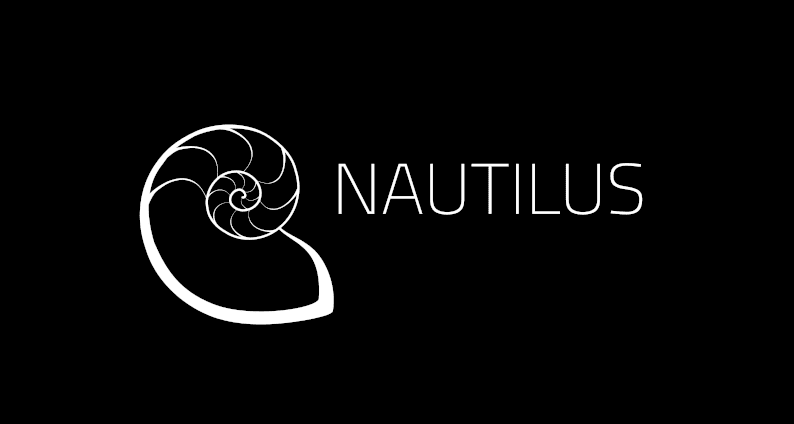

v14.2.0 Nautilus released
We're glad to announce the first release of Nautilus v14.2.0 stable series. There are a lot of changes across components from the previous Ceph release, and we advise everyone to go through the release and upgrade notes carefully.

¶Major Changes from Mimic ¶
Dashboard:
The Ceph Dashboard has gained a lot of new functionality:
- Support for multiple users / roles
- SSO (SAMLv2) for user authentication
- Auditing support
- New landing page, showing more metrics and health info
- I18N support
- REST API documentation with Swagger API
New Ceph management features include:
- OSD management (mark as down/out, change OSD settings, recovery profiles)
- Cluster config settings editor
- Ceph Pool management (create/modify/delete)
- ECP management
- RBD mirroring configuration
- Embedded Grafana Dashboards (derived from Ceph Metrics)
- CRUSH map viewer
- NFS Ganesha management
- iSCSI target management (via ceph-iscsi)
- RBD QoS configuration
- Ceph Manager (ceph-mgr) module management
- Prometheus alert Management
Also, the Ceph Dashboard is now split into its own package named
ceph-mgr-dashboard. You might want to install it separately, if your package management software fails to do so when it installsceph-mgr.RADOS:
- The number of placement groups (PGs) per pool can now be decreased at any time, and the cluster can automatically tune the PG count based on cluster utilization or administrator hints.
- The new v2 wire protocol brings support for encryption on the wire.
- Physical storage devices consumed by OSD and Monitor daemons are now tracked by the cluster along with health metrics (i.e., SMART), and the cluster can apply a pre-trained prediction model or a cloud-based prediction service to warn about expected HDD or SSD failures.
- The NUMA node for OSD daemons can easily be monitored via the
ceph osd numa-statuscommand, and configured via theosd_numa_nodeconfig option. - When BlueStore OSDs are used, space utilization is now broken down by object data, omap data, and internal metadata, by pool, and by pre- and post- compression sizes.
- OSDs more effectively prioritize the most important PGs and objects when performing recovery and backfill.
- Progress for long-running background processes–like recovery after a device failure–is now reported as part of
ceph status. - An experimental Coupled-Layer “Clay” erasure code plugin has been added that reduces network bandwidth and IO needed for most recovery operations.
RGW:
- S3 lifecycle transition for tiering between storage classes.
- A new web frontend (Beast) has replaced civetweb as the default, improving overall performance.
- A new publish/subscribe infrastructure allows RGW to feed events to serverless frameworks like knative or data pipelies like Kafka.
- A range of authentication features, including STS federation using OAuth2 and OpenID::connect and an OPA (Open Policy Agent) authentication delegation prototype.
- The new archive zone federation feature enables full preservation of all objects (including history) in a separate zone.
CephFS:
- MDS stability has been greatly improved for large caches and long-running clients with a lot of RAM. Cache trimming and client capability recall is now throttled to prevent overloading the MDS.
- CephFS may now be exported via NFS-Ganesha clusters in environments managed by Rook. Ceph manages the clusters and ensures high-availability and scalability. An introductory demo is available. More automation of this feature is expected to be forthcoming in future minor releases of Nautilus.
- The MDS
mds_standby_for_*,mon_force_standby_active, andmds_standby_replayconfiguration options have been obsoleted. Instead, the operator may now set the newallow_standby_replayflag on the CephFS file system. This setting causes standbys to become standby-replay for any available rank in the file system. - MDS now supports dropping its cache which concurrently asks clients to trim their caches. This is done using MDS admin socket
cache dropcommand. - It is now possible to check the progress of an on-going scrub in the MDS. Additionally, a scrub may be paused or aborted. See the scrub documentation for more information.
- A new interface for creating volumes is provided via the
ceph volumecommand-line-interface. - A new cephfs-shell tool is available for manipulating a CephFS file system without mounting.
- CephFS-related output from
ceph statushas been reformatted for brevity, clarity, and usefulness. - Lazy IO has been revamped. It can be turned on by the client using the new CEPH_O_LAZY flag to the
ceph_openC/C++ API or via the config optionclient_force_lazyio. - CephFS file system can now be brought down rapidly via the
ceph fs failcommand. See the administration page for more information.
RBD:
- Images can be live-migrated with minimal downtime to assist with moving images between pools or to new layouts.
- New
rbd perf image iotopandrbd perf image iostatcommands provide an iotop- and iostat-like IO monitor for all RBD images. - The ceph-mgr Prometheus exporter now optionally includes an IO monitor for all RBD images.
- Support for separate image namespaces within a pool for tenant isolation.
Misc:
- Ceph has a new set of orchestrator modules to directly interact with external orchestrators like ceph-ansible, DeepSea, Rook, or simply ssh via a consistent CLI (and, eventually, Dashboard) interface.
Upgrading from Mimic or Luminous ¶
Notes ¶
- During the upgrade from Luminous to Nautilus, it will not be possible to create a new OSD using a Luminous ceph-osd daemon after the monitors have been upgraded to Nautilus. We recommend you avoid adding or replacing any OSDs while the upgrade is in progress.
- We recommend you avoid creating any RADOS pools while the upgrade is in progress.
- You can monitor the progress of your upgrade at each stage with the
ceph versionscommand, which will tell you what ceph version(s) are running for each type of daemon.
Instructions ¶
If your cluster was originally installed with a version prior to Luminous, ensure that it has completed at least one full scrub of all PGs while running Luminous. Failure to do so will cause your monitor daemons to refuse to join the quorum on start, leaving them non-functional.
If you are unsure whether or not your Luminous cluster has completed a full scrub of all PGs, you can check your cluster’s state by running:
# ceph osd dump | grep ^flags
In order to be able to proceed to Nautilus, your OSD map must include the
recovery_deletesandpurged_snapdirsflags.If your OSD map does not contain both these flags, you can simply wait for approximately 24-48 hours, which in a standard cluster configuration should be ample time for all your placement groups to be scrubbed at least once, and then repeat the above process to recheck.
However, if you have just completed an upgrade to Luminous and want to proceed to Mimic in short order, you can force a scrub on all placement groups with a one-line shell command, like:
# ceph pg dump pgs_brief | cut -d " " -f 1 | xargs -n1 ceph pg scrub
You should take into consideration that this forced scrub may possibly have a negative impact on your Ceph clients’ performance.
Make sure your cluster is stable and healthy (no down or recovering OSDs). (Optional, but recommended.)
Set the
nooutflag for the duration of the upgrade. (Optional, but recommended.):# ceph osd set noout
Upgrade monitors by installing the new packages and restarting the monitor daemons. For example, on each monitor host,:
# systemctl restart ceph-mon.target
Once all monitors are up, verify that the monitor upgrade is complete by looking for the
nautilusstring in the mon map. The command:# ceph mon dump | grep min_mon_release
should report:
min_mon_release 14 (nautilus)
If it doesn’t, that implies that one or more monitors hasn’t been upgraded and restarted and/or the quorum does not include all monitors.
Upgrade
ceph-mgrdaemons by installing the new packages and restarting all manager daemons. For example, on each manager host,:# systemctl restart ceph-mgr.target
Please note, if you are using Ceph Dashboard, you will probably need to install
ceph-mgr-dashboardseparately after upgradingceph-mgrpackage. The install script ofceph-mgr-dashboardwill restart the manager daemons automatically for you. So in this case, you can just skip the step to restart the daemons.Verify the
ceph-mgrdaemons are running by checkingceph -s:# ceph -s
... services: mon: 3 daemons, quorum foo,bar,baz mgr: foo(active), standbys: bar, baz ...
Upgrade all OSDs by installing the new packages and restarting the ceph-osd daemons on all OSD hosts:
# systemctl restart ceph-osd.target
You can monitor the progress of the OSD upgrades with the
ceph versionsorceph osd versionscommands:# ceph osd versions { "ceph version 13.2.5 (...) mimic (stable)": 12, "ceph version 14.2.0 (...) nautilus (stable)": 22, }
If there are any OSDs in the cluster deployed with ceph-disk (e.g., almost any OSDs that were created before the Mimic release), you need to tell ceph-volume to adopt responsibility for starting the daemons. On each host containing OSDs, ensure the OSDs are currently running, and then:
# ceph-volume simple scan # ceph-volume simple activate --all
We recommend that each OSD host be rebooted following this step to verify that the OSDs start up automatically.
Note that ceph-volume doesn’t have the same hot-plug capability that ceph-disk did, where a newly attached disk is automatically detected via udev events. If the OSD isn’t currently running when the above
scancommand is run, or a ceph-disk-based OSD is moved to a new host, or the host OSD is reinstalled, or the/etc/ceph/osddirectory is lost, you will need to scan the main data partition for each ceph-disk OSD explicitly. For example,:# ceph-volume simple scan /dev/sdb1
The output will include the appopriate
ceph-volume simple activatecommand to enable the OSD.Upgrade all CephFS MDS daemons. For each CephFS file system,
Reduce the number of ranks to 1. (Make note of the original number of MDS daemons first if you plan to restore it later.):
# ceph status # ceph fs set <fs_name> max_mds 1
Wait for the cluster to deactivate any non-zero ranks by periodically checking the status:
# ceph status
Take all standby MDS daemons offline on the appropriate hosts with:
# systemctl stop ceph-mds@<daemon_name>
Confirm that only one MDS is online and is rank 0 for your FS:
# ceph status
Upgrade the last remaining MDS daemon by installing the new packages and restarting the daemon:
# systemctl restart ceph-mds.target
Restart all standby MDS daemons that were taken offline:
# systemctl start ceph-mds.target
Restore the original value of
max_mdsfor the volume:# ceph fs set <fs_name> max_mds <original_max_mds>
Upgrade all radosgw daemons by upgrading packages and restarting daemons on all hosts:
# systemctl restart radosgw.target
Complete the upgrade by disallowing pre-Nautilus OSDs and enabling all new Nautilus-only functionality:
# ceph osd require-osd-release nautilus
If you set
nooutat the beginning, be sure to clear it with:# ceph osd unset noout
Verify the cluster is healthy with
ceph health.To enable the new v2 network protocol, issue the following command:
ceph mon enable-msgr2
This will instruct all monitors that bind to the old default port 6789 for the legacy v1 protocol to also bind to the new 3300 v2 protocol port. To see if all monitors have been updated,:
ceph mon dump
and verify that each monitor has both a
v2:andv1:address listed.For each host that has been upgraded, you should update your
ceph.conffile so that it either specifies no monitor port (if you are running the monitors on the default ports) or references both the v2 and v1 addresses and ports explicitly. Things will still work if only the v1 IP and port are listed, but each CLI instantiation or daemon will need to reconnect after learning the monitors also speak the v2 protocol, slowing things down a bit and preventing a full transition to the v2 protocol.This is also a good time to fully transition any config options in
ceph.confinto the cluster’s configuration database. On each host, you can use the following command to import any options into the monitors with:ceph config assimilate-conf -i /etc/ceph/ceph.conf
You can see the cluster’s configuration database with:
ceph config dump
To create a minimal but sufficient
ceph.conffor each host,:ceph config generate-minimal-conf > /etc/ceph/ceph.conf
Be sure to use this new config only on hosts that have been upgraded to Nautilus, as it may contain a
mon_hostvalue that includes the newv2:andv1:prefixes for IP addresses that is only understood by Nautilus.For more information, see Updating ceph.conf and mon_host.
Consider enabling the telemetry module to send anonymized usage statistics and crash information to the Ceph upstream developers. To see what would be reported (without actually sending any information to anyone),:
ceph mgr module enable telemetry ceph telemetry show
If you are comfortable with the data that is reported, you can opt-in to automatically report the high-level cluster metadata with:
ceph telemetry on
For more information about the telemetry module, see the documentation.
Upgrading from pre-Luminous releases (like Jewel) ¶
You must first upgrade to Luminous (12.2.z) before attempting an upgrade to Nautilus. In addition, your cluster must have completed at least one scrub of all PGs while running Luminous, setting the recovery_deletes and purged_snapdirs flags in the OSD map.
Upgrade compatibility notes ¶
These changes occurred between the Mimic and Nautilus releases.
ceph pg statoutput has been modified in json format to matchceph dfoutput:“raw_bytes” field renamed to “total_bytes”
“raw_bytes_avail” field renamed to “total_bytes_avail”
“raw_bytes_avail” field renamed to “total_bytes_avail”
“raw_bytes_used” field renamed to “total_bytes_raw_used”
“total_bytes_used” field added to represent the space (accumulated over
all OSDs) allocated purely for data objects kept at block(slow) device
ceph df [detail]output (GLOBAL section) has been modified in plain format:new ‘USED’ column shows the space (accumulated over all OSDs) allocated purely for data objects kept at block(slow) device.
‘RAW USED’ is now a sum of ‘USED’ space and space allocated/reserved at
block device for Ceph purposes, e.g. BlueFS part for BlueStore.
ceph df [detail]output (GLOBAL section) has been modified in json format:- ‘total_used_bytes’ column now shows the space (accumulated over all OSDs) allocated purely for data objects kept at block(slow) device
- new ‘total_used_raw_bytes’ column shows a sum of ‘USED’ space and space allocated/reserved at block device for Ceph purposes, e.g. BlueFS part for BlueStore.
ceph df [detail]output (POOLS section) has been modified in plain format:- ‘BYTES USED’ column renamed to ‘STORED’. Represents amount of data stored by the user.
- ‘USED’ column now represent amount of space allocated purely for data by all OSD nodes in KB.
- ‘QUOTA BYTES’, ‘QUOTA OBJECTS’ aren’t showed anymore in non-detailed mode.
- new column ‘USED COMPR’ - amount of space allocated for compressed data. i.e., compressed data plus all the allocation, replication and erasure coding overhead.
- new column ‘UNDER COMPR’ - amount of data passed through compression (summed over all replicas) and beneficial enough to be stored in a compressed form.
- Some columns reordering
ceph df [detail]output (POOLS section) has been modified in json format:‘bytes used’ column renamed to ‘stored’. Represents amount of data stored by the user.
‘raw bytes used’ column renamed to “stored_raw”. Totals of user data
over all OSD excluding degraded.
new ‘bytes_used’ column now represent amount of space allocated by all OSD nodes.
‘kb_used’ column - the same as ‘bytes_used’ but in KB.
new column ‘compress_bytes_used’ - amount of space allocated for compressed data. i.e., compressed data plus all the allocation, replication and erasure coding overhead.
new column ‘compress_under_bytes’ amount of data passed through compression (summed over all replicas) and beneficial enough to be stored in a compressed form.
rados df [detail]output (POOLS section) has been modified in plain format:- ‘USED’ column now shows the space (accumulated over all OSDs) allocated purely for data objects kept at block(slow) device.
- new column ‘USED COMPR’ - amount of space allocated for compressed data. i.e., compressed data plus all the allocation, replication and erasure coding overhead.
- new column ‘UNDER COMPR’ - amount of data passed through compression (summed over all replicas) and beneficial enough to be stored in a compressed form.
rados df [detail]output (POOLS section) has been modified in json format:- ‘size_bytes’ and ‘size_kb’ columns now show the space (accumulated over all OSDs) allocated purely for data objects kept at block device.
- new column ‘compress_bytes_used’ - amount of space allocated for compressed data. i.e., compressed data plus all the allocation, replication and erasure coding overhead.
- new column ‘compress_under_bytes’ amount of data passed through compression (summed over all replicas) and beneficial enough to be stored in a compressed form.
ceph pg dumpoutput (totals section) has been modified in json format:- new ‘USED’ column shows the space (accumulated over all OSDs) allocated purely for data objects kept at block(slow) device.
- ‘USED_RAW’ is now a sum of ‘USED’ space and space allocated/reserved at block device for Ceph purposes, e.g. BlueFS part for BlueStore.
The
ceph osd rmcommand has been deprecated. Users should useceph osd destroyorceph osd purge(but after first confirming it is safe to do so via theceph osd safe-to-destroycommand).The MDS now supports dropping its cache for the purposes of benchmarking.:
ceph tell mds.* cache drop <timeout>
Note that the MDS cache is cooperatively managed by the clients. It is necessary for clients to give up capabilities in order for the MDS to fully drop its cache. This is accomplished by asking all clients to trim as many caps as possible. The timeout argument to the
cache dropcommand controls how long the MDS waits for clients to complete trimming caps. This is optional and is 0 by default (no timeout). Keep in mind that clients may still retain caps to open files which will prevent the metadata for those files from being dropped by both the client and the MDS. (This is an equivalent scenario to dropping the Linux page/buffer/inode/dentry caches with some processes pinning some inodes/dentries/pages in cache.)The
mon_health_preluminous_compatandmon_health_preluminous_compat_warningconfig options are removed, as the related functionality is more than two versions old. Any legacy monitoring system expecting Jewel-style health output will need to be updated to work with Nautilus.Nautilus is not supported on any distros still running upstart so upstart specific files and references have been removed.
The
ceph pg <pgid> list_missingcommand has been renamed toceph pg <pgid> list_unfoundto better match its behaviour.The rbd-mirror daemon can now retrieve remote peer cluster configuration secrets from the monitor. To use this feature, the rbd-mirror daemon CephX user for the local cluster must use the
profile rbd-mirrormon cap. The secrets can be set using therbd mirror pool peer addandrbd mirror pool peer setactions.The ‘rbd-mirror’ daemon will now run in active/active mode by default, where mirrored images are evenly distributed between all active ‘rbd-mirror’ daemons. To revert to active/passive mode, override the ‘rbd_mirror_image_policy_type’ config key to ‘none’.
The
ceph mds deactivateis fully obsolete and references to it in the docs have been removed or clarified.The libcephfs bindings added the
ceph_select_filesystemfunction for use with multiple filesystems.The cephfs python bindings now include
mount_rootandfilesystem_nameoptions in the mount() function.erasure-code: add experimental Coupled LAYer (CLAY) erasure codes support. It features less network traffic and disk I/O when performing recovery.
The
cache dropOSD command has been added to drop an OSD’s caches:ceph tell osd.x cache drop
The
cache statusOSD command has been added to get the cache stats of an OSD:ceph tell osd.x cache status
The libcephfs added several functions that allow restarted client to destroy or reclaim state held by a previous incarnation. These functions are for NFS servers.
The
cephcommand line tool now accepts keyword arguments in the format--arg=valueor--arg value.librados::IoCtx::nobjects_begin()andlibrados::NObjectIteratornow communicate errors by throwing astd::system_errorexception instead ofstd::runtime_error.The callback function passed to
LibRGWFS.readdir()now accepts aflagsparameter. it will be the last parameter passed toreaddir()method.The
cephfs-data-scan scan_linksnow automatically repair inotables and snaptable.Configuration values
mon_warn_not_scrubbedandmon_warn_not_deep_scrubbedhave been renamed. They are nowmon_warn_pg_not_scrubbed_ratioandmon_warn_pg_not_deep_scrubbed_ratiorespectively. This is to clarify that these warnings are related to pg scrubbing and are a ratio of the related interval. These options are now enabled by default.The MDS cache trimming is now throttled. Dropping the MDS cache via the
ceph tell mds.<foo> cache dropcommand or large reductions in the cache size will no longer cause service unavailability.The CephFS MDS behavior with recalling caps has been significantly improved to not attempt recalling too many caps at once, leading to instability. MDS with a large cache (64GB+) should be more stable.
MDS now provides a config option
mds_max_caps_per_client(default: 1M) to limit the number of caps a client session may hold. Long running client sessions with a large number of caps have been a source of instability in the MDS when all of these caps need to be processed during certain session events. It is recommended to not unnecessarily increase this value.The MDS config
mds_recall_state_timeouthas been removed. Late client recall warnings are now generated based on the number of caps the MDS has recalled which have not been released. The new configsmds_recall_warning_threshold(default: 32K) andmds_recall_warning_decay_rate(default: 60s) sets the threshold for this warning.The Telegraf module for the Manager allows for sending statistics to an Telegraf Agent over TCP, UDP or a UNIX Socket. Telegraf can then send the statistics to databases like InfluxDB, ElasticSearch, Graphite and many more.
The graylog fields naming the originator of a log event have changed: the string-form name is now included (e.g.,
"name": "mgr.foo"), and the rank-form name is now in a nested section (e.g.,"rank": {"type": "mgr", "num": 43243}).If the cluster log is directed at syslog, the entries are now prefixed by both the string-form name and the rank-form name (e.g.,
mgr.x mgr.12345 ...instead of justmgr.12345 ...).The JSON output of the
ceph osd findcommand has replaced theipfield with anaddrssection to reflect that OSDs may bind to multiple addresses.CephFS clients without the ‘s’ flag in their authentication capability string will no longer be able to create/delete snapshots. To allow
client.footo create/delete snapshots in thebardirectory of filesystemcephfs_a, use command:ceph auth caps client.foo mon 'allow r' osd 'allow rw tag cephfs data=cephfs_a' mds 'allow rw, allow rws path=/bar'
The
osd_heartbeat_addroption has been removed as it served no (good) purpose: the OSD should always check heartbeats on both the public and cluster networks.The
radostool’smkpoolandrmpoolcommands have been removed because they are redundant; please use theceph osd pool createandceph osd pool rmcommands instead.The
auidproperty for cephx users and RADOS pools has been removed. This was an undocumented and partially implemented capability that allowed cephx users to map capabilities to RADOS pools that they “owned”. Because there are no users we have removed this support. If any cephx capabilities exist in the cluster that restrict based on auid then they will no longer parse, and the cluster will report a health warning like:AUTH_BAD_CAPS 1 auth entities have invalid capabilities client.bad osd capability parse failed, stopped at 'allow rwx auid 123' of 'allow rwx auid 123'
The capability can be adjusted with the
ceph auth capscommand. For example,:ceph auth caps client.bad osd 'allow rwx pool foo'
The
ceph-kvstore-toolrepaircommand has been renameddestructive-repairsince we have discovered it can corrupt an otherwise healthy rocksdb database. It should be used only as a last-ditch attempt to recover data from an otherwise corrupted store.The default memory utilization for the mons has been increased somewhat. Rocksdb now uses 512 MB of RAM by default, which should be sufficient for small to medium-sized clusters; large clusters should tune this up. Also, the
mon_osd_cache_sizehas been increase from 10 OSDMaps to 500, which will translate to an additional 500 MB to 1 GB of RAM for large clusters, and much less for small clusters.The
mgr/balancer/max_misplacedoption has been replaced by a new globaltarget_max_misplaced_ratiooption that throttles both balancer activity and automated adjustments topgp_num(normally as a result ofpg_numchanges). If you have customized the balancer module option, you will need to adjust your config to set the new global option or revert to the default of .05 (5%).By default, Ceph no longer issues a health warning when there are misplaced objects (objects that are fully replicated but not stored on the intended OSDs). You can reenable the old warning by setting
mon_warn_on_misplacedtotrue.The
ceph-create-keystool is now obsolete. The monitors automatically create these keys on their own. For now the script prints a warning message and exits, but it will be removed in the next release. Note thatceph-create-keyswould also write the admin and bootstrap keys to /etc/ceph and /var/lib/ceph, but this script no longer does that. Any deployment tools that relied on this behavior should instead make use of theceph auth export <entity-name>command for whichever key(s) they need.The
mon_osd_pool_ec_fast_readoption has been renamedosd_pool_default_ec_fast_readto be more consistent with otherosd_pool_default_*options that affect default values for newly created RADOS pools.The
mon addrconfiguration option is now deprecated. It can still be used to specify an address for each monitor in theceph.conffile, but it only affects cluster creation and bootstrapping, and it does not support listing multiple addresses (e.g., both a v2 and v1 protocol address). We strongly recommend the option be removed and instead a singlemon hostoption be specified in the[global]section to allow daemons and clients to discover the monitors.New command
ceph fs failhas been added to quickly bring down a file system. This is a single command that unsets the joinable flag on the file system and brings down all of its ranks.The
cache dropadmin socket command has been removed. Theceph tell mds.X cache dropremains.
Detailed Changelog ¶
- add monitoring subdir and Grafana cluster dashboard (pr#21850, Jan Fajerski)
- auth,common: include cleanups (pr#23774, Kefu Chai)
- bluestore: bluestore/NVMEDevice.cc: fix ceph_assert() when enable SPDK with 64KB kernel page size (issue#36624, pr#24817, tone.zhang)
- bluestore: bluestore/NVMEDevice.cc: fix NVMEManager thread hang (issue#37720, pr#25646, tone.zhang, Steve Capper)
- bluestore: bluestore/NVMe: use PCIe selector as the path name (pr#24144, Kefu Chai)
- bluestore,cephfs,core,rbd,rgw: buffer,denc: use ptr::const_iterator for decode (pr#22015, Kefu Chai, Casey Bodley)
- bluestore: ceph-kvstore-tool: dump fixes (pr#25262, Adam Kupczyk)
- bluestore: common/blkdev: check retval of stat() (pr#26040, Kefu Chai)
- bluestore,core: ceph-dencoder: add bluefs types (pr#22463, Sage Weil)
- bluestore,core,mon,performance: osd,mon: enable level_compaction_dynamic_level_bytes for rocksdb (issue#24361, pr#22337, Kefu Chai)
- bluestore,core: os/bluestore: don’t store/use path_block.{db,wal} from meta (pr#22462, Sage Weil, Alfredo Deza)
- bluestore: os/bluestore: add bluestore_ignore_data_csum option (pr#26233, Sage Weil)
- bluestore: os/bluestore: add boundary check for cache-autotune related settings (issue#37507, pr#25421, xie xingguo)
- bluestore: os/bluestore/BlueFS: only flush dirty devices when do _fsync (pr#22110, Jianpeng Ma)
- bluestore: os/bluestore: bluestore_buffer_hit_bytes perf counter doesn’t reset (pr#23576, Igor Fedotov)
- bluestore: os/bluestore: check return value of _open_bluefs (pr#25471, Jianpeng Ma)
- bluestore: os/bluestore: cleanups (pr#22556, Jianpeng Ma)
- bluestore: os/bluestore: deep fsck fails on inspecting very large onodes (pr#26170, Igor Fedotov)
- bluestore: os/bluestore: do not assert on non-zero err codes from compress() call (pr#25891, Igor Fedotov)
- bluestore: os/bluestore: firstly delete db then delete bluefs if open db met error (pr#22336, Jianpeng Ma)
- bluestore: os/bluestore: fix and unify log output on allocation failure (pr#25335, Igor Fedotov)
- bluestore: os/bluestore: fix assertion in StupidAllocator::get_fragmentation (pr#23606, Igor Fedotov)
- bluestore: os/bluestore: fix bloom filter num entry miscalculation in repairer (issue#25001, pr#24076, Igor Fedotov)
- bluestore: os/bluestore: fix bluefs extent miscalculations on small slow device (pr#22563, Igor Fedotov)
- bluestore: os/bluestore: fix race between remove_collection and object removals (pr#23257, Igor Fedotov)
- bluestore: os/bluestore: fixup access a destroy cond cause deadlock or undefine behavior (pr#25659, linbing)
- bluestore: os/bluestore: introduce new BlueFS perf counter to track the amount of (pr#22086, Igor Fedotov)
- bluestore: os/bluestore/KernelDevice: misc cleanup (pr#21491, Jianpeng Ma)
- bluestore: os/bluestore/KernelDevice: use flock(2) for block device lock (issue#38150, pr#26245, Sage Weil)
- bluestore: os/bluestore: misc cleanup (pr#22472, Jianpeng Ma)
- bluestore: os/bluestore: Only use F_SET_FILE_RW_HINT when available (pr#26431, Willem Jan Withagen)
- bluestore: os/bluestore: Only use
WRITE_LIFE_when available (pr#25735, Willem Jan Withagen) - bluestore: os/bluestore: remove redundant fault_range (pr#22898, Jianpeng Ma)
- bluestore: os/bluestore: remove useless condtion (pr#22335, Jianpeng Ma)
- bluestore: os/bluestore: simplify and fix SharedBlob::put() (issue#24211, pr#22123, Sage Weil)
- bluestore: os/bluestore: support for FreeBSD (pr#25608, Alan Somers, Kefu Chai)
- bluestore: osd/osd_types: fix pg_t::contains() to check pool id too (issue#32731, pr#24085, Sage Weil)
- bluestore: os/objectstore: add a new op OP_CREATE (pr#22385, Jianpeng Ma)
- bluestore,performance: common/PriorityCache: First Step toward priority based caching (pr#22009, Mark Nelson)
- bluestore,performance: os/bluestore: allocator pruning (pr#21854, Igor Fedotov)
- bluestore,performance: os/bluestore/BlueFS: reduce bufferlist rebuilds during WAL writes (pr#21689, Piotr Dałek)
- bluestore,performance: os/bluestore: use the monotonic clock for perf counters latencies (pr#22121, Mohamad Gebai)
- bluestore: silence Clang warning on possible uninitialize usuage (pr#25702, Willem Jan Withagen)
- bluestore: spdk: fix ceph-osd crash when activate SPDK (issue#24371, pr#22356, tone-zhang)
- bluestore: test/fio: add option single_pool_mode in ceph-bluestore.fio (pr#21929, Jianpeng Ma)
- bluestore,tests: test/objectstore: fix random generator in allocator_bench (pr#22544, Igor Fedotov)
- bluestore,tools: os/bluestore: allow ceph-bluestore-tool to coalesce, add and migrate BlueFS backing volumes (pr#23103, Igor Fedotov)
- bluestore,tools: tools/ceph-bluestore-tool: avoid mon/config access when calling global… (pr#22085, Igor Fedotov)
- build/ops: Add new OpenSUSE Leap id for install-deps.sh (issue#25064, pr#22793, Kyr Shatskyy)
- build/ops: arch/arm: Allow ceph_crc32c_aarch64 to be chosen only if it is compil… (pr#24126, David Wang)
- build/ops: auth: do not use GSS/KRB5 if ! HAVE_GSSAPI (pr#25460, Kefu Chai)
- build/ops: build: 32 bit architecture fixes (pr#23485, James Page)
- build/ops: build: further removal of subman configuration (issue#38261, pr#26368, Alfredo Deza)
- build/ops: build: LLVM ld does not like the versioning scheme (pr#26801, Willem Jan Withagen)
- build/ops: ceph-create-keys: Misc Python 3 fixes (issue#37641, pr#25411, James Page)
- build/ops,cephfs: deb,rpm: fix python-cephfs dependencies (issue#24919, issue#24918, pr#23043, Kefu Chai)
- build/ops: ceph.in: Add support for python 3 (pr#24739, Tiago Melo)
- build/ops: ceph.spec.in: Don’t use noarch for mgr module subpackages, fix /usr/lib64/ceph/mgr dir ownership (pr#26398, Tim Serong)
- build/ops: change ceph-mgr package depency from py-bcrypt to python2-bcrypt (issue#27206, pr#23648, Konstantin Sakhinov)
- build/ops: civetweb: pull up to ceph-master (pr#26515, Abhishek Lekshmanan)
- build/ops: cmake,do_freebsd.sh: disable rdma features (pr#22752, Kefu Chai)
- build/ops: cmake/modules/BuildDPDK.cmake: Build required DPDK libraries (issue#36341, pr#24487, Brad Hubbard)
- build/ops: cmake/modules/BuildRocksDB.cmake: enable compressions for rocksdb (issue#24025, pr#22181, Kefu Chai)
- build/ops: cmake,rgw: make amqp support optional (pr#26555, Kefu Chai)
- build/ops: cmake,rpm,deb: install mgr plugins into /usr/share/ceph/mgr (pr#26446, Kefu Chai)
- build/ops: cmake,seastar: pick up latest seastar (pr#25474, Kefu Chai)
- build/ops,common: compressor: Fix build of Brotli Compressor (pr#24967, BI SHUN KE)
- build/ops,common,core: test: make readable.sh fail if it doesn’t run anything (pr#24812, Greg Farnum)
- build/ops,core: cmake,common,filestore: silence gcc-8 warnings/errors (pr#21837, Kefu Chai)
- build/ops,core,rbd: include/memory.h: remove memory.h (pr#22690, Kefu Chai)
- build/ops,core: systemd: only restart 3 times in 30 minutes, as fast as possible (issue#24368, pr#22349, Greg Farnum)
- build/ops,core,tests: objectstore/test/fio: Fixed fio compilation when tcmalloc is used (pr#23962, Adam Kupczyk)
- build/ops: credits.sh: Ignore package-lock.json and .xlf files (pr#24762, Tiago Melo)
- build/ops: deb: drop redundant ceph-common recommends (pr#20133, Nathan Cutler)
- build/ops: debian/control: change Architecture python plugins to “all” (pr#26377, Kefu Chai)
- build/ops: debian/control: require fuse for ceph-fuse (issue#21057, pr#23675, Thomas Serlin)
- build/ops: debian: correct ceph-common relationship with older radosgw package (pr#24996, Matthew Vernon)
- build/ops: debian: drop ‘-DUSE_CRYPTOPP=OFF’ from cmake options (pr#22471, Kefu Chai)
- build/ops: debian: librados-dev should replace librados2-dev (pr#25916, Kefu Chai)
- build/ops: debian/rules: fix ceph-mgr .pyc files left behind (issue#26883, pr#23615, Dan Mick)
- build/ops: deb,rpm,do_cmake: switch to cmake3 (pr#22896, Kefu Chai)
- build/ops: dmclock, cmake: sync up with ceph/dmclock, dmclock related cleanups (issue#26998, pr#23643, Kefu Chai)
- build/ops: dmclock: update dmclock submodule sha1 to tip of ceph/dmclock.git master (pr#23837, Ricardo Dias)
- build/ops: do_cmake.sh: automate py3 build options for certain distros (pr#25205, Nathan Cutler)
- build/ops: do_cmake.sh: SUSE builds need WITH_RADOSGW_AMQP_ENDPOINT=OFF (pr#26695, Nathan Cutler)
- build/ops: do_freebsd.sh: FreeBSD building needs the llvm linker (pr#25247, Willem Jan Withagen)
- build/ops: dout: declare dpp using decltype(auto) instead of auto (pr#22207, Kefu Chai)
- build/ops: dpdk: drop dpdk submodule (issue#24032, pr#21856, Kefu Chai)
- build/ops: examples/Makefile: add -Wno-unused-parameter to avoid compile error (pr#23581, You Ji)
- build/ops: Improving make check reliability (pr#22441, Erwan Velu)
- build/ops: include: define errnos if not defined for better portablity (pr#25302, Willem Jan Withagen)
- build/ops: install-deps: check the exit status for the $builddepcmd (pr#22682, Yunchuan Wen)
- build/ops: install-deps: do not specify unknown options (pr#24315, Kefu Chai)
- build/ops: install-deps: install setuptools before upgrading virtualenv (pr#25039, Kefu Chai)
- build/ops: install-deps: nuke wheelhouse if it’s stale (pr#22028, Kefu Chai)
- build/ops: install-deps,run-make-check: use ceph-libboost repo (issue#25186, pr#23995, Kefu Chai)
- build/ops: install-deps.sh: Add Kerberos requirement for FreeBSD (pr#25688, Willem Jan Withagen)
- build/ops: install-deps.sh: disable centos-sclo-rh-source (issue#37707, pr#25629, Brad Hubbard)
- build/ops: install-deps.sh: fix gcc detection and install pre-built libboost on bionic (pr#25169, Changcheng Liu, Kefu Chai)
- build/ops: install-deps.sh: fix installing gcc on ubuntu when no old compiler (pr#22488, Tomasz Setkowski)
- build/ops: install-deps.sh: import ubuntu-toolchain-r’s key without keyserver (pr#22964, Kefu Chai)
- build/ops: install-deps.sh: install libtool-ltdl-devel for building python-saml (pr#25071, Kefu Chai)
- build/ops: install-deps.sh: refrain from installing/using lsb_release, and other cleanup (issue#18163, pr#23361, Nathan Cutler)
- build/ops: install-deps.sh: Remove CR repo (issue#13997, pr#25211, Brad Hubbard, Alfredo Deza)
- build/ops: install-deps.sh: selectively install dependencies (pr#26402, Kefu Chai)
- build/ops: install-deps.sh: set with_seastar (pr#23079, Nathan Cutler)
- build/ops: install-deps.sh: support install gcc7 in xenial aarch64 (pr#22451, Yunchuan Wen)
- build/ops: install-deps.sh: Update python requirements for FreeBSD (pr#25245, Willem Jan Withagen)
- build/ops: install-deps.sh: use the latest setuptools (pr#26156, Kefu Chai)
- build/ops: install-deps: s/openldap-client/openldap24-client/ (pr#23912, Kefu Chai)
- build/ops: libradosstriper: conditional compile (pr#21983, Jesse Williamson)
- build/ops: make-debs.sh: clean dir to allow building deb packages multiple times (pr#25177, Changcheng Liu)
- build/ops: man: skip directive starting with “..” (pr#23580, Kefu Chai)
- build/ops,mgr: build: mgr: check for python’s ssl version linkage (issue#24282, pr#22659, Kefu Chai, Abhishek Lekshmanan)
- build/ops,mgr: cmake,deb,rpm: remove cython 0.29’s subinterpreter check, re-enable build with cython 0.29+ (pr#25585, Tim Serong)
- build/ops: mgr/dashboard: Add html-linter (pr#24273, Tiago Melo)
- build/ops: mgr/dashboard: Add i18n validation script (pr#25179, Tiago Melo)
- build/ops: mgr/dashboard: Add package-lock.json (pr#23285, Tiago Melo)
- build/ops: mgr/dashboard: Disable showing xi18n’s progress (pr#25427, Tiago Melo)
- build/ops: mgr/dashboard: Fix run-frontend-e2e-tests.sh (pr#25157, Tiago Melo)
- build/ops: mgr/dashboard: fix the version of all frontend dependencies (pr#22712, Tiago Melo)
- build/ops: mgr/dashboard: Remove angular build progress logs during cmake (pr#23115, Tiago Melo)
- build/ops: mgr/dashboard: Update Node.js to current LTS (pr#24932, Tiago Melo)
- build/ops: mgr/dashboard: Update node version (pr#22639, Tiago Melo)
- build/ops: mgr/diskprediction: Replace local predictor model file (pr#24484, Rick Chen)
- build/ops,mgr: mgr/dashboard: Fix building under FreeBSD (pr#22562, Willem Jan Withagen)
- build/ops: move dmclock subtree into submodule (pr#21651, Danny Al-Gaaf)
- build/ops,pybind: ceph: do not raise StopIteration within generator (pr#25400, Jason Dillaman)
- build/ops,rbd: osd,mon,pybind: Make able to compile with Clang (pr#21861, Adam C. Emerson)
- build/ops,rbd: selinux: add support for ceph iscsi (pr#24936, Mike Christie)
- build/ops,rbd: systemd: enable ceph-rbd-mirror.target (pr#24935, Sébastien Han)
- build/ops,rgw: build/rgw: unittest_rgw_dmclock_scheduler does not need Boost_LIBRARIES (pr#26799, Willem Jan Withagen)
- build/ops,rgw: cls: build cls_otp only WITH_RADOSGW (pr#22548, Piotr Dałek)
- build/ops,rgw: deb,rpm: package librgw_admin_user.{h,so.*} (pr#22205, Kefu Chai)
- build/ops: rocksdb: sync with upstream (issue#23653, pr#22236, Kefu Chai)
- build/ops: rpm: bump up required GCC version to 7.3.1 (pr#24130, Kefu Chai)
- build/ops: rpm,deb: remove python-jinja2 dependency (pr#26379, Kefu Chai)
- build/ops: rpm: do not exclude s390x build on openSUSE (pr#26268, Nathan Cutler)
- build/ops: rpm: Fix Fedora error “No matching package to install: ‘Cython3’” (issue#35831, pr#23993, Brad Hubbard)
- build/ops: rpm: fix libradospp-devel runtime dependency (pr#25491, Nathan Cutler)
- build/ops: rpm: fix seastar build dependencies for SUSE (pr#23089, Nathan Cutler)
- build/ops: rpm: fix seastar build dependencies (pr#23386, Nathan Cutler)
- build/ops: rpm: fix xmlsec1 build dependency for dashboard make check (pr#26119, Nathan Cutler)
- build/ops: rpm: Install python2-Cython on f28 (pr#26756, Brad Hubbard)
- build/ops: rpm: make ceph-grafana-dashboards own its directories (issue#37485, pr#25347, Nathan Cutler, Tim Serong)
- build/ops: rpm: make Python dependencies somewhat less confusing (pr#25963, Nathan Cutler)
- build/ops: rpm: make sudo a build dependency (pr#23077, Nathan Cutler)
- build/ops: rpm: package crypto libraries for all archs (pr#26202, Nathan Cutler)
- build/ops: rpm: Package grafana dashboards (pr#24735, Boris Ranto)
- build/ops: rpm: provide files moved from ceph-test … (issue#22558, pr#20401, Nathan Cutler)
- build/ops: rpm: RHEL 8 fixes (pr#26520, Ken Dreyer)
- build/ops: rpm: RHEL 8 needs Python 3 build (pr#25223, Nathan Cutler)
- build/ops: rpm: stop install-deps.sh clobbering spec file Python build setting (issue#37301, pr#25181, Nathan Cutler, Brad Hubbard)
- build/ops: rpm: Use hardened LDFLAGS (issue#36316, pr#24425, Boris Ranto)
- build/ops: rpm: use updated gperftools (issue#35969, pr#24124, Kefu Chai)
- build/ops: rpm: Use updated gperftools-libs at runtime (issue#36508, pr#24652, Brad Hubbard)
- build/ops: run-make-check: enable –with-seastar option (pr#22809, Kefu Chai)
- build/ops: run-make-check: set WITH_SEASTAR with a non-empty string (pr#23108, Kefu Chai)
- build/ops: run-make-check.sh: Adding ccache tuning for the CI (pr#22847, Erwan Velu)
- build/ops: run-make-check.sh: ccache goodness for everyone (issue#24817, issue#24777, pr#22867, Nathan Cutler)
- build/ops: run-make-check: should use sudo for running sysctl (pr#23708, Kefu Chai)
- build/ops: run-make-check: Showing configuration before the build (pr#23609, Erwan Velu)
- build/ops: seastar: lower the required yaml-cpp version to 0.5.1 (pr#23255, Kefu Chai)
- build/ops: seastar: pickup the change to link pthread (pr#25671, Kefu Chai)
- build/ops: selinux: Allow ceph to execute ldconfig (pr#20118, Boris Ranto)
- build/ops: spdk: update to latest spdk-18.05 branch (pr#22547, Kefu Chai)
- build/ops: spec: requires ceph base instead of common (issue#37620, pr#25503, Sébastien Han)
- build/ops: test: move ceph-dencoder to src/tools (pr#23228, Kefu Chai)
- build/ops: test,qa: s/.libs/lib/ (pr#20734, Kefu Chai)
- build/ops,tests: cmake,run-make-check: always enable WITH_GTEST_PARALLEL (pr#23382, Kefu Chai)
- build/ops,tests: deb,rpm,qa: split dashboard package (pr#26380, Kefu Chai)
- build/ops,tests: mgr/dashboard: Fix localStorage problem in Jest (pr#23281, Tiago Melo)
- build/ops,tests: mgr/dashboard: Object Gateway user configuration (pr#25494, Laura Paduano)
- build/ops,tests: src/test: Using gtest-parallel to speedup unittests (pr#22577, Kefu Chai, Erwan Velu)
- build/ops,tests: tests/fio: fix build failures and ensure this is covered by run-make-check.sh (pr#23231, Kefu Chai, Igor Fedotov)
- build/ops,tests: tests/qa: Adding $ distro mix - rgw (pr#21932, Yuri Weinstein)
- build/ops,tests: tools/ceph-dencoder: conditionally link against mds (pr#25255, Kefu Chai)
- build/ops,tools: tool: link rbd-ggate against librados-cxx (pr#24901, Willem Jan Withagen)
- ceph-disk: get_partition_dev() should fail until get_dev_path(partnam… (pr#21415, Erwan Velu)
- cephfs: doc/releases: update CephFS mimic notes (issue#23775, pr#22232, Patrick Donnelly)
- cephfs: mgr/dashboard: NFS Ganesha management REST API (pr#25918, Lenz Grimmer, Ricardo Dias, Jeff Layton)
- cephfs,mgr,pybind: pybind/mgr: Unified bits of volumes and orchestrator (pr#25492, Sebastian Wagner)
- cephfs,mon: MDSMonitor: silence unable to load metadata (pr#25693, Song Shun)
- cephfs,mon: mon/MDSMonitor: do not send redundant MDS health messages to cluster log (issue#24308, pr#22252, Sage Weil)
- cephfs: qa: fix symlink (pr#23997, Patrick Donnelly)
- cephfs,rbd: osdc: Fix the wrong BufferHead offset (pr#22495, dongdong tao)
- cephfs,rbd: osdc: optimize the code doing the BufferHead mapping (pr#22509, dongdong tao)
- cephfs,rbd: osdc: reduce ObjectCacher’s memory fragments (issue#36192, pr#24297, “Yan, Zheng”)
- cephfs,tests: qa: fix run call args (issue#36450, pr#24597, Patrick Donnelly)
- cephfs,tests: qa: install python3-cephfs for fs suite (pr#23411, Kefu Chai)
- cephfs,tests: qa/suites/powercycle: whitelist MDS_SLOW_REQUEST (pr#23151, Neha Ojha)
- cephfs,tests: qa/workunits/suites/pjd.sh: use correct dir name (pr#22233, Neha Ojha)
- ceph-volume: activate option –auto-detect-objectstore respects –no-systemd (issue#36249, pr#24355, Alfredo Deza)
- ceph-volume: Adapt code to support Python3 (pr#25324, Volker Theile)
- ceph-volume: add –all flag to simple activate (pr#26225, Jan Fajerski)
- ceph-volume add a __release__ string, to help version-conditional calls (issue#25171, pr#23332, Alfredo Deza)
- ceph-volume: add inventory command (issue#24972, pr#24859, Jan Fajerski)
- ceph-volume: Additional work on ceph-volume to add some choose_disk capabilities (issue#36446, pr#24504, Erwan Velu)
- ceph-volume add new ceph-handlers role from ceph-ansible (issue#36251, pr#24336, Alfredo Deza)
- ceph-volume: adds a –prepare flag to lvm batch (issue#36363, pr#24587, Andrew Schoen)
- ceph-volume: add space between words (pr#26246, Sébastien Han)
- ceph-volume: adds test for ceph-volume lvm list /dev/sda (issue#24784, issue#24957, pr#23348, Andrew Schoen)
- ceph-volume: Add unit test (pr#25321, Volker Theile)
- ceph-volume: allow to specify –cluster-fsid instead of reading from ceph.conf (issue#26953, pr#24407, Alfredo Deza)
- ceph-volume: an OSD ID must be exist and be destroyed before reuse (pr#23093, Andrew Schoen, Ron Allred)
- ceph-volume batch: allow journal+block.db sizing on the CLI (issue#36088, pr#24201, Alfredo Deza)
- ceph-volume batch: allow –osds-per-device, default it to 1 (issue#35913, pr#24060, Alfredo Deza)
- ceph-volume batch carve out lvs for bluestore (pr#24019, Alfredo Deza)
- ceph-volume batch command (issue#24492, pr#23075, Alfredo Deza)
- ceph-volume: batch tests for mixed-type of devices (issue#35535, issue#27210, pr#23963, Alfredo Deza)
- ceph-volume custom cluster names fail on filestore trigger (issue#27210, pr#24251, Alfredo Deza)
- ceph-volume: do not pin the testinfra version for the simple tests (pr#23268, Andrew Schoen)
- ceph-volume: do not send (lvm) stderr/stdout to the terminal, use the logfile (issue#36492, pr#24738, Alfredo Deza)
- ceph-volume do not use stdin in luminous (issue#25173, pr#23355, Alfredo Deza)
- ceph-volume: don’t create osd[‘block.db’] by default (issue#38472, pr#26627, Jan Fajerski)
- ceph-volume: earlier detection for –journal and –filestore flag requirements (issue#24794, pr#24150, Alfredo Deza)
- ceph-volume: enable device discards (issue#36532, pr#24676, Jonas Jelten)
- ceph-volume enable –no-systemd flag for simple sub-command (issue#36470, pr#24998, Alfredo Deza)
- ceph-volume: enable the ceph-osd during lvm activation (issue#24152, pr#23321, Dan van der Ster)
- ceph-volume ensure encoded bytes are always used (issue#24993, pr#23289, Alfredo Deza)
- ceph-volume: error on commands that need ceph.conf to operate (issue#23941, pr#22724, Andrew Schoen)
- ceph-volume expand auto engine for multiple devices on filestore (issue#24553, pr#23731, Andrew Schoen, Alfredo Deza)
- ceph-volume: expand auto engine for single type devices on filestore (issue#24960, pr#23532, Alfredo Deza)
- ceph-volume expand on the LVM API to create multiple LVs at different sizes (issue#24020, pr#22426, Alfredo Deza)
- ceph-volume: extract flake8 config (pr#24674, Mehdi Abaakouk)
- ceph-volume: fix Batch object in py3 environments (pr#25203, Jan Fajerski)
- ceph-volume: fix journal and filestore data size in lvm batch –report (issue#36242, pr#24274, Andrew Schoen)
- ceph-volume: fix JSON output in inventory (issue#37390, pr#25224, Sebastian Wagner)
- ceph-volume: Fix TypeError: join() takes exactly one argument (2 given) (issue#37595, pr#25469, Sebastian Wagner)
- ceph-volume fix TypeError on dmcrypt when using Python3 (pr#26034, Alfredo Deza)
- ceph-volume fix zap not working with LVs (issue#35970, pr#24077, Alfredo Deza)
- ceph-volume: implement __format__ in Size to format sizes in py3 (issue#38291, pr#26401, Jan Fajerski)
- ceph-volume initial take on auto sub-command (pr#21803, Alfredo Deza)
- ceph-volume: introduce class hierachy for strategies (issue#37389, pr#25238, Jan Fajerski)
- ceph-volume: lsblk can fail to find PARTLABEL, must fallback to blkid (issue#36098, pr#24330, Alfredo Deza)
- ceph-volume lvm.activate conditional mon-config on prime-osd-dir (issue#25216, pr#23375, Alfredo Deza)
- ceph-volume lvm.activate Do not search for a MON configuration (pr#22393, Wido den Hollander)
- ceph-volume: lvm batch allow extra flags (like dmcrypt) for bluestore (issue#26862, pr#23448, Alfredo Deza)
- ceph-volume lvm.batch remove non-existent sys_api property (issue#34310, pr#23787, Alfredo Deza)
- ceph-volume lvm.listing only include devices if they exist (issue#24952, pr#23129, Alfredo Deza)
- ceph-volume lvm.prepare update help to indicate partitions are needed, not devices (issue#24795, pr#24394, Alfredo Deza)
- ceph-volume: make Device hashable to allow set of Device list in py3 (issue#38290, pr#26399, Jan Fajerski)
- ceph-volume: make lvm batch idempotent (issue#26864, pr#24404, Andrew Schoen)
- ceph-volume: mark a device not available if it belongs to ceph-disk (pr#26084, Andrew Schoen)
- ceph-volume normalize comma to dot for string to int conversions (issue#37442, pr#25674, Alfredo Deza)
- ceph-volume: patch Device when testing (issue#36768, pr#25063, Alfredo Deza)
- ceph-volume process.call with stdin in Python 3 fix (issue#24993, pr#23141, Alfredo Deza)
- ceph-volume: provide a nice errror message when missing ceph.conf (pr#22828, Andrew Schoen)
- ceph-volume: PVolumes.get() should return one PV when using name or uuid (issue#24784, pr#23234, Andrew Schoen)
- ceph-volume: refuse to zap mapper devices (issue#24504, pr#22764, Andrew Schoen)
- ceph-volume: reject devices that have existing GPT headers (issue#27062, pr#25098, Andrew Schoen)
- ceph-volume: remove iteritems instances (issue#38299, pr#26403, Jan Fajerski)
- ceph-volume: remove LVs when using zap –destroy (pr#25093, Alfredo Deza)
- ceph-volume remove version reporting from help menu (issue#36386, pr#24531, Alfredo Deza)
- ceph-volume: rename Device property valid to available (issue#36701, pr#25007, Jan Fajerski)
- ceph-volume: replace testinfra command with py.test (issue#38568, pr#26739, Alfredo Deza)
- ceph-volume: Restore SELinux context (pr#23278, Boris Ranto)
- ceph-volume: revert partition as disk (issue#37506, pr#25390, Jan Fajerski)
- ceph-volume: run tests without waiting on ceph repos (pr#23697, Andrew Schoen)
- ceph-volume: set number of osd ports in the tests (pr#26753, Andrew Schoen)
- ceph-volume: set permissions right before prime-osd-dir (issue#37486, pr#25477, Andrew Schoen, Alfredo Deza)
- ceph-volume: simple scan will now scan all running ceph-disk OSDs (pr#26826, Andrew Schoen)
- ceph-volume: skip processing devices that don’t exist when scanning system disks (issue#36247, pr#24372, Alfredo Deza)
- ceph-volume: sort and align lvm list output (pr#21812, Theofilos Mouratidis)
- ceph-volume systemd import main so console_scripts work for executable (issue#36648, pr#24840, Alfredo Deza)
- ceph-volume tests destroy osds on monitor hosts (pr#22437, Alfredo Deza)
- ceph-volume tests do not include admin keyring in OSD nodes (issue#24417, pr#22399, Alfredo Deza)
- ceph-volume tests/functional add mgrs daemons to lvm tests (issue#26879, pr#23489, Alfredo Deza)
- ceph-volume tests.functional add notario dep for ceph-ansible (pr#22116, Alfredo Deza)
- ceph-volume tests/functional declare ceph-ansible roles instead of importing them (issue#37805, pr#25820, Alfredo Deza)
- ceph-volume tests.functional fix typo when stopping osd.0 in filestore (issue#37675, pr#25594, Alfredo Deza)
- ceph-volume: tests.functional inherit SSH_ARGS from ansible (issue#34311, pr#23788, Alfredo Deza)
- ceph-volume tests/functional run lvm list after OSD provisioning (issue#24961, pr#23116, Alfredo Deza)
- ceph-volume tests/functional use Ansible 2.6 (pr#23182, Alfredo Deza)
- ceph-volume tests install ceph-ansible’s requirements.txt dependencies (issue#36672, pr#24881, Alfredo Deza)
- ceph-volume tests patch __release__ to mimic always for stdin keys (pr#23398, Alfredo Deza)
- ceph-volume tests.systemd update imports for systemd module (issue#36704, pr#24937, Alfredo Deza)
- ceph-volume: test with multiple NVME drives (issue#37409, pr#25354, Andrew Schoen)
- ceph-volume: unmount lvs correctly before zapping (issue#24796, pr#23117, Andrew Schoen)
- ceph-volume: update testing playbook ‘deploy.yml’ (pr#26397, Guillaume Abrioux)
- ceph-volume: update version of ansible to 2.6.x for simple tests (pr#23263, Andrew Schoen)
- ceph-volume: use console_scripts (issue#36601, pr#24773, Mehdi Abaakouk)
- ceph-volume: use our own testinfra suite for functional testing (pr#26685, Andrew Schoen)
- ceph-volume util.encryption don’t push stderr to terminal (issue#36246, pr#24399, Alfredo Deza)
- ceph-volume util.encryption robust blkid+lsblk detection of lockbox (pr#24977, Alfredo Deza)
- ceph-volume zap devices associated with an OSD ID and/or OSD FSID (pr#25429, Alfredo Deza)
- ceph-volume zap: improve zapping to remove all partitions and all LVs, encrypted or not (issue#37449, pr#25330, Alfredo Deza)
- cleanup: Clean up warnings (pr#23919, Adam C. Emerson)
- cli: dump osd-fsid as part of osd find
(pr#26015, Noah Watkins) - cmake: add “add_npm_command()” command (pr#22636, Kefu Chai)
- cmake: Add cls_opt for vstart target (pr#22538, Ali Maredia)
- cmake: add dpdk::dpdk if dpdk is built or found (issue#24948, pr#23620, Nathan Cutler, Kefu Chai)
- cmake: add option WITH_LIBRADOSSTRIPER (pr#23732, Kefu Chai)
- cmake: allow setting of the CTest timeout during building (pr#22800, Willem Jan Withagen)
- cmake: always prefer local symbols (issue#25154, pr#23320, Kefu Chai)
- cmake: always turn off bjam debugging output (pr#22204, Kefu Chai)
- cmake: bump up the required boost version to 1.67 (pr#22392, Kefu Chai)
- cmake: bump up the required fmt version (pr#23283, Kefu Chai)
- cmake: cleanups (pr#23166, Kefu Chai)
- cmake: cleanups (pr#23279, Kefu Chai)
- cmake: cleanups (pr#23300, Kefu Chai)
- cmake,crimson/net: add keepalive support, and enable unittest_seastar_messenger in “make check” (pr#23642, Kefu Chai)
- cmake: detect armv8 crc and crypto feature using CHECK_C_COMPILER_FLAG (issue#17516, pr#24168, Kefu Chai)
- cmake: disable -Werror-stringop-truncation for rocksdb (pr#22591, Kefu Chai)
- cmake: do not check for aligned_alloc() anymore (issue#23653, pr#22046, Kefu Chai)
- cmake: do not depend on ${DPDK_LIBRARIES} if not using bundled dpdk (issue#24449, pr#22938, Kefu Chai)
- cmake: do not install hello demo module (pr#21886, John Spray)
- cmake: do not link against common_crc_aarch64 (pr#23366, Kefu Chai)
- cmake: do not pass -B{symbolic,symbolic-functions} to linker on FreeBSD (pr#24920, Willem Jan Withagen)
- cmake: do not pass unnecessary param to setup.py (pr#25186, Kefu Chai)
- cmake: do not use Findfmt.cmake for checking libfmt-dev (pr#23390, Kefu Chai)
- cmake: do not use plain target_link_libraries(rgw_a …) (pr#24515, Kefu Chai)
- cmake: enable RTTI for both debug and release RocksDB builds (pr#22286, Igor Fedotov)
- cmake: find a python2 interpreter for gtest-parallel (pr#22931, Kefu Chai)
- cmake: find liboath using the correct name (pr#22430, Kefu Chai)
- cmake: fix a cmake error when with -DALLOCATOR=jemalloc (pr#23380, Jianpeng Ma)
- cmake: fix build WITH_SYSTEM_BOOST=ON (pr#23510, Kefu Chai)
- cmake: fix compilation with distcc and other compiler wrappers (pr#24605, Alexey Sheplyakov, Kefu Chai)
- cmake: fix cython target in test/CMakeFile.txt (pr#22295, Jan Fajerski)
- cmake: fix Debug build WITH_SEASTAR=ON (pr#23567, Kefu Chai)
- cmake: fixes to enable WITH_ASAN with clang and GCC (pr#24692, Kefu Chai)
- cmake: fix find system rockdb (pr#22439, Alexey Shabalin)
- cmake: fix std::filesystem detection and extract sanitizer detection into its own module (pr#23384, Kefu Chai)
- cmake: fix syntax error of set() (pr#26582, Kefu Chai)
- cmake: fix the build WITH_DPDK=ON (pr#23650, Kefu Chai, Casey Bodley)
- cmake: fix version matching for Findfmt (pr#23996, Mohamad Gebai)
- cmake: fix “WITH_STATIC_LIBSTDCXX” (pr#22990, Kefu Chai)
- cmake: let rbd_api depend on librbd-tp (pr#25641, Kefu Chai)
- cmake: link against gtest in a better way (pr#23628, Kefu Chai)
- cmake: link ceph-osd with common statically (pr#22720, Radoslaw Zarzynski)
- cmake: link compressor plugins against lib the modern way (pr#23852, Kefu Chai)
- cmake: make -DWITH_MGR=OFF work (pr#22077, Jianpeng Ma)
- cmake: Make the tests for finding Filesystem with more serious functions (pr#26316, Willem Jan Withagen)
- cmake: modularize src/perfglue (pr#23254, Kefu Chai)
- cmake: move ceph-osdomap-tool, ceph-monstore-tool out of ceph-test (pr#19964, runsisi)
- cmake: move crypto_plugins target (pr#21891, Casey Bodley)
- cmake: no libradosstriper headers if WITH_LIBRADOSSTRIPER=OFF (issue#35922, pr#24029, Nathan Cutler, Kefu Chai)
- cmake: no need to add “-D” before definitions (pr#23795, Kefu Chai)
- cmake: oath lives in liboath (pr#22494, Willem Jan Withagen)
- cmake: only build extra boost libraries only if WITH_SEASTAR (pr#22521, Kefu Chai)
- cmake: remove checking for GCC 5.1 (pr#24477, Kefu Chai)
- cmake: remove deleted rgw_request.cc from CMakeLists.txt (pr#22186, Casey Bodley)
- cmake: Remove embedded ‘cephd’ code (pr#21940, Dan Mick)
- cmake: remove workarounds for supporting cmake 2.x (pr#22912, Kefu Chai)
- cmake: rgw_common should depend on tracing headers (pr#22367, Kefu Chai)
- cmake: rocksdb related cleanup (pr#23441, Kefu Chai)
- cmake: should link against libatomic if libcxx/libstdc++ does not off… (pr#22952, Kefu Chai)
- cmake: update fio version from 3.5 to 540e235dcd276e63c57 (pr#22019, Jianpeng Ma)
- cmake: use $CMAKE_BINARY_DIR for default $CEPH_BUILD_VIRTUALENV (issue#36737, pr#26091, Kefu Chai)
- cmake: use javac -h for creating JNI native headers (issue#24012, pr#21822, Kefu Chai)
- cmake: use OpenSSL::Crypto instead of OPENSSL_LIBRARIES (pr#24368, Kefu Chai)
- cmake: vstart target can build WITH_CEPHFS/RBD/MGR=OFF (pr#25204, Casey Bodley)
- common: add adaptor for seastar::temporary_buffer (pr#22454, Kefu Chai, Casey Bodley)
- common: add a generic async Completion for use with boost::asio (pr#21914, Casey Bodley)
- common: add lockless md_config_t (pr#22710, Kefu Chai)
- common: async/dpdk: when enable dpdk, multiple message queue defect (pr#25404, zhangyongsheng)
- common: auth/cephx: minor code cleanup (pr#21155, runsisi)
- common: auth, common: cleanups (pr#26383, Kefu Chai)
- common: auth,common: use ceph::mutex instead of LockMutex (pr#24263, Kefu Chai)
- common: avoid the overhead of
ANNOTATE_HAPPENS_*in NDEBUG builds (pr#25129, Radoslaw Zarzynski) - common: be more informative if set PID-file fails (pr#23647, Willem Jan Withagen)
- common: blkdev: Rework API and add FreeBSD support (pr#24658, Alan Somers)
- common: buffer: mark the iterator traits “public” (pr#25409, Kefu Chai)
- common: calculate stddev on the fly (pr#21461, Yao Zongyou)
- common: ceph.in: use correct module for cmd flags (pr#26454, Patrick Donnelly)
- common: ceph-volume add device_id to inventory listing (pr#25201, Jan Fajerski)
- common: changes to address FTBFS on fc30 (pr#26301, Kefu Chai)
- common: common/admin_socket: add new api unregister_commands(AdminSocketHook … (pr#21718, Jianpeng Ma)
- common: common,auth,crimson: add logging to crimson (pr#23957, Kefu Chai)
- common: common/buffer: fix compiler bug when enable DEBUG_BUFFER (pr#25848, Jianpeng Ma)
- common: common/buffer: remove repeated condtion-check (pr#25420, Jianpeng Ma)
- common: common/config: add ConfigProxy for crimson (pr#23074, Kefu Chai)
- common: common/config: fix the lock in ConfigProxy::diff() (pr#23276, Kefu Chai)
- common: common/config_values: friend md_config_impl<> (pr#23020, Mykola Golub, Kefu Chai)
- common: common: drop the unused methods from SharedLRU (pr#26224, Radoslaw Zarzynski)
- common: common/KeyValueDB: Get rid of validate parameter (pr#25377, Adam Kupczyk)
- common: common/numa: Add shim routines for NUMA on FreeBSD (pr#25920, Willem Jan Withagen)
- common: common, osd: set mclock priority as 1 by default (pr#26022, Abhishek Lekshmanan)
- common: common/random_cache: remove unused RandomCache (pr#26253, Kefu Chai)
- common: common/shared_cache: add lockless SharedLRU (pr#22736, Kefu Chai)
- common: common/shared_cache: bumps it to the front of the LRU if key existed (pr#25370, Jianpeng Ma)
- common: common/shared_cache: fix racing issues (pr#25150, Jianpeng Ma)
- common: common/util: pass real hostname when running in kubernetes/rook container (pr#23798, Sage Weil)
- common: complete all throttle blockers when we set average or max to 0 (issue#36715, pr#24965, Dongsheng Yang)
- common,core: msg/async: clean up local buffers on dispatch (issue#35987, pr#24111, Greg Farnum)
- common,core,tests: qa/tests: update links for centos latest to point to 7.5 (pr#22923, Vasu Kulkarni)
- common/crc/aarch64: Added cpu feature pmull and make aarch64 specific… (pr#22178, Adam Kupczyk)
- common: crimson/common: write configs synchronously on shard.0 (pr#23284, Kefu Chai)
- common,crimson: port perfcounters to seastar (pr#24141, chunmei Liu)
- common: crypto: QAT based Encryption for RGW (pr#19386, Ganesh Maharaj Mahalingam)
- common: crypto: use ceph_assert_always for assertions (pr#23654, Casey Bodley)
- common: define BOOST_COROUTINES_NO_DEPRECATION_WARNING if not yet (pr#26502, Kefu Chai)
- common: drop allocation tracking from bufferlist (pr#25454, Radoslaw Zarzynski)
- common: drop append_buffer from bufferlist. Use simple carriage instead (pr#25077, Radoslaw Zarzynski)
- common: drop at_buffer_{head,tail} from buffer::ptr (pr#25422, Radoslaw Zarzynski)
- common: drop/mark-as-final getters of buffer::raw for palign (pr#24087, Radoslaw Zarzynski)
- common: drop static_assert.h as it looks unused (pr#22743, Radoslaw Zarzynski)
- common: drop the unused buffer::raw_mmap_pages (pr#24040, Radoslaw Zarzynski)
- common: drop the unused zero-copy facilities in ceph::bufferlist (pr#24031, Radoslaw Zarzynski)
- common: drop unused get_max_pipe_size() in buffer.cc (pr#25432, Radoslaw Zarzynski)
- common: ec: lrc doesn’t depend on crosstalks between bufferlists anymore (pr#25595, Radoslaw Zarzynski)
- common: expand meta in parse_argv() (pr#23474, Kefu Chai)
- common: fix access and add name for the token bucket throttle (pr#25372, Shiyang Ruan)
- common: Fix Alpine compatability for TEMP_FAILURE_RETRY and ACCESSPERMS (pr#24813, Willem Jan Withagen)
- common: fix a racing in PerfCounters::perf_counter_data_any_d::read_avg (issue#25211, pr#23362, ludehp)
- common: fix for broken rbdmap parameter parsing (pr#24446, Marc Schoechlin)
- common: fix missing include boost/noncopyable.hpp (pr#24278, Willem Jan Withagen)
- common: fix typo in rados bench write JSON output (issue#24199, pr#22112, Sandor Zeestraten)
- common: fix typos in BackoffThrottle (pr#24691, Shiyang Ruan)
- common: Formatters: improve precision of double numbers (pr#25745, Коренберг Марк)
- common: .gitignore: Ignore .idea directory (pr#24237, Volker Theile)
- common: hint bufferlist’s buffer_track_c_str accordingly (pr#25424, Radoslaw Zarzynski)
- common: hypercombined bufferlist (pr#24882, Radoslaw Zarzynski)
- common: include/compat.h: make pthread_get_name_np work when available (pr#23641, Willem Jan Withagen)
- common: include include/types.h early, otherwise Clang will error (pr#22493, Willem Jan Withagen)
- common: include/types: move operator<< into the proper namespace (pr#23767, Kefu Chai)
- common: include/types: space between number and units (pr#22063, Sage Weil)
- common: librados,rpm,deb: various fixes to address librados3 transition and cleanups in librados (pr#24896, Kefu Chai)
- common: make CEPH_BUFFER_ALLOC_UNIT known at compile-time (pr#26259, Radoslaw Zarzynski)
- common: mark BlkDev::serial() const to match with its declaration (pr#24702, Willem Jan Withagen)
- common: messages: define HEAD_VERSION and COMPAT_VERSION inlined (pr#23623, Kefu Chai)
- common,mgr: mgr/MgrClient: make some noise for a user if no mgr daemon is running (pr#23492, Sage Weil)
- common: mon/MonClient: set configs via finisher (issue#24118, pr#21984, Sage Weil)
- common: msg/async: fix FTBFS of dpdk (pr#23168, Kefu Chai)
- common: msg/async: Skip the duplicated processing of the same link (pr#20952, shangfufei)
- common: msg/msg_types.h: do not cast ceph_entity_name to entity_name_t for printing (pr#26315, Kefu Chai)
- common: msgr/async/rdma: Return from poll system call with EINTR should be retried (pr#25138, Stig Telfer)
- common: Mutex -> ceph::mutex (issue#12614, pr#25105, Kefu Chai, Sage Weil)
- common: optimize reference counting in bufferlist (pr#25082, Radoslaw Zarzynski)
- common: OpTracker doesn’t visit TrackedOp when nref == 0 (issue#24037, pr#22156, Radoslaw Zarzynski)
- common: os/filestore: fix throttle configurations (pr#21926, Li Wang)
- common,performance: auth,common: add lockless auth (pr#23591, Kefu Chai)
- common,performance: common/assert: mark assert helpers with [[gnu::cold]] (pr#23326, Kefu Chai)
- common,performance: compressor: add QAT support (pr#19714, Qiaowei Ren)
- common,performance: denc: fix internal fragmentation when decoding ptr in bl (pr#25264, Kefu Chai)
- common,rbd: misc: mark constructors as explicit (pr#21637, Danny Al-Gaaf)
- common: reinit StackStringStream on clear (pr#25751, Patrick Donnelly)
- common: reintroduce async SharedMutex (issue#24124, pr#22698, Casey Bodley)
- common: Reverse deleted include (pr#23838, Willem Jan Withagen)
- common: Revert “common: add an async SharedMutex” (issue#24124, pr#21986, Casey Bodley)
- common,rgw: cls/rbd: init local var with known value (pr#25588, Kefu Chai)
- common,tests: run-standalone.sh: Need double-quotes to handle | in core_pattern on all distributions (issue#38325, pr#26436, David Zafman)
- common,tests: test_shared_cache: fix memory leak (pr#25215, Jianpeng Ma)
- common: vstart: do not attempt to re-initialize dashboard for existing cluster (pr#23261, Jason Dillaman)
- core: Add support for osd_delete_sleep configuration value (issue#36474, pr#24749, David Zafman)
- core: auth: drop the RWLock in AuthClientHandler (pr#23699, Kefu Chai)
- core: auth/krb: Fix Kerberos build warnings (pr#25639, Daniel Oliveira)
- core: build: disable kerberos for nautilus (pr#26258, Sage Weil)
- core: ceph_argparse: fix –verbose (pr#25961, Patrick Nawracay)
- core: ceph.in: friendlier message on EPERM (issue#25172, pr#23330, John Spray)
- core: ceph.in: write bytes to stdout in raw_write() (pr#25280, Kefu Chai)
- core: ceph_test_rados_api_misc: remove obsolete LibRadosMiscPool.PoolCreationRace (issue#24150, pr#22042, Sage Weil)
- core: Clang misses
include (pr#23768, Willem Jan Withagen) - core: common/blkdev.h: use std::string (pr#25783, Neha Ojha)
- core: common/options: remove unused ms async affinity options (pr#26099, Josh Durgin)
- core: common/util.cc: add CONTAINER_NAME processing for metadata (pr#25383, Dan Mick)
- core: compressor: building error for QAT decompress (pr#22609, Qiaowei Ren)
- core: crush, osd: handle multiple parents properly when applying pg upmaps (issue#23921, pr#21815, xiexingguo)
- core: erasure-code: add clay codes (issue#19278, pr#24291, Myna V, Sage Weil)
- core: erasure-code: fixes alignment issue when clay code is used with jerasure, cauchy_orig (pr#24586, Myna)
- core: global/signal_handler.cc: report assert_file as correct name (pr#23738, Dan Mick)
- core: include/rados: clarify which flags go where for copy_from (pr#24497, Ilya Dryomov)
- core: include/rados.h: hide CEPH_OSDMAP_PGLOG_HARDLIMIT from ceph -s (pr#25887, Neha Ojha)
- core: kv/KeyValueDB: Move PriCache implementation to ShardedCache (pr#25925, Mark Nelson)
- core: kv/KeyValueDB: return const char* from MergeOperator::name() (issue#26875, pr#23477, Sage Weil)
- core: messages/MOSDPGScan: fix initialization of query_epoch (pr#22408, wumingqiao)
- core: mgr/balancer: add cmd to list all plans (issue#37418, pr#21937, Yang Honggang)
- core: mgr/BaseMgrModule: drop GIL for ceph_send_command (issue#38537, pr#26723, Sage Weil)
- core: mgr/MgrClient: Protect daemon_health_metrics (issue#23352, pr#23404, Kjetil Joergensen, Brad Hubbard)
- core,mgr: mon/MgrMonitor: change ‘unresponsive’ message to info level (issue#24222, pr#22158, Sage Weil)
- core,mgr,rbd: mgr: generalize osd perf query and make counters accessible from modules (pr#25114, Mykola Golub)
- core,mgr,rbd: osd: support more dynamic perf query subkey types (pr#25371, Mykola Golub)
- core,mgr,rbd,rgw: rgw, common: Fixes SCA issues (pr#22007, Danny Al-Gaaf)
- core: mgr/smart: remove obsolete smart module (pr#26411, Sage Weil)
- core: mon/LogMonitor: call no_reply() on ignored log message (pr#22098, Sage Weil)
- core: mon/MonClient: avoid using magic number for the MAuth::protocol (pr#23747, Kefu Chai)
- core: mon/MonClient: extract MonSub out (pr#23688, Kefu Chai)
- core: mon/MonClient: use scoped_guard instead of goto (pr#24304, Kefu Chai)
- core,mon: mon,osd: dump “compression_algorithms” in “mon metadata” (issue#22420, pr#21809, Kefu Chai, Casey Bodley)
- core,mon: mon/OSDMonitor: no_reply on MOSDFailure messages (issue#24322, pr#22259, Sage Weil)
- core,mon: mon/OSDMonitor: Warnings for expected_num_objects (issue#24687, pr#23072, Douglas Fuller)
- core: mon/OSDMonitor: two “ceph osd crush class rm” fixes (pr#24657, xie xingguo)
- core: mon/PGMap: fix PGMapDigest decode (pr#22066, Sage Weil)
- core: mon/PGMap: include unknown PGs in ‘pg ls’ (pr#24032, Sage Weil)
- core: msg/async: do not trigger RESETSESSION from connect fault during connection phase (issue#36612, pr#25343, Sage Weil)
- core: msg/async/Event: clear time_events on shutdown (issue#24162, pr#22093, Sage Weil)
- core: msg/async: fix banner_v1 check in ProtocolV2 (pr#26714, Yingxin Cheng)
- core: msg/async: fix include in frames_v2.h (pr#26711, Yingxin Cheng)
- core: msg/async: fix is_queued() semantics (pr#24693, Ilya Dryomov)
- core: msg/async: keep connection alive only actually sending (pr#24301, Haomai Wang, Kefu Chai)
- core: os/bluestore: fix deep-scrub operation againest disk silent errors (pr#23629, Xiaoguang Wang)
- core: os/bluestore: fix flush_commit locking (issue#21480, pr#22083, Sage Weil)
- core: OSD: add impl for filestore to get dbstatistics (issue#24591, pr#22633, lvshuhua)
- core: osdc: Change ‘bool budgeted’ to ‘int budget’ to avoid recalculating (pr#21242, Jianpeng Ma)
- core: OSD: ceph-osd parent process need to restart log service after fork (issue#24956, pr#23090, redickwang)
- core: osdc/Objecter: fix split vs reconnect race (issue#22544, pr#23850, Sage Weil)
- core: osdc/Objecter: no need null pointer check for op->session anymore (pr#25230, runsisi)
- core: osdc/Objecter: possible race condition with connection reset (issue#36183, pr#24276, Jason Dillaman)
- core: osdc: self-managed snapshot helper should catch decode exception (issue#24000, pr#21804, Jason Dillaman)
- core: osd, librados: add unset-manifest op (pr#21999, Myoungwon Oh)
- core: osd,mds: make ‘config rm …’ idempotent (issue#24408, pr#22395, Sage Weil)
- core: osd/mon: fix upgrades for pg log hard limit (issue#36686, pr#25816, Neha Ojha, Yuri Weinstein)
- core: osd,mon: increase mon_max_pg_per_osd to 250 (pr#23251, Neha Ojha)
- core: osd,mon,msg: use intrusive_ptr for holding Connection::priv (issue#20924, pr#22292, Kefu Chai)
- core: osd/OSD: choose heartbeat peers more carefully (pr#23487, xie xingguo)
- core: osd/OSD: drop extra/wrong *unregister_pg* (pr#21816, xiexingguo)
- core: osd/OSDMap: be more aggressive when trying to balance (issue#37940, pr#26039, xie xingguo)
- core: osd/OSDMap: drop local pool filter in calc_pg_upmaps (pr#26605, xie xingguo)
- core: osd/OSDMap: fix CEPHX_V2 osd requirement to nautilus, not mimic (pr#23249, Sage Weil)
- core: osd/OSDMap: fix upmap mis-killing for erasure-coded PGs (pr#25365, ningtao, xie xingguo)
- core: osd/OSDMap: potential access violation fix (issue#37881, pr#25930, xie xingguo)
- core: osd/OSDMap: using std::vector::reserve to reduce memory reallocation (pr#26478, xie xingguo)
- core: osd/OSD: ping monitor if we are stuck at __waiting_for_healthy__ (pr#23958, xie xingguo)
- core: osd/OSD: preallocate for _get_pgs/_get_pgids to avoid reallocate (pr#25434, Jianpeng Ma)
- core: osd/PG: async-recovery should respect historical missing objects (pr#24004, xie xingguo)
- core: osd/PG.cc: account for missing set irrespective of last_complete (issue#37919, pr#26175, Neha Ojha)
- core: osd/PG: create new PGs from activate in last_peering_reset epoch (issue#24452, pr#22478, Sage Weil)
- core: osd/PG: do not choose stray osds as async_recovery_targets (pr#22330, Neha Ojha)
- core: osd/PG: fix misused FORCE_RECOVERY[BACKFILL] flags (issue#27985, pr#23904, xie xingguo)
- core: osd/PGLog.cc: check if complete_to points to log.end() (pr#23450, Neha Ojha)
- core: osd/PGLog: trim - avoid dereferencing invalid iter (pr#23546, xie xingguo)
- core: osd/PG: remove unused functions (pr#26155, Kefu Chai)
- core: osd/PG: reset PG on osd down->up; normalize query processing (issue#24373, pr#22456, Sage Weil)
- core: osd/PG: restrict async_recovery_targets to up osds (pr#22664, Neha Ojha)
- core: osd/PG: unset history_les_bound if local-les is used (pr#22524, Kefu Chai)
- core: osd/PG: write pg epoch when resurrecting pg after delete vs merge race (issue#35923, pr#24061, Sage Weil)
- core: osd/PrimaryLogPG: do not count failed read in delta_stats (pr#25687, Kefu Chai)
- core: osd/PrimaryLogPG: fix last_peering_reset checking on manifest flushing (pr#26778, xie xingguo)
- core: osd/PrimaryLogPG: fix on_local_recover crash on stray clone (pr#22396, Sage Weil)
- core: osd/PrimaryLogPG: fix potential pg-log overtrimming (pr#23317, xie xingguo)
- core: osd/PrimaryLogPG: fix the extent length error of the sync read (pr#25584, Xiaofei Cui)
- core: osd/PrimaryLogPG: fix try_flush_mark_clean write contention case (issue#24174, pr#22084, Sage Weil)
- core: osd/PrimaryLogPG: optimize recover order (pr#23587, xie xingguo)
- core: osd/PrimaryLogPG: update missing_loc more carefully (issue#35546, pr#23895, xie xingguo)
- core: osd/ReplicatedBackend: remove useless assert (pr#21243, Jianpeng Ma)
- core: osd/Session: fix invalid iterator dereference in Session::have_backoff() (issue#24486, pr#22497, Sage Weil)
- core: osd: write “debug dump_missing” output to stdout (pr#21960, Коренберг Маркr)
- core: os/kstore: support db statistic (pr#21487, Yang Honggang)
- core: os/memstore: use ceph::mutex and friends (pr#26026, Kefu Chai)
- core,performance: core: avoid unnecessary refcounting of OSDMap on OSD’s hot paths (pr#24743, Radoslaw Zarzynski)
- core,performance: msg/async: avoid put message within write_lock (pr#20731, Haomai Wang)
- core,performance: os/bluestore: make osd shard-thread do oncommits (pr#22739, Jianpeng Ma)
- core,performance: osd/filestore: Change default filestore_merge_threshold to -10 (issue#24686, pr#22761, Douglas Fuller)
- core,performance: osd/OSDMap: map pgs with smaller batchs in calc_pg_upmaps (pr#23734, huangjun)
- core: PG: release reservations after backfill completes (issue#23614, pr#22255, Neha Ojha)
- core: pg stuck in backfill_wait with plenty of disk space (issue#38034, pr#26375, xie xingguo, David Zafman)
- core,pybind: pybind/rados: new methods for manipulating self-managed snapshots (pr#22579, Jason Dillaman)
- core: qa/suites/rados: minor fixes (pr#22195, Neha Ojha)
- core: qa/suites/rados/thrash-erasure-code*/thrashers/*: less likely resv rejection injection (pr#24667, Sage Weil)
- core: qa/suites/rados/thrash-old-clients: only centos and 16.04 (pr#22106, Sage Weil)
- core: qa/suites: set osd_pg_log_dups_tracked in cfuse_workunit_suites_fsync.yaml (pr#21909, Neha Ojha)
- core: qa/suites/upgrade/luminous-x: disable c-o-t import/export tests between versions (issue#38294, pr#27018, Sage Weil)
- core: qa/suites/upgrade/mimic-x/parallel: enable all classes (pr#27011, Sage Weil)
- core: qa/workunits/mgr/test_localpool.sh: use new config syntax (pr#22496, Sage Weil)
- core: qa/workunits/rados/test_health_warnings: prevent out osds (issue#37776, pr#25732, Sage Weil)
- core: rados.pyx: make all exceptions accept keyword arguments (issue#24033, pr#21853, Rishabh Dave)
- core: rados: return legacy address in ‘lock info’ (pr#26150, Jason Dillaman)
- core: scrub warning check incorrectly uses mon scrub interval (issue#37264, pr#25112, David Zafman)
- core: src: no ‘dne’ acronym in user cmd output (pr#21094, Gu Zhongyan)
- core,tests: Minor cleanups in tests and log output (issue#38631, issue#38678, pr#26899, David Zafman)
- core,tests: qa/overrides/short_pg_log.yaml: reduce osd_{min,max}_pg_log_entries (issue#38025, pr#26101, Neha Ojha)
- core,tests: qa/suites/rados/thrash: change crush_tunables to jewel in rados_api_tests (issue#38042, pr#26122, Neha Ojha)
- core,tests: qa/suites/upgrade/luminous-x: a few fixes (pr#22092, Sage Weil)
- core,tests: qa/tests: Set ansible-version: 2.5 (issue#24926, pr#23123, Yuri Weinstein)
- core,tests: Removal of snapshot with corrupt replica crashes osd (issue#23875, pr#22476, David Zafman)
- core,tests: test: Verify a log trim trims the dup_index (pr#26533, Brad Hubbard)
- core,tools: osdmaptool: fix wrong test_map_pgs_dump_all output (pr#22280, huangjun)
- core,tools: rados: provide user with more meaningful error message (pr#26275, Mykola Golub)
- core,tools: tools/rados: allow reuse object for write test (pr#25128, Li Wang)
- core: vstart.sh: Support SPDK in Ceph development deployment (pr#22975, tone.zhang)
- crimson: add MonClient (pr#23849, Kefu Chai)
- crimson: cache osdmap using LRU cache (pr#26254, Kefu Chai, Jianpeng Ma)
- crimson/common: apply config changes also on shard.0 (pr#23631, Yingxin)
- crimson/connection: misc changes (pr#23044, Kefu Chai)
- crimson: crimson/mon: remove timeout support from mon::Client::authenticate() (pr#24660, Kefu Chai)
- crimson/mon: move mon::Connection into .cc (pr#24619, Kefu Chai)
- crimson/net: concurrent dispatch for SocketMessenger (pr#24090, Casey Bodley)
- crimson/net: encapsulate protocol implementations with states (pr#25176, Yingxin, Kefu Chai)
- crimson/net: encapsulate protocol implementations with states (remaining part) (pr#25207, Yingxin)
- crimson/net: fix addresses during banner exchange (pr#25580, Yingxin)
- crimson/net: fix compile errors in test_alien_echo.cc (pr#24629, Yingxin)
- crimson/net: fix crimson msgr error leaks to caller (pr#25716, Yingxin)
- crimson/net: fix misc issues for segment-fault and test-failures (pr#25939, Yingxin Cheng, Kefu Chai)
- crimson/net: Fix racing for promise on_message (pr#24097, Yingxin)
- crimson/net: fix unittest_seastar_messenger errors (pr#23539, Yingxin)
- crimson/net: implement accepting/connecting states (pr#24608, Yingxin)
- crimson/net: miscellaneous fixes to seastar-msgr (pr#23816, Yingxin, Casey Bodley)
- crimson/net: misc fixes and features for crimson-messenger tests (pr#26221, Yingxin Cheng)
- crimson/net: seastar-msgr refactoring (pr#24576, Yingxin)
- crimson/net: s/repeat/keep_doing/ (pr#23898, Kefu Chai)
- crimson/osd: add heartbeat support (pr#26222, Kefu Chai)
- crimson/osd: add more heartbeat peers (pr#26255, Kefu Chai)
- crimson/osd: correct the order of parameters passed to OSD::_preboot() (pr#26774, chunmei Liu)
- crimson/osd: crimson osd driver (pr#25304, Radoslaw Zarzynski, Kefu Chai)
- crimson/osd: remove “force_new” from ms_get_authorizer() (pr#26054, Kefu Chai)
- crimson/osd: send known addresses at boot (pr#26452, Kefu Chai)
- crimson: persist/load osdmap to/from store (pr#26090, Kefu Chai)
- crimson: port messenger to seastar (pr#22491, Kefu Chai, Casey Bodley)
- crimson/thread: add thread pool (pr#22565, Kefu Chai)
- crimson/thread: pin thread pool to given CPU (pr#22776, Kefu Chai)
- crush/CrushWrapper: silence compiler warning (pr#25336, Li Wang)
- crush: fix device_class_clone for unpopulated/empty weight-sets (issue#23386, pr#22127, Sage Weil)
- crush: fix memory leak (pr#25959, xie xingguo)
- crush: fix upmap overkill (issue#37968, pr#26179, xie xingguo)
- dashboard/mgr: Save button doesn’t prevent saving an invalid form (issue#36426, pr#24577, Patrick Nawracay)
- dashboard: Return float if rate not available (pr#22313, Boris Ranto)
- doc: add Ceph Manager Dashboard to top-level TOC (pr#26390, Nathan Cutler)
- doc: add ceph-volume inventory sections (pr#25092, Jan Fajerski)
- doc: add documentation for iostat (pr#22034, Mohamad Gebai)
- doc: added demo document changes section (pr#24791, James McClune)
- doc: added rbd default features (pr#24720, Gaurav Sitlani)
- doc: added some Civetweb configuration options (pr#24073, Anton Oks)
- doc: Added some hints on how to further accelerate builds with ccache (pr#25394, Lenz Grimmer)
- doc: add instructions about using “serve-doc” to preview built document (pr#24471, Kefu Chai)
- doc: add mds state transition diagram (issue#22989, pr#22996, Patrick Donnelly)
- doc: Add mention of ceph osd pool stats (pr#25575, Thore Kruess)
- doc: add missing 12.2.11 release note (pr#26596, Nathan Cutler)
- doc: add note about LVM volumes to ceph-deploy quick start (pr#23879, David Wahler)
- doc: add release notes for 12.2.11 luminous (pr#26228, Abhishek Lekshmanan)
- doc: add spacing to subcommand references (pr#24669, James McClune)
- doc: add “–timeout” option to rbd-nbd (pr#24302, Stefan Kooman)
- doc/bluestore: fix minor typos in compression section (pr#22874, David Disseldorp)
- doc: broken link on troubleshooting-mon page (pr#25312, James McClune)
- doc: bump up sphinx and pyyaml versions (pr#26044, Kefu Chai)
- doc: ceph-deploy would not support –cluster option anymore (pr#26471, Tatsuya Naganawa)
- doc: ceph: describe application subcommand in ceph man page (pr#20645, Rishabh Dave)
- doc: ceph-iscsi-api ports should not be public facing (pr#24248, Jason Dillaman)
- doc: ceph-volume describe better the options for migrating away from ceph-disk (issue#24036, pr#21890, Alfredo Deza)
- doc: ceph-volume dmcrypt and activate –all documentation updates (issue#24031, pr#22062, Alfredo Deza)
- doc: ceph-volume: expand on why ceph-disk was replaced (pr#23194, Alfredo Deza)
- doc: ceph-volume: lvm batch documentation and man page updates (issue#24970, pr#23443, Alfredo Deza)
- doc: ceph-volume: update batch documentation to explain filestore strategies (issue#34309, pr#23785, Alfredo Deza)
- doc: ceph-volume: zfs, the initial first submit (pr#23674, Willem Jan Withagen)
- doc: cleaned up troubleshooting OSDs documentation (pr#23519, James McClune)
- doc: Clean up field names in ServiceDescription and add a service field (pr#26006, Jeff Layton)
- doc: cleanup: prune Argonaut-specific verbiage (pr#22899, Nathan Cutler)
- doc: cleanup rendering syntax (pr#22389, Mahati Chamarthy)
- doc: Clean up the snapshot consistency note (pr#25655, Greg Farnum)
- doc: common,mon: add implicit #include headers (pr#23930, Kefu Chai)
- doc: common/options: add description of osd objectstore backends (issue#24147, pr#22040, Alfredo Deza)
- doc: corrected options of iscsiadm command (pr#26395, ZhuJieWen)
- doc: correct rbytes description (pr#24966, Xiang Dai)
- doc: describe RBD QoS settings (pr#25202, Mykola Golub)
- doc: doc/bluestore: data doesn’t use two partitions (ceph-disk era) (pr#22604, Alfredo Deza)
- doc: doc/cephfs: fixup add/remove mds docs (pr#23836, liu wei)
- doc: doc/cephfs: remove lingering “experimental” note about multimds (pr#22852, John Spray)
- doc: doc/dashboard: don’t advise mgr_initial_modules (pr#22808, John Spray)
- doc: doc/dashboard: fix formatting on Grafana instructions-2 (pr#22706, Jos Collin)
- doc: doc/dashboard: fix formatting on Grafana instructions (pr#22657, John Spray)
- doc: doc/dev/cephx_protocol: fix couple errors (pr#23750, Kefu Chai)
- doc: doc/dev/index: update rados lead (pr#24160, Josh Durgin)
- doc: doc/dev/msgr2.rst: update of the banner and authentication phases (pr#20094, Ricardo Dias)
- doc: doc/dev/seastore.rst: initial draft notes (pr#21381, Sage Weil)
- doc: doc/dev: Updated component leads table (pr#24238, Lenz Grimmer)
- doc: doc: fix the links in releases/schedule.rst (pr#22364, Kefu Chai)
- doc: doc/man: mention import and export commands in rados manpage (issue#4640, pr#23186, Nathan Cutler)
- doc: doc: Mention PURGED_SNAPDIRS and RECOVERY_DELETES in Mimic release notes (pr#22711, Florian Haas)
- doc: doc/mgr/dashboard: fix typo in mgr ssl setup (pr#24790, Mehdi Abaakouk)
- doc: doc/mgr: mention how to clear config setting (pr#22157, John Spray)
- doc: doc/mgr: note need for module.py file in plugins (pr#22622, John Spray)
- doc: doc/mgr/orchestrator: Add Architecture Image (pr#26331, Sebastian Wagner, Kefu Chai)
- doc: doc/mgr/orchestrator: add wal to blink lights (pr#25634, Sebastian Wagner)
- doc: doc/mgr/prometheus: readd section about custom instance labels (pr#25182, Jan Fajerski)
- doc: doc/orchestrator: Aligned Documentation with specification (pr#25893, Sebastian Wagner)
- doc: doc/orchestrator: Integrate CLI specification into the documentation (pr#25119, Sebastian Wagner)
- doc: doc: purge subcommand link broken (pr#24785, James McClune)
- doc: doc/rados: Add bluestore memory autotuning docs (pr#25069, Mark Nelson)
- doc: doc/rados/configuration: add osd scrub {begin,end} week day (pr#25924, Neha Ojha)
- doc: doc/rados/configuration/msgr2: some documentation about msgr2 (pr#26867, Sage Weil)
- doc: doc/rados/configuration: refresh osdmap section (pr#26120, Ilya Dryomov)
- doc: doc/rados: correct osd path in troubleshooting-mon.rst (pr#24964, songweibin)
- doc: doc/rados: fixed hit set type link (pr#23833, James McClune)
- doc: doc/radosgw/s3.rst: Adding AWS S3 Storage Class as Not Supported (pr#19571, Katie Holly)
- doc: doc/rados/operations: add balancer.rst to TOC (pr#23684, Kefu Chai)
- doc: doc/rados/operations: add clay to erasure-code-profile (pr#26902, Kefu Chai)
- doc: doc/rados/operations/crush-map-edits: fix ‘take’ syntax (pr#24868, Remy Zandwijk, Sage Weil)
- doc: doc/rados/operations/pg-states: fix PG state names, part 2 (pr#23165, Nathan Cutler)
- doc: doc/rados/operations/pg-states: fix PG state names (pr#21520, Jan Fajerski)
- doc: doc/rados update invalid bash on bluestore migration (issue#34317, pr#23801, Alfredo Deza)
- doc: doc/rbd: corrected OpenStack Cinder permissions for Glance pool (pr#22443, Jason Dillaman)
- doc: doc/rbd: explicitly state that mirroring requires connectivity to clusters (pr#24433, Jason Dillaman)
- doc: doc/rbd/iscsi-target-cli: Update auth command (pr#26788, Ricardo Marques)
- doc: doc/rbd/iscsi-target-cli: Update disk separator (pr#26669, Ricardo Marques)
- doc: doc/release/luminous: v12.2.6 and v12.2.7 release notes (pr#23057, Abhishek Lekshmanan, Sage Weil)
- doc: doc/releases: Add luminous releases 12.2.9 and 10 (pr#25361, Brad Hubbard)
- doc: doc/releases: Add Mimic release 13.2.2 (pr#24509, Brad Hubbard)
- doc: doc/releases: Mark Jewel EOL (pr#23698, Brad Hubbard)
- doc: doc/releases: Mark Mimic first release as June (pr#24099, Brad Hubbard)
- doc: doc/releases/mimic.rst: make note of 13.2.2 upgrade bug (pr#24979, Neha Ojha)
- doc: doc/releases/mimic: tweak RBD major features (pr#22011, Jason Dillaman)
- doc: doc/releases/mimic: Updated dashboard description (pr#22016, Lenz Grimmer)
- doc: doc/releases/mimic: upgrade steps (pr#21987, Sage Weil)
- doc: doc/releases/nautilus: dashboard package notes (pr#26815, Kefu Chai)
- doc: doc/releases/schedule: Add Luminous 12.2.8 (pr#23972, Brad Hubbard)
- doc: doc/releases/schedule: add mimic column (pr#22006, Sage Weil)
- doc: doc/releases: Update releases to August ‘18 (pr#23360, Brad Hubbard)
- doc: doc/rgw: document placement targets and storage classes (issue#24508, issue#38008, pr#26997, Casey Bodley)
- doc: docs: add Clay code plugin documentation (pr#24422, Myna)
- doc: docs: Fixed swift client authentication fail (pr#23729, Dai Dang Van)
- doc: docs: radosgw: ldap-auth: fixed option name ‘rgw_ldap_searchfilter’ (issue#23081, pr#20526, Konstantin Shalygin)
- doc: doc/start: fix kube-helm.rst typo: docuiment -> document (pr#23423, Zhou Peng)
- doc: doc/SubmittingPatches.rst: use Google style guide for doc patches (pr#22190, Nathan Cutler)
- doc: Document correction (pr#23926, Gangbiao Liu)
- doc: Document mappings of S3 Operations to ACL grants (pr#26827, Adam C. Emerson)
- doc: document sizing for block.db (pr#23210, Alfredo Deza)
- doc: document vstart options (pr#22467, Mao Zhongyi)
- doc: doc/user-management: Remove obsolete reset caps command (issue#37663, pr#25550, Brad Hubbard)
- doc: edit on github (pr#24452, Neha Ojha, Noah Watkins)
- doc: erasure-code-clay fixes typos (pr#24653, Myna)
- doc: erasure-code-jerasure: removed default section of crush-device-class (pr#21279, Junyoung Sung)
- doc: examples/librados: Remove not needed else clauses (pr#24939, Marcos Paulo de Souza)
- doc: explain ‘firstn v indep’ in the CRUSH docs (pr#24255, Greg Farnum)
- doc: Fix a couple typos and improve diagram formatting (pr#23496, Bryan Stillwell)
- doc: fix a typo in doc/mgr/telegraf.rst (pr#22267, Enming Zhang)
- doc: fix cephfs spelling errors (pr#23763, Chen Zhenghua)
- doc: fix/cleanup freebsd osd disk creation (pr#23600, Willem Jan Withagen)
- doc: Fix Create a Cluster url in Running Multiple Clusters (issue#37764, pr#25705, Jos Collin)
- doc: Fix EC k=3 m=2 profile overhead calculation example (pr#20581, Charles Alva)
- doc: fixed broken urls (pr#23564, James McClune)
- doc: fixed grammar in restore rbd image section (pr#22944, James McClune)
- doc: fixed links in Pools section (pr#23431, James McClune)
- doc: fixed minor typo in Debian packages section (pr#22878, James McClune)
- doc: fixed restful mgr module SSL configuration commands (pr#21864, Lenz Grimmer)
- doc: Fixed spelling errors in configuration section (pr#23719, Bryan Stillwell)
- doc: Fixed syntax in iscsi initiator windows doc (pr#25467, Michel Raabe)
- doc: Fixed the paragraph and boxes (pr#25094, Scoots Hamilton)
- doc: Fixed the wrong numbers in mgr/dashboard.rst (pr#22658, Jos Collin)
- doc: fixed typo in add-or-rm-mons.rst (pr#26250, James McClune)
- doc: fixed typo in cephfs snapshots (pr#23764, Kai Wagner)
- doc: fixed typo in CRUSH map docs (pr#25953, James McClune)
- doc: fixed typo in man page (pr#24792, James McClune)
- doc: Fix incorrect mention of ‘osd_deep_mon_scrub_interval’ (pr#26522, Ashish Singh)
- doc: Fix iSCSI docs URL (pr#26296, Ricardo Marques)
- doc: fix iscsi target name when configuring target (pr#21906, Venky Shankar)
- doc: fix long description error for rgw_period_root_pool (pr#23814, yuliyang)
- doc: fix some it’s -> its typos (pr#22802, Brad Fitzpatrick)
- doc: Fix some typos (pr#25060, mooncake)
- doc: Fix Spelling Error In File “ceph.rst” (pr#23917, Gangbiao Liu)
- doc: Fix Spelling Error In File dynamicresharding.rst (pr#24175, xiaomanh)
- doc: Fix Spelling Error of Rados Deployment/Operations (pr#23746, Li Bingyang)
- doc: Fix Spelling Error of Radosgw (pr#23948, Li Bingyang)
- doc: Fix Spelling Error of Radosgw (pr#24000, Li Bingyang)
- doc: Fix Spelling Error of Radosgw (pr#24021, Li Bingyang)
- doc: Fix Spelling Error of Rados Operations (pr#23891, Li Bingyang)
- doc: Fix Spelling Error of Rados Operations (pr#23900, Li Bingyang)
- doc: Fix Spelling Error of Rados Operations (pr#23903, Li Bingyang)
- doc: fix spelling errors in rbd doc (pr#23765, Chen Zhenghua)
- doc: fix spelling errors of cephfs (pr#23745, Chen Zhenghua)
- doc: fix the broken urls (issue#25185, pr#23310, Jos Collin)
- doc: fix the formatting of HTTP Frontends documentation (pr#25723, James McClune)
- doc: fix typo and format issues in quick start documentation (pr#23705, Chen Zhenghua)
- doc: fix typo in add-or-rm-mons (pr#25661, Jos Collin)
- doc: Fix typo in ceph-fuse(8) (pr#22214, Jos Collin)
- doc: fix typo in erasure coding example (pr#25737, Arthur Liu)
- doc: Fix typos in Developer Guide (pr#24067, Li Bingyang)
- doc: fix typos in doc/releases (pr#24186, Li Bingyang)
- doc: */: fix typos in docs,messages,logs,comments (pr#24139, Kefu Chai)
- doc: Fix Typos of Developer Guide (pr#24094, Li Bingyang)
- doc: fix typos (pr#22174, Mao Zhongyi)
- doc: .githubmap, .mailmap, .organizationmap: update contributors (pr#24756, Tiago Melo)
- doc: githubmap, organizationmap: cleanup and add/update contributors/affiliation (pr#22734, Tatjana Dehler)
- doc: give pool name if default pool rbd is not created (pr#24750, Changcheng Liu)
- doc: Improve docs osd_recovery_priority, osd_recovery_op_priority and related (pr#26705, David Zafman)
- doc: Improve OpenStack integration and multitenancy docs for radosgw (issue#36765, pr#25056, Florian Haas)
- doc: install build-doc deps without git clone (pr#24416, Noah Watkins)
- doc: Luminous v12.2.10 release notes (pr#25034, Nathan Cutler)
- doc: Luminous v12.2.9 release notes (pr#24779, Nathan Cutler)
- doc: make it easier to reach the old dev doc TOC (pr#23253, Nathan Cutler)
- doc: mention CVEs in luminous v12.2.11 release notes (pr#26312, Nathan Cutler, Abhishek Lekshmanan)
- doc: mgr/dashboard: Add documentation about supported browsers (issue#27207, pr#23712, Tiago Melo)
- doc: mgr/dashboard: Added missing tooltip to settings icon (pr#23935, Lenz Grimmer)
- doc: mgr/dashboard: Add hints to resolve unit test failures (pr#23627, Stephan Müller)
- doc: mgr/dashboard: Cleaner notifications (pr#23315, Stephan Müller)
- doc: mgr/dashboard: Cleanup of summary refresh test (pr#25504, Stephan Müller)
- doc: mgr/dashboard: Document custom RESTController endpoints (pr#25322, Stephan Müller)
- doc: mgr/dashboard: Fixed documentation link on RGW page (pr#24612, Tina Kallio)
- doc: mgr/dashboard: Fix some setup steps in HACKING.rst (pr#24788, Ranjitha G)
- doc: mgr/dashboard: Improve prettier scripts and documentation (pr#22994, Tiago Melo)
- doc: mgr/dashboard/qa: add missing dashboard suites (pr#25084, Tatjana Dehler)
- doc: mgr/dashboard: updated SSO documentation (pr#25943, Alfonso Martínez)
- doc: mgr/dashboard: Update I18N documentation (pr#25159, Tiago Melo)
- doc: mgr/orch: Fix remote_host doc reference (issue#38254, pr#26360, Ernesto Puerta)
- doc/mgr/plugins.rst: explain more about the plugin command protocol (pr#22629, Dan Mick)
- doc: mimic is stable! (pr#22350, Abhishek Lekshmanan)
- doc: mimic rc1 release notes (pr#20975, Abhishek Lekshmanan)
- doc: Multiple spelling fixes (pr#23514, Bryan Stillwell)
- doc: numbered eviction situations (pr#24618, Scoots Hamilton)
- doc: osdmaptool/cleanup: Completed osdmaptool’s usage (issue#3214, pr#13925, Vedant Nanda)
- doc: osd/PrimaryLogPG: avoid dereferencing invalid complete_to (pr#23894, xie xingguo)
- doc: osd/PrimaryLogPG: rename list_missing -> list_unfound command (pr#23723, xie xingguo)
- doc: PendingReleaseNotes: note newly added CLAY code (pr#24491, Kefu Chai)
- doc: print pg peering in SVG instead of PNG (pr#20366, Aleksei Gutikov)
- doc: Put command template into literal block (pr#24999, Alexey Stupnikov)
- doc: qa/mgr/selftest: handle always-on module fall out (issue#26994, pr#23681, Noah Watkins)
- doc: qa: Task to emulate network delay and packet drop between two given h… (pr#23602, Shilpa Jagannath)
- doc: qa/workunits/rbd: replace usage of ‘rados rmpool’ (pr#23942, Mykola Golub)
- doc: release/mimic: correct the changelog to the latest version (pr#22319, Abhishek Lekshmanan)
- doc: release notes for 12.2.8 luminous (pr#23909, Abhishek Lekshmanan)
- doc: release notes for 13.2.2 mimic (pr#24266, Abhishek Lekshmanan)
- doc: releases: mimic 13.2.1 release notes (pr#23288, Abhishek Lekshmanan)
- doc: releases: release notes for v10.2.11 Jewel (pr#22989, Abhishek Lekshmanan)
- doc: remove CZ mirror (pr#21797, Tomáš Kukrál)
- doc: remove deprecated ‘scrubq’ from ceph(8) (issue#35813, pr#23959, Ruben Kerkhof)
- doc: remove documentation for installing google-perftools on Debian systems (pr#22701, James McClune)
- doc: remove duplicate python packages (pr#22203, Stefan Kooman)
- doc: Remove upstart files and references (pr#23582, Brad Hubbard)
- doc: Remove value ‘mon_osd_max_split_count’ (pr#26584, Kai Wagner)
- doc: replace rgw_namespace_expire_secs with rgw_nfs_namespace_expire_secs (pr#20794, chnmagnus)
- doc: rewrote the iscsi-target-cli installation (pr#23190, Massimiliano Cuttini)
- doc: rgw: fix tagging support status (issue#24164, pr#22206, Abhishek Lekshmanan)
- doc: rgw: fix the default value of usage log setting (issue#37856, pr#25892, Abhishek Lekshmanan)
- doc: Rook/orchestrator doc fixes (pr#23472, John Spray)
- doc: s/doc/ref for dashboard urls (pr#22772, Jos Collin)
- doc: sort releases by date and version (pr#25972, Noah Watkins)
- doc: Spelling fixes in BlueStore config reference (pr#23715, Bryan Stillwell)
- doc: Spelling fixes in Network config reference (pr#23727, libingyang)
- doc: SubmittingPatches: added inline markup to important references (pr#25978, James McClune)
- docs: update rgw info for mimic (pr#22305, Yehuda Sadeh)
- doc: test/crimson: do not use unit.cc as the driver of unittest_seastar_denc (pr#23937, Kefu Chai)
- doc: test/fio: Added tips for compilation of fio with ‘rados’ engine (pr#24199, Adam Kupczyk)
- doc: test/msgr: add missing #include (pr#23947, Kefu Chai)
- doc: Tidy up description wording and spelling (pr#22599, Anthony D’Atri)
- doc: tweak RBD iSCSI docs to point to merged tooling repo (pr#24963, Jason Dillaman)
- doc: typo fixes, s/Requered/Required/ (pr#26406, Drunkard Zhang)
- doc: update blkin changes (pr#22317, Mahati Chamarthy)
- doc: Update cpp.rst to accommodate the new APIs in libs3 (pr#22162, Zhanhao Liu)
- doc: Updated Ceph Dashboard documentation (pr#26626, Lenz Grimmer)
- doc: updated Ceph documentation links (pr#25797, James McClune)
- doc: updated cluster map reference link (pr#24460, James McClune)
- doc: updated crush map tunables link (pr#24462, James McClune)
- doc: Updated dashboard documentation (features, SSL config) (pr#22059, Lenz Grimmer)
- doc: Updated feature list and overview in dashboard.rst (pr#26143, Lenz Grimmer)
- doc: updated get-involved.rst for ceph-dashboard (pr#22663, Jos Collin)
- doc: Updated Mgr Dashboard documentation (pr#24030, Lenz Grimmer)
- doc: updated multisite documentation (issue#26997, pr#23660, James McClune)
- doc: updated reference link for creating new disk offerings in cloudstack (pr#22250, James McClune)
- doc: updated reference link for log based PG (pr#26611, James McClune)
- doc: updated rgw multitenancy link (pr#25929, James McClune)
- doc: updated the overview and glossary for dashboard (pr#22750, Jos Collin)
- doc: updated wording from federated to multisite (pr#24670, James McClune)
- doc: Update mgr/zabbix plugin documentation with link to Zabbix template (pr#24584, Wido den Hollander)
- doc: update the description for SPDK in bluestore-config-ref.rst (pr#22365, tone-zhang)
- doc: use :command: for subcommands in ceph-bluestore-tool manpage (issue#24800, pr#23114, Nathan Cutler)
- doc: use preferred commands for ceph config-key (pr#26527, Changcheng Liu)
- doc: warn about how ‘rados put’ works in the manpage (pr#25757, Greg Farnum)
- doc: Wip githubmap (pr#25950, Greg Farnum)
- erasure-code,test: silence -Wunused-variable warnings (pr#25200, Kefu Chai)
- example/librados: remove dependency on Boost system library (issue#25054, pr#23159, Nathan Cutler)
- githubmap: update contributors (pr#22522, Kefu Chai)
- git: Ignore tags anywhere (pr#26159, David Zafman)
- include/buffer.h: do not use ceph_assert() unless __CEPH__ is defined (pr#23803, Kefu Chai)
- install-deps.sh: Fixes for RHEL 7 (pr#26393, Zack Cerza)
- kv/MemDB: add perfcounter (pr#10305, Jianpeng Ma)
- librados: add a rados_omap_iter_size function (issue#26948, pr#23593, Jeff Layton)
- librados: block MgrClient::start_command until mgrmap (pr#21811, John Spray, Kefu Chai)
- librados: fix admin/build-doc warning (pr#25706, Jos Collin)
- librados: fix buffer overflow for aio_exec python binding (pr#21775, Aleksei Gutikov)
- librados: fix unitialized timeout in wait_for_osdmap (pr#24721, Casey Bodley)
- librados: Include memory for unique_ptr definition (issue#35833, pr#23992, Brad Hubbard)
- librados: Reject the invalid pool create request at client side, rath… (pr#21299, Yang Honggang)
- librados: return ENOENT if pool_id invalid (pr#21609, Li Wang)
- librados: split C++ and C APIs into different source files (pr#24616, Kefu Chai)
- librados: use ceph::async::Completion for asio bindings (pr#21920, Casey Bodley)
- librados: use steady clock for rados_mon_op_timeout (pr#20004, Mohamad Gebai)
- librbd: add missing shutdown states to managed lock helper (issue#38387, pr#26523, Jason Dillaman)
- librbd: add new configuration option to always move deleted items to the trash (pr#24476, Jason Dillaman)
- librbd: add rbd image access/modified timestamps (pr#21114, Julien Collet)
- librbd: add trash purge api calls (pr#24427, Julien Collet, Theofilos Mouratidis, Jason Dillaman)
- librbd: always open first parent image if it exists for a snapshot (pr#23733, Jason Dillaman)
- librbd: avoid aggregate-initializing any static_visitor (pr#26876, Willem Jan Withagen)
- librbd: blacklisted client might not notice it lost the lock (issue#34534, pr#23829, Jason Dillaman)
- librbd: block_name_prefix is not created randomly (issue#24634, pr#22675, hyun-ha)
- librbd: bypass pool validation if “rbd_validate_pool” is false (pr#26878, Jason Dillaman)
- librbd: commit IO as safe when complete if writeback cache is disabled (issue#23516, pr#22342, Jason Dillaman)
- librbd: corrected usage of ImageState::open flag parameter (pr#25428, Mykola Golub)
- librbd: deep_copy: don’t hide parent if zero overlap for snapshot (issue#24545, pr#22587, Mykola Golub)
- librbd: deep copy optionally support flattening cloned image (issue#22787, pr#21624, Mykola Golub)
- librbd: deep_copy: resize head object map if needed (issue#24399, pr#22415, Mykola Golub)
- librbd: deep-copy should not write to objects that cannot exist (issue#25000, pr#23132, Jason Dillaman)
- librbd: disable image mirroring when moving to trash (pr#25509, Mykola Golub)
- librbd: disallow trash restoring when image being migrated (pr#25529, songweibin)
- librbd: don’t do create+truncate for discards with copyup (pr#26825, Ilya Dryomov)
- librbd: ensure compare-and-write doesn’t skip compare after copyup (issue#38383, pr#26519, Ilya Dryomov)
- librbd: extend API to include parent/child namespaces and image ids (issue#36650, pr#25194, Jason Dillaman)
- librbd: fix crash when opening nonexistent snapshot (issue#24637, pr#22676, Mykola Golub)
- librbd: fixed assert when flattening clone with zero overlap (issue#35702, pr#24045, Jason Dillaman)
- librbd: fix missing unblock_writes if shrink is not allowed (issue#36778, pr#25055, runsisi)
- librbd: fix possible unnecessary latency when requeue request (pr#23815, Song Shun)
- librbd: fix potential live migration after commit issues due to not refreshed image header (pr#23839, Mykola Golub)
- librbd: fix were_all_throttled() to avoid incorrect ret-value (issue#38504, pr#26688, Dongsheng Yang)
- librbd: flatten operation should use object map (issue#23445, pr#23941, Mykola Golub)
- librbd: force ‘invalid object map’ flag on-disk update (issue#24434, pr#22444, Mykola Golub)
- librbd: get_parent API method should properly handle migrating image (issue#37998, pr#26337, Jason Dillaman)
- librbd: handle aio failure in ManagedLock and PreReleaseRequest (pr#20112, liyichao)
- librbd: improve object map performance under high IOPS workloads (issue#38538, pr#26721, Jason Dillaman)
- librbd: journaling unable request can not be sent to remote lock owner (issue#26939, pr#23649, Mykola Golub)
- librbd: keep access/modified timestamp updates out of IO path (issue#37745, pr#25883, Jason Dillaman)
- librbd: make it possible to migrate parent images (pr#25945, Mykola Golub)
- librbd: move mirror peer attribute handling from CLI to API (pr#25096, Jason Dillaman)
- librbd: namespace create/remove/list support (pr#22608, Jason Dillaman)
- librbd: object copy state machine might dereference a deleted object (issue#36220, pr#24293, Jason Dillaman)
- librbd: object map improperly flagged as invalidated (issue#24516, pr#24105, Jason Dillaman)
- librbd: optionally limit journal in-flight appends (pr#22983, Mykola Golub)
- librbd:optionally support FUA (force unit access) on write requests (issue#19366, pr#22945, ningtao)
- librbd: pool and image level config overrides (pr#23743, Mykola Golub)
- librbd: potential object map race with copyup state machine (issue#24516, pr#24253, Jason Dillaman)
- librbd: potential race on image create request complete (issue#24910, pr#23639, Mykola Golub)
- librbd: prevent the use of internal feature bits from external users (issue#24165, pr#22072, Jason Dillaman)
- librbd: prevent use of namespaces on pre-nautilus OSDs (pr#23823, Jason Dillaman)
- librbd: properly filter out trashed non-user images on purge (pr#26079, Mykola Golub)
- librbd: properly handle potential object map failures (issue#36074, pr#24179, Jason Dillaman)
- librbd: race condition possible when validating RBD pool (issue#38500, pr#26683, Jason Dillaman)
- librbd: reduce the TokenBucket fill cycle and support bursting io configuration (pr#24214, Shiyang Ruan)
- librbd: remove template declaration of a non-template function (pr#23790, Shiyang Ruan)
- librbd: reset snaps in rbd_snap_list() (issue#37508, pr#25379, Kefu Chai)
- librbd: restart io if migration parent gone (issue#36710, pr#25175, Mykola Golub)
- librbd: send_copyup() fixes and cleanups (pr#26483, Ilya Dryomov)
- librbd: simplify config override handling (pr#24450, Jason Dillaman)
- librbd: skip small, unaligned discard extents by default (issue#38146, pr#26432, Jason Dillaman)
- librbd: support bps throttle and throttle read and write seperately (pr#21635, Dongsheng Yang)
- librbd: support migrating images with minimal downtime (issue#18430, issue#24439, issue#26874, issue#23659, pr#15831, Patrick Donnelly, Sage Weil, Alfredo Deza, Kefu Chai, Patrick Nawracay, Pavani Rajula, Mykola Golub, Casey Bodley, Yingxin, Jason Dillaman)
- librbd: support v2 cloning across namespaces (pr#23662, Jason Dillaman)
- librbd: use object map when doing snap rollback (pr#23110, songweibin)
- librbd: utilize the journal disabled policy when removing images (issue#23512, pr#22327, Jason Dillaman)
- librbd: validate data pool for self-managed snapshot support (pr#22737, Mykola Golub)
- librbd: workaround an ICE of GCC (issue#37719, pr#25733, Kefu Chai)
- log: avoid heap allocations for most log entries (pr#23721, Patrick Donnelly)
- lvm: when osd creation fails log the exception (issue#24456, pr#22627, Andrew Schoen)
- mailmap,organization: Update sangfor affiliation (pr#25225, Zengran Zhang)
- mds: add reference when setting Connection::priv to existing session (pr#22384, “Yan, Zheng”)
- mds: fix leak of MDSCacheObject::waiting (issue#24289, pr#22307, “Yan, Zheng”)
- mds: fix some memory leak (issue#24289, pr#22240, “Yan, Zheng”)
- mds,messages: silence -Wclass-memaccess warnings (pr#21845, Kefu Chai)
- mds: properly journal root inode’s snaprealm (issue#24343, pr#22320, “Yan, Zheng”)
- mds: remove obsolete comments (pr#25549, Patrick Donnelly)
- mds: reply session reject for open request from blacklisted client (pr#21941, Yan, Zheng, “Yan, Zheng”)
- mgr: Add ability to trigger a cluster/audit log message from Python (pr#24239, Volker Theile)
- mgr: Add HandleCommandResult namedtuple (pr#25261, Sebastian Wagner)
- mgr: add limit param to osd perf query (pr#25151, Mykola Golub)
- mgr: add per pool force-recovery/backfill commands (issue#38456, pr#26560, xie xingguo)
- mgr: add per pool scrub commands (pr#26532, xie xingguo)
- mgr: Allow modules to get/set other module options (pr#25651, Volker Theile)
- mgr: Allow rook to scale the mon count (pr#26405, Jeff Layton)
- mgr: always on modules v2 (pr#23970, Noah Watkins)
- mgr/ansible: Add/remove hosts (pr#26241, Juan Miguel Olmo Martínez)
- mgr/ansible: Replace Ansible playbook used to retrieve storage devices data (pr#26023, Juan Miguel Olmo Martínez)
- mgr/ansible: Replace deprecated <get_config> calls (pr#25964, Juan Miguel Olmo Martínez)
- mgr: Centralize PG_STATES to MgrModule (pr#22594, Wido den Hollander)
- mgr: ceph-mgr: hold lock while accessing the request list and submitting request (pr#25048, Jerry Lee)
- mgr: change ‘bytes’ dynamic perf counters to COUNTER type (pr#25908, Mykola Golub)
- mgr: create always on class of modules (pr#23106, Noah Watkins)
- mgr: create shell OSD performance query class (pr#24117, Mykola Golub)
- mgr/dashboard: About modal proposed changes (issue#35693, pr#25376, Kanika Murarka)
- mgr/dashboard: Add ability to list,set and unset cluster-wide OSD flags to the backend (issue#24056, pr#21998, Patrick Nawracay)
- mgr/dashboard: Add a ‘clear filter’ button to configuration page (issue#36173, pr#25712, familyuu)
- mgr/dashboard: add a script to run an API request on a rook cluster (pr#25991, Jeff Layton)
- mgr/dashboard: Add a unit test form helper class (pr#24633, Stephan Müller)
- mgr/dashboard: Add backend support for changing dashboard configuration settings via the REST API (pr#22457, Patrick Nawracay)
- mgr/dashboard: Add breadcrumbs component (issue#24781, pr#23414, Tiago Melo)
- mgr/dashboard: add columns to Pools table (pr#25791, Alfonso Martínez)
- mgr/dashboard: Add decorator to skip parameter encoding (issue#26856, pr#23419, Tiago Melo)
- mgr/dashboard: Add description to menu items on mobile navigation (pr#26198, Sebastian Krah)
- mgr/dashboard: added command to tox.ini (pr#26073, Alfonso Martínez)
- mgr/dashboard: added ‘env_build’ to ‘npm run e2e’ (pr#26165, Alfonso Martínez)
- mgr/dashboard: Added new validators (pr#22526, Stephan Müller)
- mgr/dashboard: Add error handling on the frontend (pr#21820, Tiago Melo)
- mgr/dashboard: add Feature Toggles (issue#37530, pr#26102, Ernesto Puerta)
- mgr/dashboard: Add Filesystems list component (pr#21913, Tiago Melo)
- mgr/dashboard: Add filtered rows number in table footer (pr#22504, Tiago Melo)
- mgr/dashboard: Add gap between panel footer buttons (pr#23796, Volker Theile)
- mgr/dashboard: Add guideline how to brand the UI and update the color scheme (pr#25988, Sebastian Krah)
- mgr/dashboard: Add help menu entry (pr#22303, Ricardo Marques)
- mgr/dashboard: Add i18n support (pr#24803, Sebastian Krah, Tiago Melo)
- mgr/dashboard: Add implicit wait in e2e tests (pr#26384, Tiago Melo)
- mgr/dashboard: Add info to Pools table (pr#25489, Alfonso Martínez)
- mgr/dashboard: Add iSCSI discovery authentication UI (pr#26320, Tiago Melo)
- mgr/dashboard: Add iSCSI Target Edit UI (issue#38014, pr#26367, Tiago Melo)
- mgr/dashboard: Add left padding to helper icon (pr#24631, Stephan Müller)
- mgr/dashboard: Add missing frontend I18N (issue#36719, pr#25654, Tiago Melo)
- mgr/dashboard: Add missing test requirement “werkzeug” (pr#24628, Stephan Müller)
- mgr/dashboard: Add NFS status endpoint (issue#38399, pr#26539, Tiago Melo)
- mgr/dashboard: Add ‘no-unused-variable’ rule to tslint (pr#22328, Tiago Melo)
- mgr/dashboard: Add permission validation to the “Purge Trash” button (issue#36272, pr#24370, Tiago Melo)
- mgr/dashboard: Add pool cache tiering details tab (issue#25158, pr#25602, familyuu)
- mgr/dashboard: Add Pool update endpoint (pr#21881, Sebastian Wagner, Stephan Müller)
- mgr/dashboard: Add Prettier formatter to the frontend (pr#21819, Tiago Melo)
- mgr/dashboard: add profiles to set cluster’s rebuild performance (pr#24968, Tatjana Dehler)
- mgr/dashboard: add pytest plugin: faulthandler (pr#25053, Alfonso Martínez)
- mgr/dashboard: Add REST API for role management (pr#23322, Ricardo Marques)
- mgr/dashboard: Add scrub action to the OSDs table (pr#22122, Tiago Melo)
- mgr/dashboard: Adds custom timepicker for grafana iframes (pr#25583, Kanika Murarka)
- mgr/dashboard: Adds ECP management to the frontend (pr#24627, Stephan Müller)
- mgr/dashboard: Add shared Confirmation Modal (pr#22601, Tiago Melo)
- mgr/dashboard: add supported flag information to config options documentation (pr#22760, Tatjana Dehler)
- mgr/dashboard: Add support for iSCSI’s multi backstores (UI) (pr#26575, Tiago Melo)
- mgr/dashboard: Add support for managing individual OSD settings/characteristics in the frontend (issue#36487, issue#36444, issue#35448, issue#36188, issue#35811, issue#35816, issue#36086, pr#24606, Patrick Nawracay)
- mgr/dashboard: Add support for managing individual OSD settings in the backend (issue#24270, pr#23491, Patrick Nawracay)
- mgr/dashboard: Add support for managing RBD QoS (issue#37572, issue#38004, issue#37570, issue#37936, issue#37574, issue#36191, issue#37845, issue#37569, pr#25233, Patrick Nawracay)
- mgr/dashboard: Add support for RBD Trash (issue#24272, pr#23351, Tiago Melo)
- mgr/dashboard: Add support for URI encode (issue#24621, pr#22672, Tiago Melo)
- mgr/dashboard: Add table actions component (pr#23779, Stephan Müller)
- mgr/dashboard: Add table of contents to HACKING.rst (pr#25812, Sebastian Krah)
- mgr/dashboard: Add token authentication to Grafana proxy (pr#22459, Patrick Nawracay)
- mgr/dashboard: Add TSLint rule “no-unused-variable” (pr#24699, Alfonso Martínez)
- mgr/dashboard: Add UI for Cluster-wide OSD Flags configuration (pr#22461, Tiago Melo)
- mgr/dashboard: Add UI for disabling ACL authentication (issue#38218, pr#26388, Tiago Melo)
- mgr/dashboard: Add UI to configure the telemetry mgr plugin (pr#25989, Volker Theile)
- mgr/dashboard: Add unique validator (pr#23802, Volker Theile)
- mgr/dashboard: Allow “/” in pool name (issue#38302, pr#26408, Tiago Melo)
- mgr/dashboard: Allow insecure HTTPS in run-backend-api-request (pr#21882, Sebastian Wagner)
- mgr/dashboard: Allow renaming an existing Pool (issue#36560, pr#25107, guodan1)
- mgr/dashboard: Audit REST API calls (pr#24475, Volker Theile)
- mgr/dashboard: Auto-create a name for RBD image snapshots (pr#23735, Volker Theile)
- mgr/dashboard: avoid blank content in Read/Write Card (pr#25563, Alfonso Martínez)
- mgr/dashboard: awsauth: fix python3 string decode problem (pr#21794, Ricardo Dias)
- mgr/dashboard: Can’t handle user editing when tenants are specified (pr#24757, Volker Theile)
- mgr/dashboard: Catch LookupError when checking the RGW status (pr#24028, Volker Theile)
- mgr/dashboard: CdFormGroup (pr#22644, Stephan Müller)
- mgr/dashboard: Ceph dashboard user management from the UI (pr#22758, Ricardo Marques)
- mgr/dashboard: Change ‘Client Recovery’ title (pr#26883, Ernesto Puerta)
- mgr/dashboard: Changed background color of Masthead to brand gray (issue#35690, pr#25628, Neha Gupta)
- mgr/dashboard: Changed default value of decimal point to 1 (pr#22386, Tiago Melo)
- mgr/dashboard: Change icon color in notifications (pr#26586, Volker Theile)
- mgr/dashboard: Check content-type before decode json response (pr#24350, Ricardo Marques)
- mgr/dashboard: check for existence of Grafana dashboard (issue#36356, pr#25154, Kanika Murarka)
- mgr/dashboard: Cleanup of OSD list methods (pr#24823, Stephan Müller)
- mgr/dashboard: Cleanup of the cluster and audit log (pr#26188, Sebastian Krah)
- mgr/dashboard: Cleanup (pr#24831, Patrick Nawracay)
- mgr/dashboard: Clean up pylint’s disable:no-else-return (pr#26509, Patrick Nawracay)
- mgr/dashboard: Cleanup Python code (pr#26743, Volker Theile)
- mgr/dashboard: Cleanup RGW config checks (pr#22669, Volker Theile)
- mgr/dashboard: Close modal dialogs on login screen (pr#23328, Volker Theile)
- mgr/dashboard: code cleanup (pr#25502, Alfonso Martínez)
- mgr/dashboard: Color variables for color codes (issue#24575, pr#22695, Kanika Murarka)
- mgr/dashboard config options add (issue#34528, issue#24996, issue#24455, issue#36173, pr#23230, Tatjana Dehler)
- mgr/dashboard: Config options integration (read-only) depends on #22422 (pr#21460, Tatjana Dehler)
- mgr/dashboard: config options table cleanup (issue#34533, pr#24523, Tatjana Dehler)
- mgr/dashboard: config option type names update (issue#37843, pr#25876, Tatjana Dehler)
- mgr/dashboard: configs textarea disallow horizontal resize (issue#36452, pr#24614, Tatjana Dehler)
- mgr/dashboard: Configure all mgr modules in UI (pr#26116, Volker Theile)
- mgr/dashboard: Confirmation modal doesn’t close (pr#24544, Volker Theile)
- mgr/dashboard: Confusing tilted time stamps in the CephFS performance graph (pr#25909, Volker Theile)
- mgr/dashboard: consider config option default values (issue#37683, pr#25616, Tatjana Dehler)
- mgr/dashboard: controller infrastructure refactor and new features (pr#22210, Patrick Nawracay, Ricardo Dias)
- mgr/dashboard: Correct permission decorator (pr#26135, Tina Kallio)
- mgr/dashboard: CRUSH map viewer (issue#35684, pr#24766, familyuu)
- mgr/dashboard: CRUSH map viewer RFE (issue#37794, pr#26162, familyuu)
- mgr/dashboard: Dashboard info cards refactoring (pr#22902, Alfonso Martínez)
- mgr/dashboard: Datatable error panel blinking on page loading (pr#23316, Volker Theile)
- mgr/dashboard: Deletion dialog falsely executes deletion when pressing ‘Cancel’ (pr#22003, Volker Theile)
- mgr/dashboard: Disable package-lock.json creation (pr#22061, Tiago Melo)
- mgr/dashboard: Disable RBD actions during task execution (pr#23445, Ricardo Marques)
- mgr/dashboard: disallow editing read-only config options (part 2) (pr#26450, Tatjana Dehler)
- mgr/dashboard: disallow editing read-only config options (pr#26297, Tatjana Dehler)
- mgr/dashboard: Display logged in user (issue#24822, pr#24213, guodan1, guodan)
- mgr/dashboard: Display notification if RGW is not configured (pr#21785, Volker Theile)
- mgr/dashboard: Display RGW user/bucket quota max size in human readable form (pr#23842, Volker Theile)
- mgr/dashboard: Do not fetch pool list on RBD edit (pr#22404, Ricardo Marques)
- mgr/dashboard: Do not require cert for http (issue#36069, pr#24103, Boris Ranto)
- mgr/dashboard: Drop iSCSI gateway name parameter (pr#26984, Ricardo Marques)
- mgr/dashboard: enable coverage for API tests (pr#26851, Alfonso Martínez)
- mgr/dashboard: Escape regex pattern in DeletionModalComponent (issue#24902, pr#23420, Tiago Melo)
- mgr/dashboard: Exception.message doesn’t exist on Python 3 (pr#24349, Ricardo Marques)
- mgr/dashboard: Extract/Refactor Task merge (pr#23555, Stephan Müller, Tiago Melo)
- mgr/dashboard: Filter out tasks depending on permissions (pr#25426, Tina Kallio)
- mgr/dashboard: Fix /api/grafana/validation (pr#25997, Zack Cerza)
- mgr/dashboard: Fix bug in user form when changing password (pr#23939, Volker Theile)
- mgr/dashboard: Fix cherrypy static content URL prefix config (pr#23183, Ricardo Marques)
- mgr/dashboard: Fix duplicate error messages (pr#23287, Stephan Müller)
- mgr/dashboard: Fix duplicate tasks (pr#24930, Tiago Melo)
- mgr/dashboard: Fix e2e script (pr#22903, Tiago Melo)
- mgr/dashboard: Fixed performance details context for host list row selection (issue#37854, pr#26020, Neha Gupta)
- mgr/dashboard: Fixed typos in environment.build.js (pr#26650, Lenz Grimmer)
- mgr/dashboard: Fix error when clicking on newly created OSD (issue#36245, pr#24369, Patrick Nawracay)
- mgr/dashboard: Fixes documentation link- to open in new tab (pr#22237, a2batic)
- mgr/dashboard: Fixes Grafana 500 error (issue#37809, pr#25830, Kanika Murarka)
- mgr/dashboard: Fix failing QA test: test_safe_to_destroy (issue#37290, pr#25149, Patrick Nawracay)
- mgr/dashboard: Fix flaky QA tests (pr#24024, Patrick Nawracay)
- mgr/dashboard: Fix Forbidden Error with some roles (issue#37293, pr#25141, Ernesto Puerta)
- mgr/dashboard: fix for ‘Cluster >> Hosts’ page (pr#24974, Alfonso Martínez)
- mgr/dashboard: Fix formatter service unit test (pr#22323, Tiago Melo)
- mgr/dashboard: fix for using ‘::’ on hosts without ipv6 (pr#26635, Noah Watkins)
- mgr/dashboard: Fix growing table in firefox (issue#26999, pr#23711, Tiago Melo)
- mgr/dashboard: Fix HttpClient Module imports in unit tests (pr#24679, Tiago Melo)
- mgr/dashboard: Fix iSCSI mutual password input type (pr#26854, Ricardo Marques)
- mgr/dashboard: Fix iSCSI service unit tests (pr#26319, Tiago Melo)
- mgr/dashboard: Fix issues in controllers/docs (pr#26738, Volker Theile)
- mgr/dashboard: Fix Jest conflict with coverage files (pr#22155, Tiago Melo)
- mgr/dashboard: Fix layout issues in UI (issue#24525, pr#22597, Volker Theile)
- mgr/dashboard: Fix links to external documentation (pr#24829, Patrick Nawracay)
- mgr/dashboard: fix lint error caused by codelyzer update (pr#22693, Tiago Melo)
- mgr/dashboard: fix lint error (pr#22417, Tiago Melo)
- mgr/dashboard: Fix long running RBD cloning / copying message (pr#24641, Ricardo Marques)
- mgr/dashboard: Fix missing failed restore notification (issue#36513, pr#24664, Tiago Melo)
- mgr/dashboard: Fix modified files only (frontend) (pr#25346, Patrick Nawracay)
- mgr/dashboard: Fix moment.js deprecation warning (pr#21981, Tiago Melo)
- mgr/dashboard: Fix more layout issues in UI (pr#22600, Volker Theile)
- mgr/dashboard: Fix navbar focused color (pr#25769, Volker Theile)
- mgr/dashboard: Fix notifications in user list and form (pr#23797, Volker Theile)
- mgr/dashboard: Fix OSD down error display (issue#24530, pr#23754, Patrick Nawracay)
- mgr/dashboard: Fix pool usage not displaying on filesystem page (pr#22453, Tiago Melo)
- mgr/dashboard: Fix problem with ErasureCodeProfileService (pr#24694, Tiago Melo)
- mgr/dashboard: Fix Python3 issue (pr#24617, Patrick Nawracay)
- mgr/dashboard: fix query parameters in task annotated endpoints (issue#25096, pr#23229, Ricardo Dias)
- mgr/dashboard: Fix RBD actions disable (pr#24637, Ricardo Marques)
- mgr/dashboard: Fix RBD features style (pr#22759, Ricardo Marques)
- mgr/dashboard: Fix RBD object size dropdown options (pr#22830, Ricardo Marques)
- mgr/dashboard: Fix RBD task metadata (pr#22088, Tiago Melo)
- mgr/dashboard: Fix redirect to login page on session lost (pr#23388, Ricardo Marques)
- mgr/dashboard: fix reference to oA (pr#24343, Joao Eduardo Luis)
- mgr/dashboard: Fix regression on rbd form component (issue#24757, pr#22829, Tiago Melo)
- mgr/dashboard: Fix reloading of pool listing (pr#26182, Patrick Nawracay)
- mgr/dashboard: Fix renaming of pools (pr#25423, Patrick Nawracay)
- mgr/dashboard: Fix search in Source column of RBD configuration list (issue#37569, pr#26765, Patrick Nawracay)
- mgr/dashboard: fix skipped backend API tests (pr#26172, Alfonso Martínez)
- mgr/dashboard: Fix some datatable CSS issues (pr#22216, Volker Theile)
- mgr/dashboard: Fix spaces around status labels on OSD list (pr#24607, Patrick Nawracay)
- mgr/dashboard: Fix summary refresh call stack (pr#25984, Tiago Melo)
- mgr/dashboard: Fix test_full_health test (issue#37872, pr#25913, Tatjana Dehler)
- mgr/dashboard: Fix test_remove_not_expired_trash qa test (issue#37354, pr#25221, Tiago Melo)
- mgr/dashboard: fix: toast notifications hiding utility menu (pr#26429, Alfonso Martínez)
- mgr/dashboard: fix: tox not detecting deps changes (pr#26409, Alfonso Martínez)
- mgr/dashboard: Fix ts error on iSCSI page (pr#24715, Ricardo Marques)
- mgr/dashboard: Fix typo in NoOrchesrtatorConfiguredException class name (pr#26334, Volker Theile)
- mgr/dashboard: Fix typo in pools management (pr#26323, Lenz Grimmer)
- mgr/dashboard: Fix typo (pr#23363, Volker Theile)
- mgr/dashboard: Fix unit tests cli warnings (pr#21933, Tiago Melo)
- mgr/dashboard: Format small numbers correctly (issue#24081, pr#21980, Stephan Müller)
- mgr/dashboard: Get user ID via RGW Admin Ops API (pr#22416, Volker Theile)
- mgr/dashboard: Grafana dashboard updates and additions (pr#24314, Paul Cuzner)
- mgr/dashboard: Grafana graphs integration with dashboard (pr#23666, Kanika Murarka)
- mgr/dashboard: Grafana proxy backend (pr#21644, Patrick Nawracay)
- mgr/dashboard: Group buttons together into one menu on OSD page (issue#37380, pr#26189, Tatjana Dehler)
- mgr/dashboard: Handle class objects as regular objects in KV-table (pr#24632, Stephan Müller)
- mgr/dashboard: Handle errors during deletion (pr#22002, Volker Theile)
- mgr/dashboard: Hide empty fields and render all objects in KV-table (pr#25894, Stephan Müller)
- mgr/dashboard: Hide progress bar in case of an error (pr#22419, Volker Theile)
- mgr/dashboard: Implement OSD purge (issue#35811, pr#26242, Patrick Nawracay)
- mgr/dashboard: Improve CRUSH map viewer (pr#24934, Volker Theile)
- mgr/dashboard: Improved support for generating OpenAPI Spec documentation (issue#24763, pr#26227, Tina Kallio)
- mgr/dashboard: Improve error message handling (pr#24322, Volker Theile)
- mgr/dashboard: Improve error panel (pr#21851, Volker Theile)
- mgr/dashboard: Improve exception handling in /api/rgw/status (pr#25836, Volker Theile)
- mgr/dashboard: Improve exception handling (issue#23823, pr#21066, Sebastian Wagner)
- mgr/dashboard: Improve HACKING.rst (pr#22281, Patrick Nawracay)
- mgr/dashboard: Improve ‘no pool’ message on rbd form (pr#22150, Ricardo Marques)
- mgr/dashboard: Improve RBD form (issue#38303, pr#26433, Tiago Melo)
- mgr/dashboard: Improve RGW address parser (pr#25870, Volker Theile)
- mgr/dashboard: Improve RgwUser controller (pr#25300, Volker Theile)
- mgr/dashboard: Improves documentation for Grafana Setting (issue#36371, pr#24511, Kanika Murarka)
- mgr/dashboard: Improve str_to_bool (pr#22757, Volker Theile)
- mgr/dashboard: Improve SummaryService and TaskWrapperService (pr#22906, Tiago Melo)
- mgr/dashboard: Improve table pagination style (pr#22065, Ricardo Marques)
- mgr/dashboard: Introduce pipe to convert bool to text (pr#26507, Volker Theile)
- mgr/dashboard: iscsi: adds CLI command to enable/disable API SSL verification (pr#26891, Ricardo Dias)
- mgr/dashboard: iSCSI - Adds support for pool/image names with dots (pr#26503, Ricardo Marques)
- mgr/dashboard: iSCSI - Add support for disabling ACL authentication (backend) (pr#26382, Ricardo Marques)
- mgr/dashboard: iSCSI discovery authentication API (pr#26115, Ricardo Marques)
- mgr/dashboard: iSCSI - Infrastructure for multiple backstores (backend) (pr#26506, Ricardo Marques)
- mgr/dashboard: iSCSI management API (pr#25638, Ricardo Marques, Ricardo Dias)
- mgr/dashboard: iSCSI management UI (pr#25995, Ricardo Marques, Tiago Melo)
- mgr/dashboard: iSCSI - Support iSCSI passwords with ‘/’ (pr#26790, Ricardo Marques)
- mgr/dashboard: JWT authentication (pr#22833, Ricardo Dias)
- mgr/dashboard: Landing Page: chart improvements (pr#24810, Alfonso Martínez)
- mgr/dashboard: Landing Page: info visibility (pr#24513, Alfonso Martínez)
- mgr/dashboard: Log frontend errors + @UiController (pr#22285, Ricardo Marques)
- mgr/dashboard: Login failure should return HTTP 400 (pr#22403, Ricardo Marques)
- mgr/dashboard: ‘Logs’ links permission in Landing Page (pr#25231, Alfonso Martínez)
- mgr/dashboard: Make deletion dialog more touch device friendly (pr#23897, Volker Theile)
- mgr/dashboard: Map dev ‘releases’ to master (pr#24763, Zack Cerza)
- mgr/dashboard: Module dashboard.services.ganesha has several lint issues (pr#26378, Volker Theile)
- mgr/dashboard: More configs for table updateSelectionOnRefresh (pr#24015, Ricardo Marques)
- mgr/dashboard: Move Cluster/Audit logs from front page to dedicated Logs page (pr#23834, Diksha Godbole)
- mgr/dashboard: Move unit-test-helper into the new testing folder (pr#22857, Tiago Melo)
- mgr/dashboard: Navbar dropdown button does not respond for mobile browsers (pr#21967, Volker Theile)
- mgr/dashboard: New Landing Page: Milestone 2 (pr#24326, Alfonso Martínez)
- mgr/dashboard: New Landing Page (pr#23568, Alfonso Martínez)
- mgr/dashboard: nfs-ganesha: controller API documentation (pr#26716, Ricardo Dias)
- mgr/dashboard: NFS management UI (pr#26085, Tiago Melo)
- mgr/dashboard: ng serve bind to 0.0.0.0 (pr#22058, Ricardo Marques)
- mgr/dashboard: no side-effects on failed user creation (pr#24200, Joao Eduardo Luis)
- mgr/dashboard: Notification queue (pr#25325, Stephan Müller)
- mgr/dashboard: npm run e2e:dev (pr#25136, Stephan Müller)
- mgr/dashboard: Performance counter progress bar keeps infinitely looping (pr#24448, Volker Theile)
- mgr/dashboard: permanent pie chart slice hiding (pr#25276, Alfonso Martínez)
- mgr/dashboard: PGs will update as expected (pr#26589, Stephan Müller)
- mgr/dashboard: Pool management (pr#21614, Stephan Müller)
- mgr/dashboard: pool stats not returned by default (pr#25635, Alfonso Martínez)
- mgr/dashboard: Possible fix for some dashboard timing issues (issue#36107, pr#24219, Patrick Nawracay)
- mgr/dashboard: Prettify package.json (pr#22401, Ricardo Marques)
- mgr/dashboard: Prettify RGW JS code (pr#22278, Volker Theile)
- mgr/dashboard: Prevent API call on every keystroke (pr#23391, Volker Theile)
- mgr/dashboard: Print a blank space between value and unit (pr#22387, Volker Theile)
- mgr/dashboard: Progress bar does not stop in TableKeyValueComponent (pr#24016, Volker Theile)
- mgr/dashboard: Prometheus integration (pr#25309, Stephan Müller)
- mgr/dashboard: Provide all four ‘mandatory’ OSD flags (issue#37857, pr#25905, Tatjana Dehler)
- mgr/dashboard/qa: Fix ECP creation test (pr#25120, Stephan Müller)
- mgr/dashboard/qa: Fix various vstart_runner.py issues (issue#36581, pr#24767, Volker Theile)
- mgr/dashboard: Redirect /block to /block/rbd (pr#24722, Zack Cerza)
- mgr/dashboard: Reduce Jest logs in CI (pr#24764, Tiago Melo)
- mgr/dashboard: Refactor autofocus directive (pr#23910, Volker Theile)
- mgr/dashboard: Refactoring of DeletionModalComponent (pr#24005, Patrick Nawracay)
- mgr/dashboard: Refactor perf counters (pr#21673, Volker Theile)
- mgr/dashboard: Refactor RGW backend (pr#21784, Volker Theile)
- mgr/dashboard: Refactor role management (pr#23960, Volker Theile)
- mgr/dashboard: Relocate empty pipe (pr#26588, Volker Theile)
- mgr/dashboard: Removed unnecessary fake services from unit tests (pr#22473, Stephan Müller)
- mgr/dashboard: Remove fieldsets when using CdTable (pr#23730, Tiago Melo)
- mgr/dashboard: Remove _filterValue from CdFormGroup (issue#26861, pr#24719, Stephan Müller)
- mgr/dashboard: Remove husky package (pr#21971, Tiago Melo)
- mgr/dashboard: Remove karma packages (pr#23181, Tiago Melo)
- mgr/dashboard: Remove param when calling notificationService.show (pr#26447, Volker Theile)
- mgr/dashboard: Remove top-right actions text and add “About” page (pr#22762, Ricardo Marques)
- mgr/dashboard: Remove unused code (pr#25439, Patrick Nawracay)
- mgr/dashboard: Remove useless code (pr#23911, Volker Theile)
- mgr/dashboard: Remove useless observable unsubscriptions (pr#21928, Ricardo Marques)
- mgr/dashboard: replace configuration html table with cd-table (pr#21643, Tatjana Dehler)
- mgr/dashboard: Replaced “Pool” with “Pools” in navigation bar (pr#22715, Lenz Grimmer)
- mgr/dashboard: Replace RGW proxy controller (issue#24436, pr#22470, Volker Theile)
- mgr/dashboard: Reset settings to their default values (pr#22298, Patrick Nawracay)
- mgr/dashboard: Resolve TestBed performance issue (pr#21783, Stephan Müller)
- mgr/dashboard: rest: add support for query params (pr#22318, Ricardo Dias)
- mgr/dashboard: RestClient can’t handle ProtocolError exceptions (pr#23347, Volker Theile)
- mgr/dashboard: restcontroller: minor improvements and bug fixes (pr#22528, Ricardo Dias)
- mgr/dashboard: RGW is not working if an URL prefix is defined (pr#23200, Volker Theile)
- mgr/dashboard: RGW proxy can’t handle self-signed SSL certificates (pr#22735, Volker Theile)
- mgr/dashboard: role based authentication/authorization system (issue#23796, pr#22283, Ricardo Marques, Ricardo Dias)
- mgr/dashboard: Role management from the UI (pr#23409, Ricardo Marques)
- mgr/dashboard: Search broken for entries with null values (issue#38583, pr#26766, Patrick Nawracay)
- mgr/dashboard: set errno via the parent class (pr#21945, Kefu Chai, Ricardo Dias)
- mgr/dashboard: Set MODULE_OPTIONS types and defaults (pr#26386, Volker Theile)
- mgr/dashboard: Set timeout in RestClient calls (pr#23224, Volker Theile)
- mgr/dashboard: Settings service (pr#25327, Stephan Müller)
- mgr/dashboard: Show/Hide Grafana tabs according to user role (issue#36655, pr#24851, Kanika Murarka)
- mgr/dashboard: Show pool dropdown for block-mgr (issue#37295, pr#25144, Ernesto Puerta)
- mgr/dashboard: Show success notification in RGW forms (pr#26482, Volker Theile)
- mgr/dashboard: Simplification of PoolForm method (pr#24892, Patrick Nawracay)
- mgr/dashboard: Simplify OSD disabled action test (pr#24824, Stephan Müller)
- mgr/dashboard: special casing for minikube in run-backend-rook-api-request.sh (pr#26600, Jeff Layton)
- mgr/dashboard: SSO - SAML 2.0 support (pr#24489, Ricardo Marques, Ricardo Dias)
- mgr/dashboard: SSO - UserDoesNotExist page (pr#26058, Alfonso Martínez)
- mgr/dashboard: Stacktrace is optional on ‘js-error’ endpoint (pr#22402, Ricardo Marques)
- mgr/dashboard: Status info cards’ improvements (pr#25155, Alfonso Martínez)
- mgr/dashboard: Store user table configurations (pr#20822, Stephan Müller)
- mgr/dashboard: Stringify object[] in KV-table (pr#22422, Stephan Müller)
- mgr/dashboard: Swagger-UI based Dashboard REST API page (issue#23898, pr#22282, Ricardo Dias)
- mgr/dashboard: Sync column style with the rest of the UI (pr#26407, Volker Theile)
- mgr/dashboard: tasks.mgr.dashboard.test_osd.OsdTest failures (pr#24947, Volker Theile)
- mgr/dashboard: Task wrapper service (pr#22014, Stephan Müller)
- mgr/dashboard: The RGW backend doesn’t handle IPv6 properly (pr#24222, Volker Theile)
- mgr/dashboard: typescript cleanup (pr#26338, Alfonso Martínez)
- mgr/dashboard: Unit Tests cleanup (pr#24591, Tiago Melo)
- mgr/dashboard: Update Angular packages (pr#23706, Tiago Melo)
- mgr/dashboard: Update Angular to version 6 (pr#22082, Tiago Melo)
- mgr/dashboard: Update bootstrap to v3.4.1 (pr#26410, Tiago Melo)
- mgr/dashboard: Updated colors in PG Status chart (pr#26203, Alfonso Martínez)
- mgr/dashboard: updated health API test (pr#25813, Alfonso Martínez)
- mgr/dashboard: Updated image on 404 page (pr#23820, Lenz Grimmer)
- mgr/dashboard: Update frontend packages (pr#23466, Tiago Melo)
- mgr/dashboard: Update I18N translation (pr#26649, Tiago Melo)
- mgr/dashboard: Update npm packages (pr#24681, Tiago Melo)
- mgr/dashboard: Update npm packages (pr#25656, Tiago Melo)
- mgr/dashboard: Update npm packages (pr#26437, Tiago Melo)
- mgr/dashboard: Update npm packages (pr#26647, Tiago Melo)
- mgr/dashboard: update python dependency (pr#24928, Alfonso Martínez)
- mgr/dashboard: Update RxJS to version 6 (pr#21826, Tiago Melo)
- mgr/dashboard: upgraded python dev dependencies (pr#26007, Alfonso Martínez)
- mgr/dashboard: Upgrade Swimlane’s data-table (pr#21880, Volker Theile)
- mgr/dashboard: Use HTTPS in dev proxy configuration and HACKING.rst (pr#21777, Volker Theile)
- mgr/dashboard: Use human readable units on the sparkline graphs (issue#25075, pr#23446, Tiago Melo)
- mgr/dashboard: User password should be optional (pr#24128, Ricardo Marques)
- mgr/dashboard: Validate the OSD recovery priority form input values (issue#37436, pr#25472, Tatjana Dehler)
- mgr/dashboard: Validation for duplicate RGW user email (issue#37369, pr#25334, Kanika Murarka)
- mgr: define option defaults for MgrStandbyModule as well (pr#25734, Kefu Chai)
- mgr: devicehealth: dont error on dict iteritems (pr#22827, Abhishek Lekshmanan)
- mgr: Diskprediction cloud activate when config changes (pr#25165, Rick Chen)
- mgr: don’t write to output if EOPNOTSUPP (issue#37444, pr#25317, Kefu Chai)
- mgr: enable inter-module calls (pr#22951, John Spray)
- mgr: Expose avgcount to the python modules (pr#22010, Boris Ranto)
- mgr: expose avg data for long running avgs (pr#22420, Boris Ranto)
- mgr: expose ec profiles through manager (pr#23010, Noah Watkins)
- mgr: Extend batch to accept explicit device lists (issue#37502, issue#37086, issue#37590, pr#25542, Jan Fajerski)
- mgr: fix beacon interruption caused by deadlock (pr#23482, Yan Jun)
- mgr: fix crash due to multiple sessions from daemons with same name (pr#25534, Mykola Golub)
- mgr: fix permissions on balancer execute (issue#25345, pr#23387, John Spray)
- mgr: Fix rook spec and have service_describe provide rados_config_location field for nfs services (pr#25970, Jeff Layton)
- mgr: fix typo in variable name and cleanups (pr#22069, Kefu Chai)
- mgr: fixup pgs show in unknown state (issue#25103, pr#23622, huanwen ren)
- mgr: Ignore daemon if no metadata was returned (pr#22794, Wido den Hollander)
- mgr: Ignore __pycache__ and wheelhouse dirs (pr#26481, Volker Theile)
- mgr: Improve ActivePyModules::get_typed_config implementation (pr#26149, Volker Theile)
- mgr: improve docs for MgrModule methods (pr#22792, John Spray)
- mgr: improvements for dynamic osd perf counters (pr#25488, Mykola Golub)
- mgr: Include daemon details in SLOW_OPS output (issue#23205, pr#21750, Brad Hubbard)
- mgr: #include
for clang (pr#22756, Willem Jan Withagen) - mgr: keep status, balancer always on (pr#23558, Sage Weil)
- mgr: make module error message more descriptive (pr#25537, Joao Eduardo Luis)
- mgr: mgr/ansible: Ansible orchestrator module (pr#24445, Juan Miguel Olmo Martínez)
- mgr: mgr/ansible: Create/Remove OSDs (pr#25497, Juan Miguel Olmo Martínez)
- mgr: mgr/ansible: Python 3 fix (pr#25645, Sebastian Wagner)
- mgr: mgr/balancer: add min/max fields for weekday and be compatible with C (pr#26505, xie xingguo)
- mgr: mgr/balancer: auto balance a list of pools (pr#25940, xie xingguo)
- mgr: mgr/balancer: blame if upmap won’t actually work (pr#25941, xie xingguo)
- mgr: mgr/balancer: deepcopy best plan - otherwise we get latest (issue#27000, pr#23682, Stefan Priebe)
- mgr: mgr/balancer: restrict automatic balancing to specific weekdays (pr#26440, xie xingguo)
- mgr: mgr/balancer: skip auto-balancing for pools with pending pg-merge (pr#25626, xie xingguo)
- mgr: mgrc: enable disabling stats via mgr_stats_threshold (issue#25197, pr#23352, John Spray)
- mgr: mgr/crash: add hour granularity crash summary (pr#23121, Noah Watkins)
- mgr: mgr/crash: add process name to crash metadata (pr#25244, Mykola Golub)
- mgr: mgr/crash: fix python3 invalid syntax problems (pr#23800, Ricardo Dias)
- mgr: mgr/DaemonServer: add js-output for “ceph osd safe-to-destroy” (pr#24799, xie xingguo)
- mgr: mgr/DaemonServer: log pgmap usage to cluster log (pr#26105, Neha Ojha)
- mgr: mgr/dashboard: Add option to disable SSL (pr#22593, Wido den Hollander)
- mgr: mgr/dashboard: disable backend tests coverage (pr#24193, Alfonso Martínez)
- mgr: mgr/dashboard: Fix dashboard shutdown/restart (pr#22159, Boris Ranto)
- mgr: mgr/dashboard: Listen on port 8443 by default and not 8080 (pr#22409, Wido den Hollander)
- mgr: mgr/dashboard: use the orchestrator_cli backend setting (pr#26325, Jeff Layton)
- mgr: mgr/deepsea: always use ‘password’ parameter for salt-api auth (pr#26904, Tim Serong)
- mgr: mgr/deepsea: check for inflight completions when starting event reader, cleanup logging and comments (pr#25391, Tim Serong)
- mgr: mgr/deepsea: DeepSea orchestrator module (pr#24610, Tim Serong)
- mgr: mgr/devicehealth: clean up error handling (pr#23205, John Spray)
- mgr: mgr/devicehealth: fix is_valid_daemon_name typo error (pr#24822, Lan Liu)
- mgr: mgr/diskprediction_cloud: fix divide by zero when total_size is 0 (pr#26045, Rick Chen)
- mgr: mgr/diskprediction_cloud: Remove needless library in the requirements file (issue#37533, pr#25433, Rick Chen)
- mgr: mgr/influx: Use Queue to store points which need to be written (pr#23464, Wido den Hollander)
- mgr: mgr/insights: insights reporting module (pr#23497, Noah Watkins)
- mgr: mgr/mgr_module.py: fix doc for set_store/set_store_json (pr#22654, Dan Mick)
- mgr: mgr/orchestrator: Add RGW service support (pr#23702, Rubab-Syed)
- mgr: mgr/orchestrator: Add service_action method (pr#25649, Tim Serong)
- mgr: mgr/orchestrator: Add support for “ceph orchestrator service ls” (pr#24863, Jeff Layton)
- mgr: mgr/orchestrator: Improve debuggability (pr#24147, Sebastian Wagner)
- mgr: mgr/orchestrator: Improve docstrings, add type hinting (pr#25669, Sebastian Wagner)
- mgr: mgr/orchestrator: Simplify Orchestrator wait implementation (pr#25401, Juan Miguel Olmo Martínez)
- mgr: mgr/orchestrator: use result property in Completion classes (pr#24672, Tim Serong)
- mgr: mgr/progress: improve+test OSD out handling (pr#23146, John Spray)
- mgr: mgr/progress: introduce the progress module (pr#22993, John Spray)
- mgr: mgr/prometheus: Add recovery metrics (pr#26880, Paul Cuzner)
- mgr: mgr/prometheus: get osd_objectstore once instead twice (pr#26558, Konstantin Shalygin)
- mgr: mgr/restful: Fix deep-scrub typo (issue#36720, pr#24841, Boris Ranto)
- mgr: mgr/restful: fix py got exception when get osd info (pr#21138, zouaiguo)
- mgr: mgr/restful: updated string formatting to str.format() (pr#26210, James McClune)
- mgr: mgr/rook: fix API version and object types for recent rook changes (pr#25452, Jeff Layton)
- mgr: mgr/rook: Fix Rook cluster name detection (pr#24560, Sebastian Wagner)
- mgr: mgr/rook: update for v1beta1 API (pr#23570, John Spray)
- mgr: mgr/status: Add standby-replay MDS ceph version (pr#23624, Zhi Zhang)
- mgr: mgr/status: output to stdout, not stderr (issue#24175, pr#22089, John Spray)
- mgr: mgr/telegraf: Send more PG status information to Telegraf (pr#22436, Wido den Hollander)
- mgr: mgr/telegraf: Telegraf module for Ceph Mgr (pr#21782, Wido den Hollander)
- mgr: mgr/telegraf: Use Python generator and catch OSError (pr#22418, Wido den Hollander)
- mgr: mgr/telemetry: Add Ceph Telemetry module to send reports back to project (pr#21982, Wido den Hollander)
- mgr: mgr/telemetry: Check if boolean is False or not present (pr#22223, Wido den Hollander)
- mgr: mgr/telemetry: Fix various issues (pr#25770, Volker Theile)
- mgr: mgr/volumes: fix orchestrator remove operation (pr#25339, Jeff Layton)
- mgr: mgr/zabbix: drop “total_objects” field (pr#26052, Kefu Chai)
- mgr: mgr/zabbix: Send more PG information to Zabbix (pr#22434, Wido den Hollander)
- mgr: Miscellaneous small mgr fixes (pr#22893, John Spray)
- mgr: modules CLI commands declaration using @CLICommand decorator (pr#25543, Ricardo Dias)
- mgr,mon: mgr,mon: fix to apply changed mon_stat_smooth_intervals (pr#23481, Yan Jun)
- mgr/orchestrator: added useful attributes to ServiceDescription (pr#25468, Ricardo Dias)
- mgr/orchestrator: Add host mon mgr management to interface (pr#26314, Sebastian Wagner, Noah Watkins)
- mgr/orchestrator: Add JSON output to CLI commands (pr#25340, Sebastian Wagner)
- mgr: orchestrator: add the ability to remove services (pr#25366, Jeff Layton)
- mgr/orchestrator: Allow the orchestrator to scale the NFS server count (pr#26633, Jeff Layton)
- mgr/orchestrator: clarify error message about kubernetes python module (pr#24525, Jeff Layton)
- mgr/orchestrator_cli: Fix README.md (pr#26443, Sebastian Wagner)
- mgr/orchestrator: Extend DriveGroupSpec (pr#25912, Sebastian Wagner)
- mgr/orchestrator: fix device pretty print with None attributes (pr#26357, Ricardo Dias)
- mgr/orchestrator: fix _list_services display (pr#25610, Jeff Layton)
- mgr/orchestrator: Fix up rook osd create dispatcher (pr#26317, Jeff Layton)
- mgr/orchestrator: make use of @CLICommand (pr#26094, Sebastian Wagner)
- mgr/orchestrator: remove unicode whitespaces (pr#25323, Sebastian Wagner)
- mgr/orchestrator/rook: allow the creation of OSDs in directories (pr#26570, Jeff Layton)
- mgr/orchestrator: Unify osd create and osd add (pr#26171, Sebastian Wagner)
- mgr/orch: refresh option for inventory query (pr#26346, Noah Watkins)
- mgr: prometheus: added bluestore db and wal/journal devices to ceph_disk_occupation metric (issue#36627, pr#24821, Konstantin Shalygin)
- mgr: prometheus: Expose number of degraded/misplaced/unfound objects (pr#21793, Boris Ranto)
- mgr: prometheus: Fix metric resets (pr#22732, Boris Ranto)
- mgr: prometheus: Fix prometheus shutdown/restart (pr#21748, Boris Ranto)
- mgr: pybind/mgr: add osd space utilization to insights report (pr#25122, Noah Watkins)
- mgr: pybind/mgr: PEP 8 code clean and fix typo (pr#26181, Lei Liu)
- mgr,pybind: mgr/prometheus: add interface and objectstore to osd metadata (pr#25234, Jan Fajerski)
- mgr: pybind/mgr/restful: Decode the output of b64decode (issue#38522, pr#26712, Brad Hubbard)
- mgr,pybind: mgr/rook: fix urljoin import (pr#24626, Jeff Layton)
- mgr,pybind: mgr/volumes: Fix Python 3 import error (pr#25344, Sebastian Wagner)
- mgr,pybind: pybind/mgr: drop unnecessary iterkeys usage to make py-3 compatible (issue#37581, pr#25457, Mykola Golub)
- mgr,pybind: pybind/mgr: identify invalid fs (pr#24392, Jos Collin)
- mgr,pybind: src/script: add run_mypy to run static type checking on Python code (pr#26715, Sebastian Wagner)
- mgr: race between daemon state and service map in ‘service status’ (issue#36656, pr#24878, Mykola Golub)
- mgr,rbd: mgr/prometheus: provide RBD stats via osd dynamic perf counters (pr#25358, Mykola Golub)
- mgr,rbd: pybind/mgr/prometheus: improve ‘rbd_stats_pools’ param parsing (pr#25860, Mykola Golub)
- mgr,rbd: pybind/mgr/prometheus: rbd stats namespace support (pr#25636, Mykola Golub)
- mgr: replace “Unknown error” string on always_on (pr#23645, John Spray)
- mgr: restful: Fix regression when traversing leaf nodes (pr#26421, Boris Ranto)
- mgr/rook: remove dead code and fix bug in url fetching code (pr#26032, Jeff Layton)
- mgr: silence GCC warning (pr#25199, Kefu Chai)
- mgr/ssh: fix type and doc errors (pr#26630, Sebastian Wagner)
- mgr/telemetry: fix total_objects (issue#37976, pr#26046, Sage Weil)
- mgr,tests: mgr/dashboard: use dedicated tox working dir (pr#25290, Noah Watkins)
- mgr,tests: mgr/insights: use dedicated tox working dir (pr#25146, Noah Watkins)
- mgr,tests: mgr/selftest: fix disabled module selection (pr#24517, John Spray)
- mgr: timely health updates between monitor and manager (pr#23294, Noah Watkins)
- mgr: update daemon_state when necessary (issue#37753, pr#25725, Xinying Song)
- mgr: update MMgrConfigure message to include optional OSD perf queries (pr#24180, Julien Collet)
- mgr: Use Py_BuildValue to create the argument tuple (pr#26240, Volker Theile)
- mgr: volumes mgr module fixes (pr#25331, Jeff Layton)
- misc: mark functions with ‘override’ specifier (pr#21790, Danny Al-Gaaf)
- mon: add ‘osd destroy-new’ command that only destroys NEW osd slots (issue#24428, pr#22429, Sage Weil)
- mon: A PG with PG_STATE_REPAIR doesn’t mean damaged data, PG_STATE_IN… (issue#38070, pr#26178, David Zafman)
- mon: change monitor compact command to run asynchronously (issue#24160, issue#24159, pr#22056, penglaiyxy)
- mon: common/cmdparse: cmd_getval_throws -> cmd_getval (pr#23557, Sage Weil)
- mon: don’t commit osdmap on no-op application ops (pr#23528, John Spray)
- mon: fix mgr module config option handling (issue#35076, pr#23846, Sage Weil)
- mon: fix pg_sum_old not copied correctly (pr#26110, Yao Zongyou)
- monitoring/grafana: Fix OSD Capacity Utlization Grafana graph (pr#24426, Maxime)
- mon: make rank ordering explicit (not tied to mon address sort order) (pr#22193, Sage Weil)
- mon: mon/config-key: increase max key entry size (pr#24250, Joao Eduardo Luis)
- mon: mon/MonClient: drop my_addr (pr#26449, Kefu Chai)
- mon: mon/MonClient: use mon_client_ping_timeout during ping_monitor (pr#23563, Yao Zongyou)
- mon: mon/MonMap: add more const’ness to its methods (pr#23709, Kefu Chai)
- mon: mon/MonMap: remove duplicate code in get_rank (pr#23547, Yao Zongyou)
- mon: mon,osd: avoid str copy in parse (pr#25640, Jos Collin)
- mon: mon/OSDMonitor: add boundary check for pool recovery_priority (issue#38578, pr#26729, xie xingguo)
- mon: mon/PGMap: add more #include (pr#26420, Kefu Chai)
- mon: mon/PGMap: command ‘ceph df -f json’ output add total_percent_used (pr#23588, Yanhu Cao)
- mon: only share monmap after authenticating (pr#23741, Sage Weil)
- mon: shutdown messenger early to avoid accessing deleted logger (issue#37780, pr#25760, ningtao)
- mon: some tiny cleanups related class forward declaration (pr#26219, Yao Zongyou)
- mon,tests: qa/cephtool: test bounds on pool’s hit_set_* (pr#24858, Joao Eduardo Luis)
- mon:validate hit_set values before set (issue#22659, pr#19983, lijing)
- msg: addr -> addrvec (part 1) (pr#22306, Sage Weil)
- msg/async: do not force updating rotating keys inline (pr#25859, yanjun, xie xingguo)
- msg/async/Protocol*: send keep alive if existing wins (issue#38493, pr#26668, xie xingguo)
- msg/async/rdma: add iWARP RDMA protocol support (pr#20297, Haodong Tang)
- msg/async/rdma: Delete duplicate header file (pr#25392, Jianpeng Ma)
- msg/async/rdma: parse IBSYNMsg.lid as hex when receiving message (pr#26525, Peng Liu)
- msg/async: reduce additional ceph_msg_header copy (pr#25938, Jianpeng Ma)
- msg/async: the ceph_abort is needless in handle_connect_msg (pr#21751, shangfufei)
- msg: ceph_abort() when there are enough accepter errors in msg server (issue#23649, pr#23306, penglaiyxy@gmail.com)
- msg: clear message middle when clearing encoded message buffer (pr#24289, “Yan, Zheng”)
- msg: entity_addr_t::parse doesn’t do memset(this, 0, …) for clean-up (issue#26937, pr#23573, Radoslaw Zarzynski)
- nautilus: mgr/dashboard: Validate ceph-iscsi config version (pr#26951, Ricardo Marques)
- objecter: avoid race when reset down osd’s session (pr#25437, Zengran Zhang)
- orchestrator_cli: fix HandleCommandResult invocations in _status() (pr#25329, Jeff Layton)
- osd: add creating to pg_string_state (issue#36174, pr#24262, Dan van der Ster)
- osd: add –dump-journal option in ceph-osd help info (pr#24969, yuliyang)
- osd: Additional fields for osd “bench” command (pr#21962, Коренберг Маркr)
- osd: add log when pg reg next scrub (pr#23690, lvshuhua)
- osd: add required cls libraries as dependencies of osd (pr#24373, Mohamad Gebai)
- osd: Allow repair of an object with a bad data_digest in object_info on all replicas (pr#23217, David Zafman)
- osd: always set query_epoch explicitly for MOSDPGLog (pr#22487, Kefu Chai)
- osd: avoid using null agent_state (pr#25393, Zengran Zhang)
- osd: Change assert() to ceph_assert() missed in the transition (pr#23918, David Zafman)
- osd: Change osd_skip_data_digest default to false and make it LEVEL_DEV (issue#24950, pr#23083, Sage Weil, David Zafman)
- osdc: invoke notify finish context on linger commit failure (issue#23966, pr#21831, Kefu Chai, Jason Dillaman)
- osd: clean up and avoid extra ref-counting in PrimaryLogPG::log_op_stats (pr#23016, Radoslaw Zarzynski)
- osd: clean up smart probe (issue#23899, pr#21950, Sage Weil, Gu Zhongyan)
- osd: collect client perf stats when query is enabled (pr#24265, Julien Collet, Mykola Golub)
- osd: combine recovery/scrub/snap sleep timer into one (pr#21711, Jianpeng Ma)
- osd: Deny reservation if expected backfill size would put us over bac… (issue#24801, issue#19753, pr#22797, David Zafman)
- osd: do not include Messenger.h if not necessary (pr#22483, Kefu Chai)
- osd: do not overestimate the size of the object for reads with trimtrunc (issue#21931, issue#22330, pr#24564, Neha Ojha)
- osd: do not treat an IO hint as an IOP for PG stats (issue#24909, pr#23029, Jason Dillaman)
- osd: don’t check overwrite flag when handling copy-get (issue#21756, pr#18241, huangjun)
- osd: Don’t evict even when preemption has restarted with smaller chunk (pr#21892, David Zafman)
- osd: do_sparse_read(): Verify checksum earlier so we will try to repair (issue#24875, pr#23377, David Zafman)
- osd: drop the unused request_redirect_t::osd_instructions (pr#24458, Radoslaw Zarzynski)
- osd: ec saves a write access to the memory under most circumstances (pr#26053, Zengran Zhang, Kefu Chai)
- osd: fix build_incremental_map_msg (issue#38282, pr#26413, Sage Weil)
- osd: fix memory leak in EC fast and error read (pr#22500, xiaofei cui)
- osd: Fix recovery and backfill priority handling (issue#38041, pr#26213, David Zafman)
- osd: fix shard_info_wrapper encode (issue#37653, pr#25548, David Zafman)
- osd: Handle omap and data digests independently (issue#24366, pr#22346, David Zafman)
- osd: increase default hard pg limit (pr#22187, Josh Durgin)
- osd: keep using cache even if op will invalid cache (pr#25490, Zengran Zhang)
- osd: limit pg log length under all circumstances (pr#23098, Neha Ojha)
- osd: make OSD::HEARTBEAT_MAX_CONN inline (pr#23424, Kefu Chai)
- osd: make random shuffle comply with C++17 (pr#23533, Willem Jan Withagen)
- osd/OSDMap: add osd status to utilization dumper (issue#35544, pr#23921, Paul Emmerich)
- osd: per-pool osd stats collection (pr#19454, Igor Fedotv, Igor Fedotov)
- osd: Prevent negative local num_bytes sent to peer for backfill reser… (issue#38344, pr#26465, David Zafman)
- osd: read object attrs failed at EC recovery (pr#22196, xiaofei cui)
- osd: refuse to start if we’re > N+2 from recorded require_osd_release (issue#38076, pr#26177, Sage Weil)
- osd: reliably send pg_created messages to the mon (issue#37775, pr#25731, Sage Weil)
- osd: Remove old bft= which has been superceded by backfill (issue#36170, pr#24256, David Zafman)
- osd: remove stray derr (pr#24042, Sage Weil)
- osd: remove unused class read_log_and_missing_error (pr#26057, Yao Zongyou)
- osd: remove unused fields (pr#26021, Jianpeng Ma)
- osd: remove unused function (pr#26223, Jianpeng Ma)
- osd: Remove useless conditon (pr#21766, Jianpeng Ma)
- osd: some recovery improvements and cleanups (pr#23663, xie xingguo)
- osd: two heartbeat fixes (pr#25126, xie xingguo)
- osd: unlock osd_lock when tweaking osd settings (issue#37751, pr#25726, Kefu Chai)
- osd: unmount store after service.shutdown() (issue#37975, pr#26043, Kefu Chai)
- osd: Weighted Random Sampling for dynamic perf stats (pr#25582, Mykola Golub)
- osd: When possible check CRC in build_push_op() so repair can eventually stop (issue#25084, pr#23518, David Zafman)
- osd: write “bench” output to stdout (issue#24022, pr#21905, John Spray)
- os: Minor fixes in comments describing a transaction (pr#22329, Bryan Stillwell)
- performance: Add performance counters breadcrumb (pr#22060, Ricardo Marques)
- performance: mgr/dashboard: Enable gzip compression (issue#36453, pr#24727, Zack Cerza)
- performance: mgr/dashboard: Replace dashboard service (issue#36675, pr#24900, Zack Cerza)
- performance: msg/async: improve read-prefetch logic (pr#25758, xie xingguo)
- performance: qa/tasks/cbt.py: changes to run on bionic (pr#22405, Neha Ojha)
- performance,rbd: common/Throttle: TokenBucketThrottle: use reference to m_blockers.front() (issue#36475, pr#24604, Dongsheng Yang)
- performance,rbd: pybind/rbd: optimize rbd_list2 (pr#25445, Mykola Golub)
- Prevent duplicated rows during async tasks (pr#22148, Ricardo Marques)
- prometheus: Fix order of occupation values (pr#22149, Boris Ranto)
- pybind: do not check MFLAGS (pr#23601, Kefu Chai)
- pybind: pybind/ceph_daemon: expand the order of magnitude of daemonperf statistics to ZB (issue#23962, pr#21765, Guan yunfei)
- pybind: pybind/rbd: make the code more concise (pr#23664, Zheng Yin)
- pybind,rbd: pybind/rbd: add allow_shrink=True as a parameter to def resize (pr#23605, Zheng Yin)
- pybind,rbd: pybind/rbd: fix a typo in metadata_get comments (pr#26138, songweibin)
- pybind,rgw: pybind/rgw: pass the flags to callback function (pr#25766, Kefu Chai)
- pybind: simplify timeout handling in run_in_thread() (pr#24733, Kefu Chai)
- qa/btrfs/test_rmdir_async_snap: remove binary file (pr#24108, Cleber Rosa)
- qa,pybind,tools: Correct usage of collections.abc (pr#25318, James Page)
- qa/test: Added rados, rbd and fs to run two time a week only (pr#21839, Yuri Weinstein)
- qa/tests: added 1st draft of mimic-x suite (pr#23292, Yuri Weinstein)
- qa/tests - added all supported distro (pr#22647, Yuri Weinstein)
- qa/tests - added all supported distro to the mix, … (pr#22674, Yuri Weinstein)
- qa/tests: added client-upgrade-luminous suit (pr#21947, Yuri Weinstein)
- qa/tests: added –filter-out=”ubuntu_14.04” (pr#21949, Yuri Weinstein)
- qa/tests - added luminous-p2p suite to the schedule (pr#22666, Yuri Weinstein)
- qa/tests: added mimic-x to the schedule (pr#23302, Yuri Weinstein)
- qa/tests - added powercycle suite to run on weekly basis on master and mimic (pr#22606, Yuri Weinstein)
- qa/tests: added supported distro for powercycle suite (pr#22185, Yuri Weinstein)
- qa/tests: changed ceph qa email address to bypass dreamhost’s spam filter (pr#23456, Yuri Weinstein)
- qa/tests: changed disto symlink to point to new way using supported OS’es (pr#22536, Yuri Weinstein)
- qa/tests: fixed typo (pr#21858, Yuri Weinstein)
- qa/tests: removed all jewel runs and reduced runs on ovh (pr#22531, Yuri Weinstein)
- rbd: add ‘config global’ command to get/store overrides in mon config db (pr#24428, Mykola Golub)
- rbd: add data pool support to trash purge (issue#22872, pr#21247, Mahati Chamarthy)
- rbd: add group snap rollback method (issue#23550, pr#23896, songweibin)
- rbd: add protected in snap list (pr#23853, Zheng Yin)
- rbd: add snapshot count in rbd info (pr#21292, Zheng Yin)
- rbd: add the judgment of resizing the image (pr#21770, zhengyin)
- rbd: basic support for images within namespaces (issue#24558, pr#22673, Jason Dillaman)
- rbd: close image when bench is interrupted (pr#26693, Mykola Golub)
- rbd: cls/lock: always store v1 addr in locker_info_t (pr#25948, Sage Weil)
- rbd: cls/rbd: fix build (pr#22078, Kefu Chai)
- rbd: cls/rbd: fixed uninitialized variable compiler warning (pr#26896, Jason Dillaman)
- rbd: cls/rbd: fix method comment (pr#23277, Zheng Yin)
- rbd: cls/rbd: silence the log of get metadata error (pr#25436, songweibin)
- rbd: correct parameter of namespace and verify it before set_namespace (pr#23770, songweibin)
- rbd: dashboard: support configuring block mirroring pools and peers (pr#25210, Jason Dillaman)
- rbd: disable cache for actions that open multiple images (issue#24092, pr#21946, Jason Dillaman)
- rbd: disk-usage can now optionally compute exact on-disk usage (issue#24064, pr#21912, Jason Dillaman)
- rbd: Document new RBD feature flags and version support (pr#25192, Valentin Lorentz)
- rbd: don’t load config overrides from monitor initially (pr#21910, Jason Dillaman)
- rbd: error if new size is equal to original size (pr#22637, zhengyin)
- rbd: expose pool stats summary tool (pr#24830, Jason Dillaman)
- rbd: filter out group/trash snapshots from snap_list (pr#23638, songweibin)
- rbd: fix a typo in error output (pr#25931, Dongsheng Yang)
- rbd: fix delay time calculation for trash move (pr#25896, Mykola Golub)
- rbd: fix error import when the input is a pipe (issue#34536, pr#23835, songweibin)
- rbd: fix segmentation fault when rbd_group_image_list() getting -ENOENT (issue#38468, pr#26622, songweibin)
- rbd: fix some typos (pr#25083, Shiyang Ruan)
- rbd: implement new ‘rbd perf image iostat/iotop’ commands (issue#37913, pr#26133, Jason Dillaman)
- rbd: improved trash snapshot namespace handling (issue#23398, pr#23191, Jason Dillaman)
- rbd: interlock object-map/fast-diff features together (pr#21969, Mao Zhongyi)
- rbd: introduce abort_on_full option for rbd map (pr#25662, Dongsheng Yang)
- rbd: journal: allow remove set when jounal pool is full (pr#25166, kungf)
- rbd: journal: fix potential race when closing object recorder (pr#26425, Mykola Golub)
- rbd: journal: set max journal order to 26 (issue#37541, pr#25743, Mykola Golub)
- rbd: krbd: support for images within namespaces (pr#23841, Ilya Dryomov)
- rbd: librbd/api: misc fix migration (pr#25765, songweibin)
- rbd: librbd: ensure exclusive lock acquired when removing sync point snapshots (issue#24898, pr#23095, Mykola Golub)
- rbd: librbd: misc fix potential invalid pointer (pr#25462, songweibin)
- rbd: make sure the return-value ‘r’ will be returned (pr#24891, Shiyang Ruan)
- rbd: mgr/dashboard: incorporate RBD overall performance grafana dashboard (issue#37867, pr#25927, Jason Dillaman)
- rbd-mirror: always attempt to restart canceled status update task (issue#36500, pr#24646, Jason Dillaman)
- rbd-mirror: bootstrap needs to handle local image id collision (issue#24139, pr#22043, Jason Dillaman)
- rbd-mirror: create and export replication perf counters to mgr (pr#25834, Mykola Golub)
- rbd-mirror: ensure daemon can cleanly exit if pool is deleted (pr#22348, Jason Dillaman)
- rbd-mirror: ensure remote demotion is replayed locally (issue#24009, pr#21823, Jason Dillaman)
- rbd-mirror: fixed potential crashes during shut down (issue#24008, pr#21817, Jason Dillaman)
- rbd-mirror: guard access to image replayer perf counters (pr#26097, Mykola Golub)
- rbd-mirror: instantiate the status formatter before changing state (issue#36084, pr#24181, Jason Dillaman)
- rbd-mirror: optionally extract peer secrets from config-key (issue#24688, pr#24036, Jason Dillaman)
- rbd-mirror: optionally support active/active replication (pr#21915, Mykola Golub, Jason Dillaman)
- rbd-mirror: potential deadlock when running asok ‘flush’ command (issue#24141, pr#22027, Mykola Golub)
- rbd-mirror: prevent creation of clones when parents are syncing (issue#24140, pr#24063, Jason Dillaman)
- rbd-mirror: schedule rebalancer to level-load instances (issue#24161, pr#22304, Venky Shankar)
- rbd-mirror: update mirror status when stopping (issue#36659, pr#24864, Jason Dillaman)
- rbd-mirror: use active/active policy by default (issue#38453, pr#26603, Jason Dillaman)
- rbd: move image to trash as first step when removing (issue#24226, issue#38404, pr#25438, Mahati Chamarthy, Jason Dillaman)
- rbd-nbd: do not ceph_abort() after print the usages (issue#36660, pr#24815, Shiyang Ruan)
- rbd-nbd: support namespaces (issue#24609, pr#25260, Mykola Golub)
- rbd: not allowed to restore an image when it is being deleted (issue#25346, pr#24078, songweibin)
- rbd: online re-sparsify of images (pr#26226, Mykola Golub)
- rbd: pybind/rbd: add namespace helper API methods (issue#36622, pr#25206, Jason Dillaman)
- rbd: qa/workunits: fixed mon address parsing for rbd-mirror (issue#38385, pr#26521, Jason Dillaman)
- rbd: rbd: fix error parse arg when getting key (pr#25152, songweibin)
- rbd: rbd-fuse: look for ceph.conf in standard locations (issue#12219, pr#20598, Jason Dillaman)
- rbd: rbd-fuse: namespace support (pr#25265, Mykola Golub)
- rbd: rbd-ggate: support namespaces (issue#24608, pr#25266, Mykola Golub)
- rbd: rbd-ggate: tag “level” with need_dynamic (pr#22557, Kefu Chai)
- rbd: rbd_mirror: assert no requests on destroying InstanceWatcher (pr#25666, Mykola Golub)
- rbd: rbd_mirror: don’t report error if image replay canceled (pr#25789, Mykola Golub)
- rbd: rbd-mirror: use pool level config overrides (pr#24348, Mykola Golub)
- rbd: rbd: show info about mirror daemon instance in image mirror status output (pr#24717, Mykola Golub)
- rbd: return error code when the source and distination namespace are different (pr#24893, Shiyang Ruan)
- rbd: simplified code to remove do_clear_limit function (pr#23954, Zheng Yin)
- rbd: support namespaces for image migration (issue#26951, pr#24836, Jason Dillaman)
- rbd: systemd/rbdmap.service: order us before remote-fs-pre.target (issue#24713, pr#22769, Ilya Dryomov)
- rbd: test/librbd: drop unused variable ‘num_aios’ (pr#23085, songweibin)
- rbd,tests: krbd: alloc_size map option and tests (pr#26244, Ilya Dryomov)
- rbd,tests: librbd,test: remove unused context_cb() function, silence GCC warnings (pr#24673, Kefu Chai)
- rbd,tests: pybind/rbd: add assert_raise in test set_snap (pr#22570, Zheng Yin)
- rbd,tests: qa: krbd_exclusive_option.sh: bump lock_timeout to 60 seconds (issue#25080, pr#22648, Ilya Dryomov)
- rbd,tests: qa: krbd_msgr_segments.t: filter lvcreate output (pr#22665, Ilya Dryomov)
- rbd,tests: qa: krbd namespaces test (pr#26339, Ilya Dryomov)
- rbd,tests: qa: objectstore snippets for krbd (pr#26279, Ilya Dryomov)
- rbd,tests: qa: rbd_workunit_kernel_untar_build: install build dependencies (issue#35074, pr#23840, Ilya Dryomov)
- rbd,tests: qa: rbd/workunits : Replace “rbd bench-write” with “rbd bench –io-type write” (pr#26168, Shyukri Shyukriev)
- rbd,tests: qa/suites/krbd: more fsx tests (pr#24354, Ilya Dryomov)
- rbd,tests: qa/suites/rbd: randomly select a supported distro (pr#22008, Jason Dillaman)
- rbd,tests: qa/tasks/cram: tasks now must live in the repository (pr#23976, Ilya Dryomov)
- rbd,tests: qa/tasks/cram: use suite_repo repository for all cram jobs (pr#23905, Ilya Dryomov)
- rbd,tests: qa/tasks/qemu: use unique clone directory to avoid race with workunit (issue#36542, pr#24696, Jason Dillaman)
- rbd,tests: qa/workunits/rbd: fix cli generic namespace test (pr#24457, Mykola Golub)
- rbd,tests: qa/workunits/rbd: force v2 image format for namespace test (pr#24512, Mykola Golub)
- rbd,tests: qa/workunits/rbd: replace usage of ‘rados mkpool’ (pr#23938, Jason Dillaman)
- rbd,tests: qa/workunits: replace ‘realpath’ with ‘readlink -f’ in fsstress.sh (issue#36409, pr#24550, Jason Dillaman)
- rbd,tests: test/cli-integration/rbd: added new parent image attributes (pr#25415, Jason Dillaman)
- rbd,tests: test/librados_test_stub: deterministically load cls shared libraries (pr#21524, Jason Dillaman)
- rbd,tests: test/librados_test_stub: handle object doesn’t exist gracefully (pr#25667, Mykola Golub)
- rbd,tests: test/librbd: fix compiler -Wsign-compare warnings (pr#23657, Mykola Golub)
- rbd,tests: test/librbd: fix gmock warning in snapshot rollback test (pr#23736, Jason Dillaman)
- rbd,tests: test/librbd: fix gmock warning in TestMockIoImageRequestWQ.AcquireLockError (pr#22778, Mykola Golub)
- rbd,tests: test/librbd: fix gmock warnings for get_modify_timestamp call (pr#23707, Mykola Golub)
- rbd,tests: test/librbd: fix ‘Uninteresting mock function call’ warning (pr#26322, Mykola Golub)
- rbd,tests: test/librbd: fix valgrind warnings (pr#23827, Mykola Golub)
- rbd,tests: test/librbd: fix -Wsign-compare warnings (pr#23608, Kefu Chai)
- rbd,tests: test/librbd: metadata key for config should be prefixed with
conf_(pr#25209, runsisi) - rbd,tests: test/librbd: migration supporting namespace tests (pr#24919, Mykola Golub)
- rbd,tests: test/librbd: migration tests did not delete additional pool (pr#24009, Mykola Golub)
- rbd,tests: test: move OpenStack devstack test to rocky release (issue#36410, pr#24563, Jason Dillaman)
- rbd,tests: test/pybind: fix test_rbd.TestClone.test_trash_snapshot (issue#25114, pr#23256, Mykola Golub)
- rbd,tests: test/pybind/test_rbd: filter out unknown list_children2 keys (issue#37729, pr#25832, Mykola Golub)
- rbd,tests: test/rbd-mirror: disable use of gtest-parallel (pr#22694, Jason Dillaman)
- rbd,tests: test/rbd_mirror: fix gmock warnings (pr#25863, Mykola Golub)
- rbd,tests: test/rbd_mirror: race in TestMockImageMap.AddInstancePingPongImageTest (issue#36683, pr#24897, Mykola Golub)
- rbd,tests: test/rbd_mirror: race in WaitingOnLeaderReleaseLeader (issue#36236, pr#24300, Mykola Golub)
- rbd,tests: test/rbd_mirror: wait for release leader lock fully complete (pr#25935, Mykola Golub)
- rbd,tests: test/rbd: rbd_ggate test improvements (pr#23630, Willem Jan Withagen)
- rbd,tests: test: silence -Wsign-compare warnings (pr#23655, Kefu Chai)
- rbd: tools/rbd/action: align column headers left (pr#22566, Sage Weil)
- rbd: tools/rbd: assert(g_ceph_context) not g_conf (pr#23167, Kefu Chai)
- rbd: tools/rbd: minor fixes for rbd du display (pr#23311, songweibin)
- rbd,tools: rbd-mirror,common: fix typos in logging messages and comments (pr#25197, Shiyang Ruan)
- rbd,tools: tools/rbd: assert(g_ceph_context) not g_conf (pr#23008, Kefu Chai)
- rbd: wait for all io complete when bench is interrupted (pr#26918, Mykola Golub)
- rbd: workaround for llvm linker problem, avoid std:pair dtor (pr#25301, Willem Jan Withagen)
- Revert “cephfs-journal-tool: enable purge_queue journal’s event comma… (pr#23465, “Yan, Zheng”)
- Revert “ceph-fuse: Delete inode’s bufferhead was in Tx state would le… (pr#21975, “Yan, Zheng”)
- rgw: abort_bucket_multiparts() ignores individual NoSuchUpload errors (issue#35986, pr#24110, Casey Bodley)
- rgw: adapt AioThrottle for RGWGetObj (pr#25208, Casey Bodley)
- rgw: Add append object api (pr#22755, zhang Shaowen, Zhang Shaowen)
- rgw: add bucket as option when show/trim usage (pr#23819, lvshuhua)
- rgw: add configurable AWS-compat invalid range get behavior (issue#24317, pr#22231, Matt Benjamin)
- rgw: add curl_low_speed_limit and curl_low_speed_time config to avoid (pr#23058, Mark Kogan, Zhang Shaowen)
- rgw: add Http header ‘Server’ in response headers (pr#23282, Zhang Shaowen)
- rgw: Adding documentation for Roles (pr#24714, Pritha Srivastava)
- rgw: add latency info in the log of req done (pr#23906, lvshuhua)
- rgw: add list user admin OP API (pr#25073, Oshyn Song)
- rgw: add –op-mask in radosgw-admin help info (pr#24848, yuliyang)
- rgw: add optional_yield to block_while_resharding() (pr#25357, Casey Bodley)
- rgw: add option for relaxed region enforcement (issue#24507, pr#22533, Matt Benjamin)
- rgw: Add rgw xml unit tests (pr#26682, Yuval Lifshitz)
- rgw: add s3 notification sub resources (pr#23405, yuliyang)
- rgw: admin rest api support op-mask (pr#24869, yuliyang)
- rgw: admin/user ops dump user ‘system’ flag (pr#17414, fang.yuxiang)
- rgw: All Your Fault (issue#24962, pr#23099, Adam C. Emerson)
- rgw: apply quota config to users created via external auth (issue#24595, pr#24177, Casey Bodley)
- rgw: archive zone (pr#25137, Yehuda Sadeh, Javier M. Mellid)
- rgw: async sync_object and remove_object does not access coroutine me… (issue#35905, pr#24007, Tianshan Qu)
- rgw: async watch registration (pr#21838, Yehuda Sadeh)
- rgw: avoid race condition in RGWHTTPClient::wait() (pr#21767, cfanz)
- rgw: beast frontend logs socket errors at level 4 (pr#24677, Casey Bodley)
- rgw: beast frontend parses ipv6 addrs (issue#36662, pr#24887, Casey Bodley)
- rgw: beast frontend reworks pause/stop and yields during body io (pr#21271, Casey Bodley)
- rgw: bucket full sync handles delete markers (issue#38007, pr#26081, Casey Bodley)
- rgw: bucket limit check misbehaves for > max-entries buckets (usually… (pr#26800, Matt Benjamin)
- rgw: bucket sync status improvements, part 1 (pr#21788, Casey Bodley)
- rgw: bug in versioning concurrent, list and get have consistency issue (pr#26197, Wang Hao)
- rgw: catch exceptions from librados::NObjectIterator (issue#37091, pr#25081, Casey Bodley)
- rgw: change default rgw_thread_pool_size to 512 (issue#24544, pr#22581, Douglas Fuller)
- rgw: change the “rgw admin status” ‘num_shards’ output to signed int (issue#37645, pr#25538, Mark Kogan)
- rgw: check for non-existent bucket in RGWGetACLs (pr#26212, Matt Benjamin)
- rgw: civetweb: update for url validation fixes (issue#24158, pr#22054, Abhishek Lekshmanan)
- rgw: civetweb: use poll instead of select while waiting on sockets (issue#24364, pr#24027, Abhishek Lekshmanan)
- rgw: clean-up – insure C++ source code files contain editor directives (pr#25495, J. Eric Ivancich)
- rgw: cleanups for sync tracing (pr#23828, Casey Bodley)
- rgw: clean-up – use enum class for stats category (pr#25450, J. Eric Ivancich)
- rgw: cls/rgw: don’t assert in decode_list_index_key() (issue#24117, pr#22440, Yehuda Sadeh)
- rgw: cls/rgw: raise debug level of bi_log_iterate_entries output (pr#25570, Casey Bodley)
- rgw: cls/user: cls_user_remove_bucket writes modified header (issue#36496, pr#24645, Casey Bodley)
- rgw: Code for STS Authentication (pr#23504, Pritha Srivastava)
- rgw: common/options: correct the description of rgw_enable_lc_threads option (pr#23511, excellentkf)
- rgw: continue enoent index in dir_suggest (issue#24640, pr#22937, Tianshan Qu)
- rgw: copy actual stats from the source shards during reshard (issue#36290, pr#24444, Abhishek Lekshmanan)
- rgw: Copying object data should generate new tail tag for the new object (issue#24562, pr#22613, Zhang Shaowen)
- rgw: Correcting logic for signature calculation for non s3 ops (pr#26098, Pritha Srivastava)
- rgw: cors rules num limit (pr#23434, yuliyang)
- rgw: crypto: add openssl support for RGW encryption (pr#15168, Qiaowei Ren)
- rgw: data sync accepts ERR_PRECONDITION_FAILED on remove_object() (issue#37448, pr#25310, Casey Bodley)
- rgw: data sync drains lease stack on lease failure (issue#38479, pr#26639, Casey Bodley)
- rgw: data sync respects error_retry_time for backoff on error_repo (issue#26938, pr#23571, Casey Bodley)
- rgw: delete multi object num limit (pr#23544, yuliyang)
- rgw: delete some unused code about std::regex (pr#23221, Xueyu Bai)
- rgw: [DNM] rgw: Controlling STS authentication via a Policy (pr#24818, Pritha Srivastava)
- rgw: do not ignore EEXIST in RGWPutObj::execute (issue#22790, pr#23033, Matt Benjamin)
- rgw: Do not modify email if argument is not set (pr#22024, Volker Theile)
- rgw: dont access rgw_http_req_data::client of canceled request (issue#35851, pr#23988, Casey Bodley)
- rgw: Don’t treat colons specially when matching resource field of ARNs in S3 Policy (issue#23817, pr#25145, Adam C. Emerson)
- rgw: drop unused tmp in main() (pr#23899, luomuyao)
- rgw: escape markers in RGWOp_Metadata_List::execute (issue#23099, pr#22721, Matt Benjamin)
- rgw: ES sync: be more restrictive on object system attrs (issue#36233, pr#24492, Abhishek Lekshmanan)
- rgw: etag in rgw copy result response body rather in header (pr#23751, yuliyang)
- rgw: feature – log successful bucket resharding events (pr#25510, J. Eric Ivancich)
- rgw: fetch_remote_obj filters out olh attrs (issue#37792, pr#25794, Casey Bodley)
- rgw: fix bad user stats on versioned bucket after reshard (pr#25414, J. Eric Ivancich)
- rgw: fix build (pr#22194, Yehuda Sadeh)
- rgw: fix build (pr#23248, Matt Benjamin)
- rgw: fix chunked-encoding for chunks >1MiB (issue#35990, pr#24114, Robin H. Johnson)
- rgw: fix compilation after pubsub conflict (pr#25568, Casey Bodley)
- rgw: fix copy response header etag format not correct (issue#24563, pr#22614, Tianshan Qu)
- rgw: fix CreateBucket with BucketLocation parameter failed under default zonegroup (pr#22312, Enming Zhang)
- rgw: fix deadlock on RGWIndexCompletionManager::stop (issue#26949, pr#23590, Yao Zongyou)
- rgw: fix dependencies/target_link_libraries (pr#23056, Michal Jarzabek)
- rgw: fixes for sync of versioned objects (issue#24367, pr#22347, Casey Bodley)
- rgw: Fixes to permission evaluation related to user policies (pr#25180, Pritha Srivastava)
- rgw: fix Etag error in multipart copy response (pr#23749, yuliyang)
- rgw: Fix for buffer overflow in STS op_post() (issue#36579, pr#24510, Pritha Srivastava, Marcus Watts)
- rgw: Fix for SignatureMismatchError in s3 commands (pr#26204, Pritha Srivastava)
- rgw: fix FTBFS introduced by abca9805 (pr#23046, Kefu Chai)
- rgw: fix index complete miss zones_trace set (issue#24590, pr#22632, Tianshan Qu)
- rgw: fix index update in dir_suggest_changes (issue#24280, pr#22217, Tianshan Qu)
- rgw: fix ldap secret parsing (pr#25796, Matt Benjamin)
- rgw: fix leak of curl handle on shutdown (issue#35715, pr#23986, Casey Bodley)
- rgw: Fix log level of gc_iterate_entries (issue#23801, pr#22868, iliul)
- rgw: fix max-size in radosgw-admin and REST Admin API (pr#24062, Nick Erdmann)
- rgw: fix meta and data notify thread miss stop cr manager (issue#24589, pr#22631, Tianshan Qu)
- rgw: fix obj can still be deleted even if deleteobject policy is set (issue#37403, pr#25278, Enming.Zhang)
- rgw: fix radosgw-admin build error (pr#21599, cfanz)
- rgw: fix rgw_data_sync_info::json_decode() (issue#38373, pr#26494, Casey Bodley)
- rgw: fix RGWSyncTraceNode crash in reload (issue#24432, pr#22432, Tianshan Qu)
- rgw: fix stats for versioned buckets after reshard (pr#25333, J. Eric Ivancich)
- rgw: fix uninitialized access (pr#25002, Yehuda Sadeh)
- rgw: fix unordered bucket listing when object names are adorned (issue#38486, pr#26658, J. Eric Ivancich)
- rgw: fix vector index out of range in RGWReadDataSyncRecoveringShardsCR (issue#36537, pr#24680, Casey Bodley)
- rgw: fix version bucket stats (issue#21429, pr#17789, Shasha Lu)
- rgw: fix versioned obj copy generating tags (issue#37588, pr#25473, Abhishek Lekshmanan)
- rgw: fix wrong debug related to user ACLs in rgw_build_bucket_policies() (issue#19514, pr#14369, Radoslaw Zarzynski)
- rgw: get or set realm zonegroup zone need check user’s caps (pr#25178, yuliyang, Casey Bodley)
- rgw: Get the user metadata of the user used to sign the request (pr#22390, Volker Theile)
- rgw: handle cases around zone deletion (issue#37328, pr#25160, Abhishek Lekshmanan)
- rgw: handle S3 version 2 pre-signed urls with meta-data (pr#24683, Matt Benjamin)
- rgw: have a configurable authentication order (issue#23089, pr#21494, Abhishek Lekshmanan)
- rgw: http client: print curl error messages during curl failures (pr#23318, Abhishek Lekshmanan)
- rgw: Improvements to STS Lite documentation (pr#24847, Pritha Srivastava)
- rgw: Initial commit for AssumeRoleWithWebIdentity (pr#26002, Pritha Srivastava)
- rgw: initial RGWRados refactoring work (pr#24014, Yehuda Sadeh, Casey Bodley)
- rgw: Initial work for OPA-Ceph integration (pr#22624, Ashutosh Narkar)
- rgw: librgw: initialize curl and http client for multisite (issue#36302, pr#24402, Casey Bodley)
- rgw: librgw: support symbolic link (pr#19684, Tao Chen)
- rgw: lifcycle: don’t reject compound rules with empty prefix (issue#37879, pr#25926, Matt Benjamin)
- rgw: Limit the number of lifecycle rules on one bucket (issue#24572, pr#22623, Zhang Shaowen)
- rgw: list bucket can not show the object uploaded by RGWPostObj when enable bucket versioning (pr#24341, yuliyang)
- rgw: log http status with op prefix if available (pr#25102, Casey Bodley)
- rgw: log refactoring for data sync (pr#23843, Casey Bodley)
- rgw: log refactoring for meta sync (pr#23950, Casey Bodley, Ali Maredia)
- rgw: make beast the default for rgw_frontends (pr#26599, Casey Bodley)
- rgw: Minor fixes to AssumeRole for boto compliance (pr#24845, Pritha Srivastava)
- rgw: Minor fixes to radosgw-admin commands for a role (pr#24730, Pritha Srivastava)
- rgw: move all reshard config options out of legacy_config_options (pr#25356, J. Eric Ivancich)
- rgw: move keystone secrets from ceph.conf to files (issue#36621, pr#24816, Matt Benjamin)
- rgw: multiple es related fixes and improvements (issue#22877, issue#38028, issue#38030, issue#36092, pr#26106, Yehuda Sadeh, Abhishek Lekshmanan)
- rgw: need to give a type in list constructor (pr#25161, Willem Jan Withagen)
- rgw: new librgw_admin_us (pr#21439, Orit Wasserman, Matt Benjamin)
- rgw: policy: fix NotAction, NotPricipal, NotResource does not take effect (pr#23625, xiangxiang)
- rgw: policy: fix s3:x-amz-grant-read-acp keyword error (pr#23610, xiangxiang)
- rgw: policy: modify some operation permission keyword (issue#24061, pr#20974, xiangxiang)
- rgw: pub-sub (pr#23298, Yehuda Sadeh)
- rgw: qa/suites/rgw/verify/tasks/cls_rgw: test cls_rgw (pr#22919, Sage Weil)
- rgw: radogw-admin reshard status command should print text for reshard status (issue#23257, pr#20779, Orit Wasserman)
- rgw: radosgw-admin: add mfa related command and options (pr#23416, Enming.Zhang)
- rgw: radosgw-admin bucket rm … –purge-objects can hang (issue#38134, pr#26231, J. Eric Ivancich)
- rgw: “radosgw-admin objects expire” always returns ok even if the process fails (issue#24592, pr#22635, Zhang Shaowen)
- rgw: radosgw-admin: ‘sync error trim’ loops until complete (issue#24873, pr#23032, Casey Bodley)
- rgw: radosgw-admin: translate reshard status codes (trivial) (issue#36486, pr#24638, Matt Benjamin)
- rgw: RADOS::Obj::operate takes optional_yield (pr#25068, Casey Bodley)
- rgw: rados tiering (issue#19510, pr#25774, yuliyang, Yehuda Sadeh, Zhang Shaowen)
- rgw: raise debug level on redundant data sync error messages (issue#35830, pr#23981, Casey Bodley)
- rgw: raise default rgw_curl_low_speed_time to 300 seconds (issue#27989, pr#23759, Casey Bodley)
- rgw: refactor logging in gc and lc (pr#24530, Ali Maredia)
- rgw: refactor PutObjProcessor stack (pr#24453, Casey Bodley)
- rgw: reject invalid methods in validate_cors_rule_method (issue#24223, pr#22145, Jeegn Chen)
- rgw: remove all traces of cls replica_log (pr#21680, Casey Bodley)
- rgw: remove duplicated
RGWRados::list_buckets_helpers (pr#25240, Casey Bodley) - rgw: remove expired entries from the cache (issue#23379, pr#22410, Mark Kogan)
- rgw: remove repetitive conditional statement in RGWHandler_REST_Obj_S3 (pr#24162, Zhang Shaowen)
- rgw: remove rgw_aclparser.cc (issue#36665, pr#24866, Matt Benjamin)
- rgw: remove the useless is_cors_op in RGWHandler_REST_Obj_S3 (pr#22114, Zhang Shaowen)
- rgw: remove unused aio helper functions (pr#25239, Casey Bodley)
- rgw: renew resharding locks to prevent expiration (issue#27219, issue#34307, pr#24406, Orit Wasserman, J. Eric Ivancich)
- rgw: repair olh attributes that were broken by sync (issue#37792, pr#26157, Casey Bodley)
- rgw: require –yes-i-really-mean-it to run radosgw-admin orphans find (issue#24146, pr#22036, Matt Benjamin)
- rgw: reshard add: fail correctly on a non existant bucket (issue#36449, pr#24594, Abhishek Lekshmanan)
- rgw: reshard clean-up and associated commits (pr#25142, J. Eric Ivancich)
- rgw: reshard improvements (pr#25003, J. Eric Ivancich)
- rgw: reshard stale instance cleanup (issue#24082, pr#24662, Abhishek Lekshmanan)
- rgw: resolve bugs and clean up garbage collection code (issue#38454, pr#26601, J. Eric Ivancich)
- rgw: resolve bug where marker was not advanced during garbage collection (issue#38408, pr#26545, J. Eric Ivancich)
- rgw: return err_malformed_xml when MaxAgeSeconds is an invalid integer (issue#26957, pr#23626, Chang Liu)
- rgw: Return tenant field in bucket_stats function (pr#24895, Volker Theile)
- rgw: return valid Location element, PostObj (issue#22927, pr#20330, yuliyang)
- rgw: return x-amz-version-id: null when delete obj in versioning suspended bucket (issue#35814, pr#23927, yuliyang)
- rgw: Revert “rgw: lifcycle: don’t reject compound rules with empty prefix” (pr#26491, Matt Benjamin)
- rgw: rgw-admin: add “–trim-delay-ms” introduction for ‘sync error trim’ (pr#23342, Enming.Zhang)
- rgw: rgw-admin: fix data sync report for master zone (pr#23925, cfanz)
- rgw: RGWAsyncGetBucketInstanceInfo does not access coroutine memory (issue#35812, pr#23987, Casey Bodley)
- rgw: rgw/beast: drop privileges after binding ports (issue#36041, pr#24271, Paul Emmerich)
- rgw: RGWBucket::link supports tenant (issue#22666, pr#23119, Casey Bodley)
- rgw: rgw: change the way sysobj filters raw attributes, fix bucket sync state xattrs (issue#37281, pr#25123, Yehuda Sadeh)
- rgw: rgw, cls: remove cls_statelog and rgw opstate tracking (pr#24059, Casey Bodley)
- rgw: rgw_file: deep stat handling (issue#24915, pr#23038, Matt Benjamin)
- rgw: rgw_file: not check max_objects when creating file (pr#24846, Tao Chen)
- rgw: rgw_file: use correct secret key to check auth (pr#26130, MinSheng Lin)
- rgw: rgw_file: user info never synced since librgw init (pr#25406, Tao Chen)
- rgw: [rgw]: Fix help of radosgw-admin user info in case no uid (pr#25078, Marc Koderer)
- rgw: rgwgc:process coredump in some special case (issue#23199, pr#25430, zhaokun)
- rgw: rgw multisite: async rados requests don’t access coroutine memory (issue#35543, pr#23920, Casey Bodley)
- rgw: rgw multisite: bucket sync transitions back to StateInit on OP_SYNCSTOP (issue#26895, pr#23574, Casey Bodley)
- rgw: rgw multisite: enforce spawn_window for data full sync (issue#26897, pr#23534, Casey Bodley)
- rgw: rgw-multisite: fix endless loop in RGWBucketShardIncrementalSyncCR (issue#24603, pr#22660, cfanz)
- rgw: rgw multisite: incremental data sync uses truncated flag to detect end of listing (issue#26952, pr#23596, Casey Bodley)
- rgw: rgw multisite: only update last_trim marker on ENODATA (issue#38075, pr#26190, Casey Bodley)
- rgw: rgw multisite: uses local DataChangesLog to track active buckets for trim (issue#36034, pr#24221, Casey Bodley)
- rgw: rgw/pubsub: add amqp push endpoint (pr#25866, Yuval Lifshitz)
- rgw: rgw/pubsub: add pubsub tests (pr#26299, Yuval Lifshitz)
- rgw: RGWRadosGetOmapKeysCR takes result by shared_ptr (issue#21154, pr#23634, Casey Bodley)
- rgw: RGWRadosGetOmapKeysCR uses ‘more’ flag from omap_get_keys2() (pr#23401, Casey Bodley, Sage Weil)
- rgw: RGW: remove duplicate include header files in rgw_rados.cc (pr#18578, Sibei Gao)
- rgw: rgw_sync: drop ENOENT error logs from mdlog (pr#26971, Abhishek Lekshmanan)
- rgw: Robustly notify (issue#24963, pr#23100, Adam C. Emerson)
- rgw: s3: awsv4 drop special handling for x-amz-credential (issue#26965, pr#23652, Abhishek Lekshmanan)
- rgw: sanitize customer encryption keys from log output in v4 auth (issue#37847, pr#25881, Casey Bodley)
- rgw: scheduler (pr#26008, Casey Bodley, Abhishek Lekshmanan)
- rgw: set cr state if aio_read err return in RGWCloneMetaLogCoroutine (issue#24566, pr#22617, Tianshan Qu)
- rgw: set default objecter_inflight_ops = 24576 (issue#25109, pr#23242, Matt Benjamin)
- rgw: should recode canonical_uri when caculate s3 v4 auth (issue#23587, pr#21286, yuliyang)
- rgw: some fix for es sync (issue#23842, issue#23841, pr#21622, Tianshan Qu, Shang Ding)
- rgw: support admin rest api get user info through user’s access-key (pr#22790, yuliyang)
- rgw: support server-side encryption when SSL is terminated in a proxy (issue#27221, pr#24700, Casey Bodley)
- rgw: Swift SLO size_bytes member is optional (issue#18936, pr#22967, Matt Benjamin)
- rgw: Swift’s TempURL can handle temp_url_expires written in ISO8601 (issue#20795, pr#16658, Radoslaw Zarzynski)
- rgw: sync module: avoid printing attrs of objects in log (issue#37646, pr#25541, Abhishek Lekshmanan)
- rgw: test bi list (issue#24483, pr#21772, Orit Wasserman)
- rgw: test/rgw: add ifdef for HAVE_BOOST_CONTEXT (pr#25744, Casey Bodley)
- rgw,tests: qa: add test for https://github.com/ceph/ceph/pull/22790 (pr#23143, yuliyang)
- rgw,tests: qa/rgw: add cls_lock/log/refcount/version tests to verify suite (pr#25381, Casey Bodley)
- rgw,tests: qa/rgw: add missing import line (pr#25298, Shilpa Jagannath)
- rgw,tests: qa/rgw: add radosgw-admin-rest task to singleton suite (pr#23145, Casey Bodley)
- rgw,tests: qa/rgw: disable testing on ec-cache pools (issue#23965, pr#22126, Casey Bodley)
- rgw,tests: qa/rgw: fix invalid syntax error in radosgw_admin_rest.py (issue#37440, pr#25305, Casey Bodley)
- rgw,tests: qa/rgw: move ragweed upgrade test into upgrade/luminous-x (pr#21707, Casey Bodley)
- rgw,tests: qa/rgw: override valgrind –max-threads for radosgw (issue#25214, pr#23372, Casey Bodley)
- rgw,tests: qa/rgw: patch keystone requirements.txt (issue#23659, pr#23402, Casey Bodley)
- rgw,tests: qa/rgw: reduce number of multisite log shards (pr#24011, Casey Bodley)
- rgw,tests: qa/rgw: reorganize verify tasks (pr#22249, Casey Bodley)
- rgw,tests: qa/rgw/tempest: either force os_type or select random distro (pr#25996, Yehuda Sadeh)
- rgw,tests: test/rgw: fix for bucket checkpoints (issue#24212, pr#22124, Casey Bodley)
- rgw,tests: test/rgw: fix race in test_rgw_reshard_wait (pr#26741, Casey Bodley)
- rgw,tests: test/rgw: silence -Wsign-compare warnings (pr#26364, Kefu Chai)
- rgw: The delete markers generated by object expiration should have owner attribute (issue#24568, pr#22619, Zhang Shaowen)
- rgw: the error code returned by rgw is different from amz s3 when getting cors (issue#26964, pr#23646, ashitakasam)
- rgw: thread DoutPrefixProvider into RGW::Auth_S3::authorize (pr#24409, Ali Maredia)
- rgw,tools: ceph-dencoder: add RGWRealm and RGWPeriod support (pr#25057, yuliyang)
- rgw,tools: cls: refcount: add obj_refcount to ceph-dencoder (pr#25441, Abhishek Lekshmanan)
- rgw,tools: cls/rgw: ready rgw_usage_log_entry for extraction via ceph-dencoder (issue#34537, pr#22344, Vaibhav Bhembre)
- rgw,tools: vstart: make beast as the default frontend for rgw (pr#26566, Abhishek Lekshmanan)
- rgw,tools: vstart: rgw: disable the lc debug interval option (pr#25487, Abhishek Lekshmanan)
- rgw,tools: vstart: set admin socket for RGW in conf (pr#23983, Abhishek Lekshmanan)
- rgw: update cls_rgw.cc and cls_rgw_const.h (pr#24001, yuliyang)
- rgw: update ObjectCacheInfo::time_added on overwrite (issue#24346, pr#22324, Casey Bodley)
- rgw: update –url in usage and doc (pr#22100, Jos Collin)
- rgw: use chunked encoding to get partial results out faster (issue#12713, pr#23940, Robin H. Johnson)
- rgw: use coarse_real_clock for req_state::time (pr#21893, Casey Bodley)
- rgw: use DoutPrefixProvider to add more context to log output (pr#21700, Casey Bodley)
- rgw: use partial-order bucket listing in RGWLC, add configurable processing delay (issue#23956, pr#21755, Matt Benjamin)
- rgw: User Policy (pr#21379, Pritha Srivastava)
- rgw: user stats account for resharded buckets (pr#24595, Casey Bodley)
- rgw: warn if zone doesn’t contain all zg’s placement targets (pr#22452, Abhishek Lekshmanan)
- rgw: website routing rules num limit (pr#23429, yuliyang)
- rgw: when exclusive lock fails due existing lock, log add’l info (issue#38171, pr#26272, J. Eric Ivancich)
- rgw: zone service only provides const access to its data (pr#25412, Casey Bodley)
- rocksdb: pick up a fix to be backward compatible (issue#25146, pr#25070, Kefu Chai)
- script: build-integration-branch: avoid Unicode error (issue#24003, pr#21807, Nathan Cutler)
- script/kubejacker: Add openSUSE based images (pr#24055, Sebastian Wagner)
- scripts: backport-create-issue: complain about duplicates and support mimic (issue#24071, pr#21634, Nathan Cutler)
- seastar: pickup fix for segfault in POSIX stack (pr#25861, Kefu Chai)
- spec: add missing rbd mirror bootstrap directory (pr#24856, Sébastien Han)
- src: balance std::hex and std::dec manipulators (pr#22287, Kefu Chai)
- src/ceph.in: dev mode: add build path to beginning of PATH, not end (issue#24578, pr#22628, Dan Mick)
- src: Eliminate new warnings in Fedora 28 (pr#21898, Adam C. Emerson)
- test/crimson: fixes of unittest_seastar_echo (pr#26419, Yingxin Cheng, Kefu Chai)
- test/fio: fix compiler failure (pr#22728, Jianpeng Ma)
- test/fio: new option to control file preallocation (pr#23410, Igor Fedotov)
- tests: Add hashinfo testing for dump command of ceph-objectstore-tool (issue#38053, pr#26158, David Zafman)
- tests: add ubuntu 18.04 dockerfile (pr#25251, Kefu Chai)
- tests: auth, test: fix building on ARMs after the NSS -> OpenSSL transition (pr#22129, Radoslaw Zarzynski)
- tests: ceph_kvstorebench: include <errno.h> not asm-generic/errno.h (pr#25256, Kefu Chai)
- tests: ceph-volume: functional tests, add libvirt customization (pr#25895, Jan Fajerski)
- tests: do not check for invalid k/m combinations (issue#16500, pr#25046, Kefu Chai)
- tests: Fixes for standalone tests (pr#22480, David Zafman)
- tests: fix to check server_conn in MessengerTest.NameAddrTest (pr#23931, Yingxin)
- tests: make ceph-admin-commands.sh log what it does (issue#37089, pr#25080, Nathan Cutler)
- tests: make test_ceph_argparse.py pass on py3-only systems (issue#24816, pr#22922, Nathan Cutler)
- tests: mgr/ansible: add install tox==2.9.1 (pr#26313, Kefu Chai)
- tests: mgr/dashboard: Added additional breadcrumb and tab tests to Cluster menu (pr#26151, Nathan Weinberg)
- tests: mgr/dashboard: Added additional breadcrumb tests to Cluster (pr#25010, Nathan Weinberg)
- tests: mgr/dashboard: Added breadcrumb and tab tests to Pools menu (pr#25572, Nathan Weinberg)
- tests: mgr/dashboard: Added breadcrumb tests to Block menu items (pr#25143, Nathan Weinberg)
- tests: mgr/dashboard: Added breadcrumb tests to Filesystems menu (pr#26592, Nathan Weinberg)
- tests: mgr/dashboard: Added NFS Ganesha suite to QA tests (pr#26510, Laura Paduano)
- tests: mgr/dashboard: Added tab tests to Block menu items (pr#26243, Nathan Weinberg)
- tests: mgr/dashboard: Add Jest Runner (pr#22031, Tiago Melo)
- tests: mgr/dashboard: Add unit test case for controller/erasure_code_profile.py (pr#24789, Ranjitha G)
- tests: mgr/dashboard: Add unit test for frontend api services (pr#22284, Tiago Melo)
- tests: mgr/dashboard: Add unit tests for all frontend pipes (pr#22182, Tiago Melo)
- tests: mgr/dashboard: Add unit test to the frontend services (pr#22244, Tiago Melo)
- tests: mgr/dashboard: Fix a broken ECP controller test (pr#25363, Zack Cerza)
- tests: mgr/dashboard: Fix PYTHONPATH for test runner (pr#25359, Zack Cerza)
- tests: mgr/dashboard: Improve max-line-length tslint rule (pr#22279, Tiago Melo)
- tests: mgr/dashboard: RbdMirroringService test suite fails in dev mode (issue#37841, pr#25865, Stephan Müller)
- tests: mgr/dashboard: Small improvements for running teuthology tests (pr#25121, Zack Cerza)
- tests: mgr/dashboard: updated API test (pr#25653, Alfonso Martínez)
- tests: mgr/dashboard: updated API test to reflect changes in ModuleInfo (pr#25761, Kefu Chai)
- tests: mgr/test_orchestrator: correct ceph-volume path (issue#37773, pr#25839, Kefu Chai)
- tests: object errors found in be_select_auth_object() aren’t logged the same (issue#25108, pr#23376, David Zafman)
- tests: osd/OSDMap: set pg_autoscale_mode with setting from conf (pr#25746, Kefu Chai)
- tests: os/tests: fix garbageCollection test case from store_test suite (pr#23752, Igor Fedotov)
- tests: os/tests: silence -Wsign-compare warning (pr#25072, Kefu Chai)
- tests: qa: add librados3 to exclude_packages for ugprade tests (pr#25037, Kefu Chai)
- tests: qa: add test that builds example librados programs (issue#35989, issue#15100, pr#23131, Nathan Cutler)
- tests: qa/ceph-ansible: Set ceph_stable_release to mimic (issue#38231, pr#26328, Brad Hubbard)
- tests: qa/distros: add openSUSE Leap 42.3 and 15.0 (pr#24380, Nathan Cutler)
- tests: qa: Don’t use sudo when moving logs (pr#22763, David Zafman)
- tests: qa: downgrade librados2,librbd1 for thrash-old-clients tests (issue#37618, pr#25463, Kefu Chai)
- tests: qa: fix manager module paths (pr#23637, Noah Watkins, David Zafman)
- tests/qa - fix mimic subset for nightlies (pr#21931, Yuri Weinstein)
- tests: qa: fix test on “ceph fs set cephfs allow_new_snaps” (pr#21829, Kefu Chai)
- tests: qa: fix upgrade tests and test_envlibrados_for_rocksdb.sh (pr#25106, Kefu Chai)
- tests: qa: For teuthology copy logs to teuthology expected location (pr#22702, David Zafman)
- tests: qa/mgr/dashboard: Fix type annotation error (pr#25235, Sebastian Wagner)
- tests: qa/mon: fix cluster support for monmap bootstrap (issue#38115, pr#26205, Casey Bodley)
- tests: qa/standalone: Minor test improvements (issue#35912, pr#24018, David Zafman)
- tests: qa/standalone/scrub: When possible show side-by-side diff in addition to regular diff (pr#22727, David Zafman)
- tests: qa/standalone: Standalone test corrections (issue#35982, pr#24088, David Zafman)
- tests: qa/suites/rados/upgrade: remove stray link (pr#22460, Sage Weil)
- tests: qa/suites/rados/upgrade: set require-osd-release to nautilus (issue#37432, pr#25314, Kefu Chai)
- tests: qa/suites/rados/verify: remove random-distro$ (pr#22057, Kefu Chai)
- tests: qa/suites/upgrade/mimic-x: fix rhel runs (pr#25781, Neha Ojha)
- tests: qa/tasks/mgr: fix test_pool.py (issue#24077, pr#21943, Kefu Chai)
- tests: qa/tasks/thrashosds-health.yaml: whitelist slow requests (issue#25104, pr#23237, Neha Ojha)
- tests: qa/tasks: update mirror link for maven (pr#23944, Vasu Kulkarni)
- tests: qa/tests: added filters to support distro tests for client-upgrade tests (pr#22096, Yuri Weinstein)
- tests: qa/tests - added mimic-p2p suite (pr#22726, Yuri Weinstein)
- tests: qa/tests: Added mimic runs, removed large suites (rados, rbd, etc) ru… (pr#21827, Yuri Weinstein)
- tests: qa/tests: added “-n 7” to make sure mimic-x runs on built master branch (pr#25038, Yuri Weinstein)
- tests: qa/tests: added rhel 7.6 (pr#25919, Yuri Weinstein)
- tests: qa/tests: fix volume size when running in ovh (pr#21961, Vasu Kulkarni)
- tests: qa/tests: Move ceph-ansible tests to ansible version 2.7 (issue#37973, pr#26068, Brad Hubbard)
- tests: qa/tests: remove ceph-disk tests from ceph-deploy and default all tests to use ceph-volume (pr#22921, Vasu Kulkarni)
- tests: qa/upgrade: cleanup for nautilus (pr#23305, Nathan Cutler)
- tests: qa: use $TESTDIR for testing mkfs (pr#22246, Kefu Chai)
- tests: qa: wait longer for osd to flush pg stats (issue#24321, pr#22275, Kefu Chai)
- tests: qa/workunits/ceph-disk: –no-mon-config (pr#21942, Kefu Chai)
- tests: qa/workunits/mon/test_mon_config_key.py: bump up the size limit (issue#36260, pr#24340, Kefu Chai)
- tests: qa/workunits/rados/test_envlibrados_for_rocksdb: install g++ not g++-4.7 (pr#22103, Kefu Chai)
- tests: qa/workunits/rados/test_librados_build.sh: grab files from explicit git branch (pr#25268, Nathan Cutler)
- tests: run-make-check: increase fs.aio-max-nr to 1048576 (pr#23689, Kefu Chai)
- tests: test,common: silence GCC warnings (pr#23692, Kefu Chai)
- tests: test/crimson: add dummy_auth to test_async_echo (pr#26783, Yingxin Cheng)
- tests: test/crimson: fix build failure of test_alien_echo (pr#26308, chunmei Liu)
- tests: test/crimson: fix FTBFS of unittest_seastar_perfcounters on arm64 (pr#25647, Kefu Chai)
- tests: test/crimson: split async-msgr out of alien_echo (pr#26620, Yingxin Cheng)
- tests: test/dashboard: fix segfault when importing dm.xmlsec.binding (issue#37081, pr#25139, Kefu Chai)
- tests: test: Disable duplicate request command test during scrub testing (pr#25675, David Zafman)
- tests: test/docker-test-helper.sh: move “cp .git/HEAD” out of loop (pr#22978, Kefu Chai)
- tests: test/encoding: Fix typo in encoding/types.h file (pr#22332, TommyLike)
- tests: test/fio: pass config params to object store in a different manner (pr#23267, Igor Fedotov)
- tests: test: fix compile error in test/crimson/test_config.cc (pr#23724, Yingxin)
- tests: test: fix libc++ crash in Log.GarbleRecovery (pr#25135, Casey Bodley)
- tests: test/librados: fix LibRadosList.ListObjectsNS (pr#22771, Kefu Chai)
- tests: test: Limit loops waiting for force-backfill/force-recovery to happen (issue#38309, pr#26416, David Zafman)
- tests: test: Need to escape parens in log-whitelist for grep (pr#22074, David Zafman)
- tests: test: osd-backfill-stats.sh Fix check of multi backfill OSDs, skip re… (pr#26330, David Zafman)
- tests: test/pybind/test_rados.py: collect output in stdout for “bench” cmd (pr#21957, Kefu Chai)
- tests: test: run-standalone.sh: point LD_LIBRARY_PATH to $(pwd)/lib (issue#38262, pr#26371, David Zafman)
- tests: tests/qa: trying $ distro mix (pr#21895, Yuri Weinstein)
- tests: test: Start using GNU awk and fix archiving directory (pr#23955, Willem Jan Withagen)
- tests: test/strtol: add test case for parsing hex numbers (pr#21582, Jan Fajerski)
- tests: test: suppress core dumping in there tests as well (pr#25311, Willem Jan Withagen)
- tests: test: switch to GNU sed on FreeBSD (pr#26318, Willem Jan Withagen)
- tests: test: test_get_timeout_delays() fix (pr#22837, David Zafman)
- tests: test: Use a file that should be on all OSes (pr#22428, David Zafman)
- tests: test: Use a grep pattern that works across releases (issue#35845, pr#24013, David Zafman)
- tests: test: Use pids instead of jobspecs which were wrong (issue#27056, pr#23695, David Zafman)
- tests: test: wait_for_pg_stats() should do another check after last 13 secon… (pr#22198, David Zafman)
- tests: test: Whitelist corrections (pr#22164, David Zafman)
- tests: test: write log file to current directory (issue#36737, pr#25704, Kefu Chai)
- tests,tools: ceph-objectstore-tool: Dump hashinfo (issue#37597, pr#25483, David Zafman)
- tests: update Dockerfile to support fc-29 (pr#26311, Kefu Chai)
- tests: upgrade/luminous-x: fix order of final-workload directory (pr#23162, Nathan Cutler)
- tests: upgrade/luminous-x: whitelist REQUEST_SLOW for rados_mon_thrash (issue#25051, pr#23160, Nathan Cutler)
- tests: Wip 38027 38195: osd/osd-backfill-space.sh fails (issue#38027, issue#38195, pr#26290, David Zafman)
- tools: Add clear-data-digest command to objectstore tool (pr#25403, Li Yichao)
- tools: add offset-align option to “rados” load-gen (pr#20683, Zengran Zhang)
- tools: backport-create-issue: rate-limit to avoid seeming like a spammer (pr#24243, Nathan Cutler)
- tools: ceph-menv: mrun shell environment (pr#22132, Yehuda Sadeh)
- tools: ceph-objectstore-tool: Allow target level as first positional argument (issue#35846, pr#23989, David Zafman)
- tools: correct the description of Allowed options in osdomap tool (pr#23488, xiaomanh)
- tools, mgr: silence clang warnings (pr#23430, Kefu Chai)
- tools: mstop.sh allow kill -9 after failing to kill procs (pr#26680, Yuval Lifshitz)
- tools/rados: fix memory leak in error path (pr#25410, Li Wang)
- tools: script/kubejacker: include cls libs (pr#23569, John Spray)
- tools: script: new ceph-backport.sh script (pr#22875, Nathan Cutler)
- tools: tools: ceph-authtool: report correct number of caps when creating keyring (pr#23304, Nathan Cutler)
- tools: tools/ceph_kvstore_tool: do not open rocksdb when repairing it (pr#25108, Kefu Chai)
- tools: tools/ceph_kvstore_tool: extract StoreTool into kvstore_tool.cc (pr#26041, Kefu Chai)
- tools: tools/ceph_kvstore_tool: Move summary output to print_summary (pr#26666, Brad Hubbard)
- tools: tools/rados: allow list objects in a specific pg in a pool (pr#19041, Li Wang)
- tools: tools/rados: always call rados.shutdown() before exit() (issue#36732, pr#24990, Li Wang)
- tools: tools/rados: correct the read offset of bench (pr#23667, Xiaofei Cui)
- tools: tools/rados: fix the unit of target-throughput (pr#23683, Xiaofei Cui)
- vstart: disable dashboard when rbd not built (pr#23336, Noah Watkins)
- vstart.sh: fix params generation for monmaptool (issue#38174, pr#26273, Yehuda Sadeh)
Nautilus artwork by Tim Serong, CC BY